Aamir bhaiya is a true hard hitter who can change the momentum of the game in no time and also a great fielder on the ground. Along with his cricketing skills, his fun-loving nature and energy always make the atmosphere enjoyable and lively.
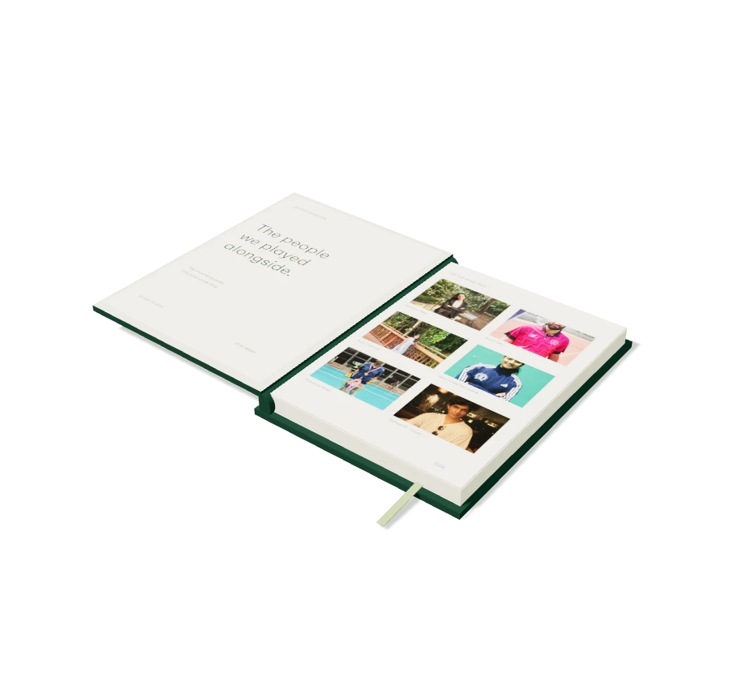
Sports Yearbook · 2026
Some things
stay with you.
The games end.
The people stay a part of you.
Class of 2026
IIT Bombay Sports
The class
of 2026.
Find a familiar face.
Read what their teammates remember.
172 name entries · 1,102 messages
AM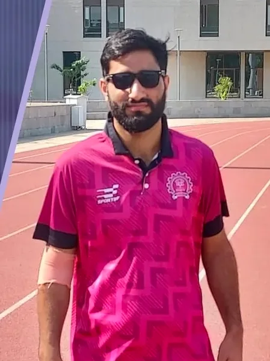
Aamir Mir
Cricket
9 messages↗

His batting style is totally opposite of who he is as person. A calm person with an aggressive batting style. His advice always helped the team in crucial moments and high strike rate innings gave an edge in battting.
Aamir bhaiya is the power house of IIT Bombay cricket, always humble and friendly. Always treated me as his younger brother and guided me through the election process as well. Aamir bhaiya is always an inspiration for us, his skills as well as talent in the game is remarkable. Truly appreciate his contribution to IITB cricket. Best wishes for your future !!
Hard hitting opener
Aamir, one of my dearest friends, you were a star of IITB CRICKET. People will gasp at your long sixes even after you left the IIT. Your contributions to IITBSPORTS was humongous. Wishing you all the best for your future
Bohot Tez shot maarte hai , scorer of the team
Mazedar insan. Maza aaya aapko bowling krke. Best wishes!
He is a genuinely kind and humble person who always treats everyone with respect. His passion for cricket, dedication towards the team, and positive mindset were truly admirable. The way he carried himself both on and off the field made him someone everyone looked up to.
You had a rough season and still turned up. That matters more than anyone in that dressing room said out loud. It wasn't missed.
AM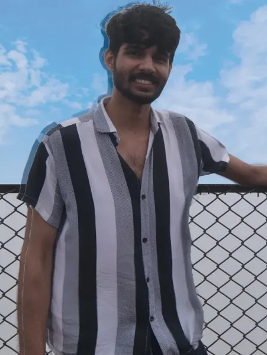
Abhay Meena
Volleyball · Institute Sports Council
6 messages↗

Non-playing secy, but bonding with every team player is showing the enthu towards the team and community. Always wanted a senior, secy like him
I haven't met them very often, but whenever I did, they were always in a very fun and playful mood. And the interaction we had on Sophie's treat day was also very memorable
I had not played a lot with but he help me a lot in my game and general life.
His secy period was so good . He is a very humble and kind person. He always addresses his juniors by saying ," kaise ho baccha , sab thik".
Council ke alawa humari zyada interaction toh nahi hui, lekin jitni bhi hui, aapne hamesha guide aur support hi kiya. ❤️ Aur ek cheez jo hamesha constant rahi, aapki smile. 😄 Har baar dekh ke lagta tha ki sab chill hai. Thank you for all the help and guidance. Wishing you all the very best for everything ahead! ✨
abhayy bhaiyaaa , that sab hojayega wala thought you had whnever i came up to you was very helpful . aapse bht seekha hun , you were really the best in everything. thanks alot for being like a big brother . You always had the great courage to go ahead in life no matter what happens . Hope you have a great life ahead .
View attached photo ↗ (external, opens in a new tab)AAbhishek
Basketball
11 messages↗
Most disciplined and stubborn member of our team. Guy with so much experience and ways of getting things done. Truly carried team on his shoulders our Kaptaan. Will miss an elder brother like you.
Amazing memories with Abhishek. Unarguably the most non- BS person I met in the basketball team. Will always remember your side eyes, comebacks and pink shorts. Plus buzzer beater at YMCA will never be forgotten. 🫡
View attached photo ↗ (external, opens in a new tab)Amazing memories with Abhishek. Unarguably the most non- BS person I met in the basketball team. Will always remember your side eyes, comebacks and pink shorts. Plus buzzer beater at YMCA will never be forgotten. 🫡
View attached photo ↗ (external, opens in a new tab)Amazing memories with Abhishek. Unarguably the most non-BS person I met in the basketball team. Will always remember your side eyes, comebacks and pink shorts. Plus buzzer beater at YMCA will never be forgotten. 🫡
View attached photo ↗ (external, opens in a new tab)Abhishek truly showed me what it is like to be a silent weapon. Single handedly leading our fast break opener, he was a true pillar of our team.With his quick, snarky humour, he never ceased to make me smile. Most of all, I sincerely thank abhishek for asking sir for water break in camp, when all of us were afraid to😂
View attached photo ↗ (external, opens in a new tab)Thank you Abhishek, your contribution to basketball and our team will always be remembered. (so will you questions in the soapbox 😭). You always inspired discipline and we learnt a lot from you ❤️
Always brought a calm and dependable presence to the court. Wishing you success wherever life takes you next, thank you for being a senior we could look up to!
best gsec oat, thanks for all the help during my acl injury, will miss you sir
Haven’t played much with you but the chase down block against kms in Avahan is my favourite memory, that shit was crazzyyyyy
IBP 25, first year mein tha. Inhone pure tournament bohot sunaya tha. I feel, that was the most important moment in my basketball journey in college so far. One of the most kind hearted, chill and approachable seniors i have ever met. Loved to talk and play with him. See you man milte hai sometime
udta rajasthan fr Always good seeing you on the court. Keep dropping by
AAchirangshu
Aquatics
8 messages↗
The swim team won’t quite feel the same without you around. Thank you for the time, effort, and energy you gave to the sport and the team. Your waterpolo skill is unmatched. Wishing you all the best as you dive into exciting new beginnings.
Thank you for your guidance and being such a good mentor to us .
What should I even write about you? Words genuinely can’t express how much I’m going to miss you in the team. You’ve always been that one person who made me feel comfortable n included. The biggest pookie of the team fr. You’re not just an amazing secy, but such a sweet, kind, and caring person overall.
Achi bhaiya - an excellent swimmer, chill both inside and outside the pool. Gives the best relationship advice and is superb as a senior. Grateful to be a part of his team in waterpolo league Have a great future ahead
The one striker jinke goal bachaane ke liye meri w ghante ki class li gayi thi. Gonna miss you bhaiya
Ending was not that great but the whole journey was amazing.best secy I have seen till now
The aquatics secratary by whos idea of a proposal of waterpolo camp gave me a chance to get on the squad. Thanks for your dedication and devotion to aquatics. Buoy you really carried forward the culture of aquatics
View attached photo ↗ (external, opens in a new tab)A really chill and approachable senior who's always ready to help. Easy to talk to, supportive, and someone you can count on whenever you need guidance or advice.
ADAchirangshu Dakua
Institute Sports Council
2 messages↗
Hey, we haven't interacted a lot, but you've guided me well a few times. From whatever little I've known you, you've always seemed like a super chill and sorted guy. Wishing you all the best for everything ahead. Stay chill, and hope the next chapter treats you well! ❤️
Crazy fun senior, was always giving inputs whenever needed either with chemical or life . thanks for the memories , hope you have a great life ahead bhaiyaa
A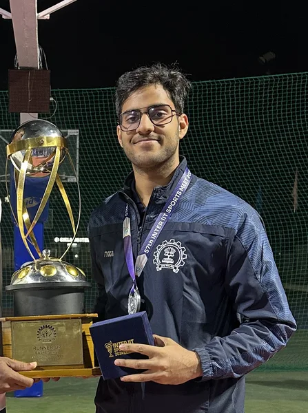
Aditya
Basketball
4 messages↗

A familiar face in the basketball community and someone who helped keep the team spirit alive. Hope the next chapter is just as exciting as the one you've left behind here. Cheers!
Thank you for being a part of our team, it was always a pleasure to see you play. Keep visiting!
will miss playing with u man
It was fun playing with you, we have only played a few times but you have always pointed out my mistakes and it really helped. Thank youuuu
AA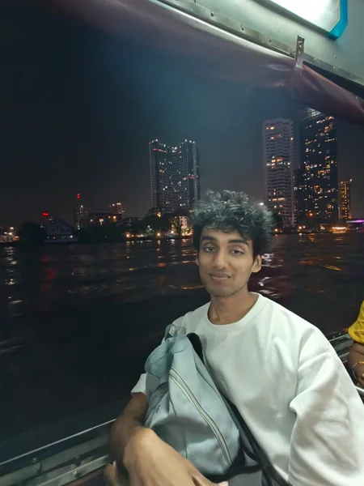
Aditya Agrawal
Squash
7 messages↗

You played elegant and efficient Squash, your matches were thrilling and I got to learn a lot from you, when we played. Along with being an amazing squash player, you are also a confident and knowledgeable person. I like that you are straightforward and bold, when speaking about your opinions. All the best for your future endeavours bhaiya! Let's meet again next time you come back to the campus.
seems to be lazy but turns different as steps into the court.
The lefty wizard. That's what we'll remember. Watching him play felt like watching someone solve a problem nobody else could see the ball going exactly where you weren't 😊.
Master of dedication!! 🙌
I have seen you playing squash countless times, and honestly, your game is one of the best I have ever seen. The effort, discipline, and commitment you showed in squash were truly inspiring. All the best for your future endeavors.
It was always fun seeing you at the courts. Good luck for the future!
Really enjoyed playing that one match with him where I got demolished! Unreal player honestly just does not get tireddd
AM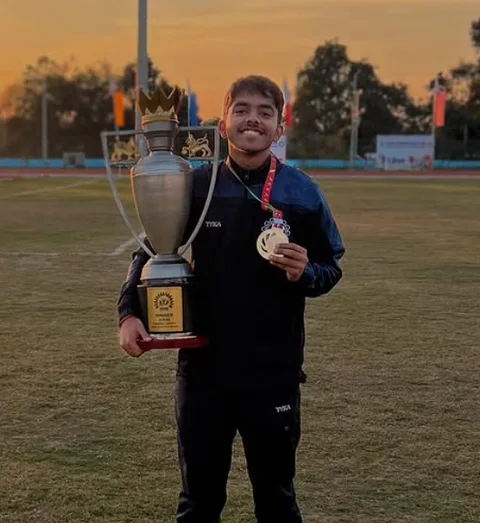
Aditya Murali
Institute Sports Council · Board Games
10 messages↗

our first meeting was toh very nice and interesting 😛 … mujhe laga tu koi hoga padhaku nerd mallu, 2-3 gaali dunga aur fir chup chap side hojayega but BROO crazyyyy tune meri hi gaand maardi… and from there the next one year was toh superb yaar with u just because tera humour sense bhi meri tarah broken hai 😂😂… will def miss you and your gandu gotiya comeback:))
View attached photo ↗ (external, opens in a new tab)broo!! couldn't have asked for a better secyy!! convener tenure wass the peakk under youu.. Stay the same, the support, the help & guidance that you gave us wass next to none🫶 surelyy one of my besttt seniors @iitb❤️ tysm for everything☺️
Always supportive, funny, and making the whole room vibe chill. From Inter IIT memories to random bakchodi, everything was more fun around you. And ofc, can never forget the legendary supply during Inter IIT. Truly one of the best senior could ask for. Wishing you huge success ahead Aditya, board games won’t be the same without you!
Hey man, have had such a great time with you, especially during InterIIT. Although I was a freshie at the time really felt like I belonged here as a part of the team, playing poker, having pizza and tea, playing tt, man that was a blast. Also I still remember you telling me during that time that becoming the secretary was such a hectic time and its just crazy... in my mind I was like what are these guys on about... well I get it now. Thanks a lot for being there and helping me along the way, and you're welcome for the InterIIT Gold ;) Hope we always stay in touch and best of luck for everything life hits you with!
Bain Guy is always in the council, crazy macha diya aapne intern, and then PPO. Your chess skills are also amazing. You have a lovely personality and always treated all the juniors like your brothers. I can never forget the day when I saw you vomit continuously at the afterparty. Loved to be part of the sports council under you, thank you for all the support and help , wishing you a great future ahead ❤️
From random chess discussions and local tournaments to Inter IIT trips and all the board games chaos, college genuinely wouldn’t have been the same without you. Being Convenor during your tenure was honestly such a fun experience. Haan kaam ka stress toh tha, but somehow events with you (never) felt too hectic. We’ve pulled off so many things together that now it just feels weird thinking you’ll actually be graduating And obviously the legendary “my throat is a bit…” moment can never be forgotten 😭 Bhai ek announcement kya galat bol diya, poori life ka content mil gaya sabko. I know this joke is never dying. Also huge congratulations on Bain. From (not) treating us after events to now becoming officially corporate rich, proud of you bhai 😂 Next treat pe kab chalna hai? Thanks for always helping me out whenever needed, and for all the memories tournaments, trips, treats, random conversations and everything in between. Bohot sahi time tha honestly. Bss ek inter iit gold reh gaya sath m. Wishing you the best for whatever comes next. And yes, we still have some unfinished chess games left.
View attached photo ↗ (external, opens in a new tab)Heard a lot about you. Unfortunately I could not meet you in person over the board or at farewell. Looking forward to meet you when you visit the campus❤️
Bhai this sunset phot you've given for display here is so nostalgic. Yaar, honestly, word limit reach hojayegi bhai yaha agar aapke baareme detail me likhne gaya toh😭 Agar IIT mein un seniors ki list banao jinhone meri journey par sabse zyada impact dala hai, toh aap uss list mein bahut upar aaoge. Pata hi nahi chala ki first year se lekar ab tak kitni memories collect ho gayi. Sabse pehle toh thank you for always guiding me. Aur haan, abhi bhi placements and graduation ke baad bhi guide karna band mat kar dena, kaafi kaam baaki hai. 😭😭 Inter-IIT memories... ahhh, no words honestly. My first Inter-IIT was genuinely one of the best experiences of my college life (and I'm sure one of yours as well), and having you around made it even more special. The excitement, the chaos, the matches, the bakchodi, the late-night conversations, Siddhesh-Nitish ki bakchodi, everything just hits differently when I think about it now. Even '24 inter IIT was crazy, we got gold. This year's Inter-IIT made me realize how much I missed having you there. It just wasn't the same. Then came all the council memories. Working together for such a long time means we've seen almost every possible situation, good days, stressful days, last-minute decisions, random bakchodi, Yash saying- "actually my throat is a bit....." and everything in between. Secy jaate time mein toh maine blackbox mein bhi hag diya tha 💀, but somehow you were always there to sort things out, give advice, calm things down, and make sure everything eventually worked out. What I've always appreciated is that no matter how chaotic things got, I knew there was someone I could reach out to. Whether it was work-related, council-related, or life-related, you've always been one of the people I could count on. There are honestly too many memories to fit into a yearbook message. Some of the best moments of my IIT life have your presence somewhere in them, and that's something I'll always be grateful for. Aur haan, ek important item abhi bhi pending hai, ek baar toh saath mein properly daaru peeke bhand hona hi hai. 😂 Graduation koi excuse nahi hai, consider this a formal reminder. Thank you for everything the guidance, the support, the trust, the memories, and for always having my back. You're one of those seniors I'll genuinely keep in touch with long after IIT. Bahut miss karenge yaar. Wishing you all the success, happiness, and amazing memories in whatever comes next. ❤️
I may not have had the chance to meet you all personally yet, but I've heard so much about you from the seniors and fellow members that it already feels like I know you a little. The way people speak about you with such warmth and respect says a lot about the kind of people you are. I really hope we get to interact soon and I can learn from you firsthand. Looking forward to that time!
Met him for the first time when we went together for a tournament. Always a fun senior to be around! Looking forward to our future meets! All the very best.
AS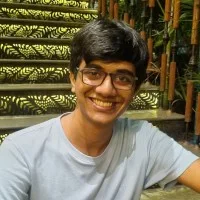
Advay Sant
Board Games
7 messages↗

our rubik's maestro.. quite a chill guyy & always a kind person.. had a greatt time, advay!!🫶🫶
Advay being insane at Rubik’s cube was always too cool to watch. Really hoping cubing keeps getting more alive in insti because of people like you. Loved all the chill conversations and vibes around board games. Wishing you lots of success ahead , gonna miss seeing random cubes getting solved in seconds!
Hey Advay, I still remember the first time we met, in H16 while you taking the cubing workshop and then later during the Rubiks Open Thanks a lot for all the help during my Secy process! Hope we stay in touch and best of luck for life after college!
Heard a lot about you. Unfortunately I could not meet you in person over the board or at farewell. Looking forward to meet you when you visit the campus❤️
One of the chillest people I've met at IIT. You somehow manage to say very little and still have a bigger presence than most people in the room. 😭 Your speedcubing skills have always been insane, and as if that wasn't enough, you're pretty cracked at bullet chess too. I'll always regret not being able to do something truly significant for the Rubik's Cube community during my tenure. But seeing the passion and talent that people like you brought to it makes me happy that I got to be a part of it at all. Wishing you all the best for whatever comes next. Stay chill, keep breaking cubes (and bullet players), and don't become a stranger. ❤️
I may not have had the chance to meet you all personally yet, but I've heard so much about you from the seniors and fellow members that it already feels like I know you a little. The way people speak about you with such warmth and respect says a lot about the kind of people you are. I really hope we get to interact soon and I can learn from you firsthand. Looking forward to that time!
SuperCuber! I had a lot of fun with him at the farewell. Hope we meet again, all the very best for your future!
A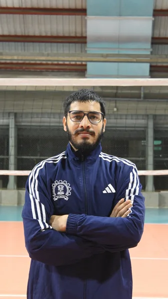
Ahmad
Volleyball
8 messages↗

Ahmad Bhaiya is the heartbeat of our team on the court. As the libero of the team, Ahmad is known for his exceptional defensive skills and his brilliantly trained dolphin scoops that leave everyone amazed. His game awareness, hustle, and fighting spirit make him one of the most dependable players on the court. What truly makes Ahmad special is the crazy energy he brings everywhere he goes. Whether on or off the court, his enthusiasm is infectious. During crucial moments in matches, the words he speaks hit every player deeply and often become the driving force that keeps the team going. Ahmad Bhaiya is not just a player for us he is one of the strongest building blocks of our team and a source of constant motivation and positivity.
Charlie Chaplin of our team Your expressions make every player to laugh and the way you dive or fall on court to save the point makes you exceptional.
When I entered court the one I met first was ahmed bhaiya . Mei bhi libero position khelta hu so I will take tips from him . Till now I didn't saw the libero like him. And also off the court he is like my brother and friend , I love you talk to him .Such a nice senior in vb .
Off the court, Ahmad is just as memorable. Playful, friendly, and full of life, he has a way of making every moment enjoyable. Whether during practice, tournaments, or casual team gatherings, his presence always brought smiles and laughter. He always finds good ways of making anything enjoyable. Really gonna miss his presence in court.
View attached photo ↗ (external, opens in a new tab)The funniest person both on and off the court. He truly enjoys his game and keeps everyone engaged by constantly chatting and interacting while playing. And without a doubt, the best libero IIT Bombay could ever have.
Ahmed bhaiya's pancake will be my fav move for my entire volleyball life. Whenever I hear Ahmad's name a diving boy come in my mind.
Ahmad Bhaiya is the heartbeat of our team on the court. As the libero of the team, Ahmad is known for his exceptional defensive skills and his brilliantly trained dolphin scoops that leave everyone amazed. His game awareness, hustle, and fighting spirit make him one of the most dependable players on the court. What truly makes Ahmad special is the crazy energy he brings everywhere he goes. Whether on or off the court, his enthusiasm is infectious. During crucial moments in matches, the words he speaks hit every player deeply and often become the driving force that keeps the team going. Ahmad Bhaiya is not just a player for us , he is one of the strongest building blocks of our team and a source of constant motivation and positivity.
.
View attached photo ↗ (external, opens in a new tab)A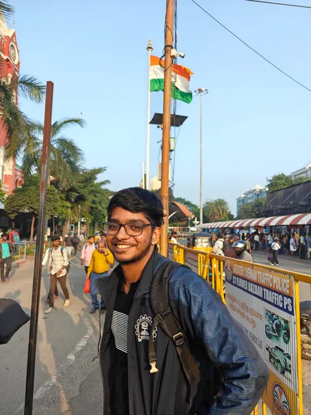
Akash
Basketball
13 messages↗

Our dear captain with 4 inter iit medals in his coat always pushed us to improve and give our hearts and soul for the team. You never ever get a feeling of being a junior around him the way he carries everyone with him.
A leader on and off the court, Akash definitely helped me grow as a person and a player. Being the first tamil person i met on the team, we quickly formed a special bond, full of fun, intense challenges (including me leading the run at the end of camp with a ankle injury😂). His insurmountable presence on defense truly inspired me to hone that aspect of my game; not to forget his dagger three points. I will truly miss him and his leader and big brother like presence on the team.
View attached photo ↗ (external, opens in a new tab)Salute captain! You are the best leader, friend and one of the best people I have in my life. You are just awesome Sansu and no doubt one of the smartest player on court I have played with. Thank you for teaching me those two words in Tamil (which I have forgotten now, please teach me again) and its going to be 3 golds and 1 silver as we decided. Just come to watch us play in kgp. I will miss you a lot brother, see you in gurgaon. P.S. you won't survive in gurgaon 💀
View attached photo ↗ (external, opens in a new tab)Love his dedication to the game, always in the search for improving himself. Great mentor and captain and would've had so much to learn from him - even though his choice of ipl team is questionable :)
You were THE captainn, it was a pleasure to see you play, we are all looking forward to see you every Alumni Day. You're the sweetest and always a go to for the most reasonable advice. We will miss you so much on and off the court. You and Sanah are the power couple we will never forget.
Good Human. Great player and best captain. Enjoyed playing with you. Keep it up. Wishing you great life ahead.
Thank you for being a part of the journey and contributing to the team's culture. Wishing you endless success, happiness, and plenty of wins ahead. Have a joyous life ahead :)
Will miss my competition (iykyk). Stay in touch captain ;)
View attached photo ↗ (external, opens in a new tab)my captainnnnn... how will i do freshie treats without u bro, im gonna miss playing with you keep coming back pls and also thanks for the photo frame, i get to look at your face everyday
MAAAAA CAPTAINNNNN, I loveeeee youuuu sansu, muaaaahhhh.
View attached photo ↗ (external, opens in a new tab)The nicest senior i have met. Always showed up to court with or before me, loved to play with him and win. He always guided me in matches and held me together if i was losing my head in games. And fhe guy is a party animal too, freshie trear was a core memory for me. See you soon man.
Sansuuuuuuuu Oh captain my captain Where do i even start bro, way too many memories to talk about here lol. I guess we'll eventually cover all of them, gives us a reason to keep meeting also lol. One of the friendliest guys ever and it shows bro, ppl naturally gravitate towards you. From year 1, its been amazing spending time with you and it all jist clicked so easily. Lol, 3rd sem and i had alr invaded your room with a cat. Ig its like those friends we spoke about one of those days, when we meet again, its gonna be like nothing changed ayeee. On and off the court, its been an absolute blast, with that gold medal being the icing on the cake. I love you bro and take care. I'll see you soon in August lol
sansugu 🍑 always a pleasure to see you on court! keep coming back
A
Akshara
Institute Sports Council
5 messages↗
Sweetest person I met in the council, loved to be part of the MnCJT under your lead, 12th Sept waali treat karte h hum kabhi pata nhi kab ho payegi waise woh and aapki bhi MnCJT waali treat bachi h , pura tenure was so fun and crazy under you , GOA was total fab, Thanks for showing conviction in me for Events Nom, and aise hi beers and sutta continue rakhna , All the best for your future life 💖, and Akanksha ke alawa hamare birthdays pe bhi gift dena pls 😂
Sweetest girls nom . Wishing you all the best for everything ahead!
Council ke common events ke alawa bhi aapke saath kaafi mast memories judi hui hain- Cyclothon, Alumni Weekend pe pickleball, etc aur of course Goa!! Goa toh genuinely ek crazy trip thi, full bakchodi aur maze. Aur haan, aapke legendary "bandi kaise pataye" tips bhi nahi bhoolunga kabhi. 😂 Bahut maza aaya aapke saath. Kaafi miss karenge yaar. Wishing you all the best for everything ahead! ❤️
kya hi bolu yaar ab, goa ki bakchodi aur overall is saal kaafi happening Raha is council ke saath. kaafi enjoy kiya aapke saath kaam karna bas jaate jaate ek aakhri wish hai, mere liye koi prom sort karma do. cheers to 3 years of this council
akkaaaa , thanks for always taking care and helping me out whenever i came up to you . you were the best . hope you have a great life ahead
AN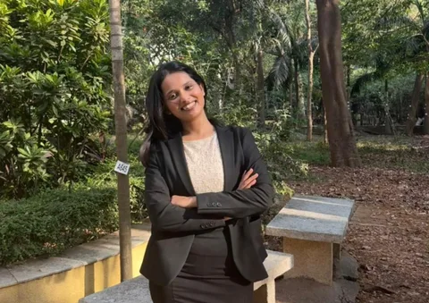
Akshara Naik
Volleyball
8 messages↗

Honestly, you've been the best and most reliable convener, like no stress, no drama, just getting things done smoothly every single time. Half the time, it felt like things were running well because you were handling them. On the field, what an attacker, yaar. So efficient, so sharp, and full sexy player vibes. But what really makes Akshu is your nature. Zero ego, always grounded, and the way you've been 100% respectful to seniors, that's something not everyone manages, and it truly shows your character.
View attached photo ↗ (external, opens in a new tab)Very humble and sweet person. always ready to help juniors. even thought we meet in this semester and you guide me about volleyball . thank you for everything.
Di, I’ll really miss you on the court. Whether it was on the court or off the court, you were always there to help and support us. Being from the same department made it even easier to look up to you and learn from you. Thank you for always being so kind and helpful. I’ll miss you a lot and wish you all the best for the future! ❤️🏐
Hey attacker! Ever since summer camp 2023, I've been in awe of your game. One thing I’ve always loved watching is that close net attack ball you ask for. From those early days to winning the silver medal together at Inter IIT 2023, we made memories that I’ll cherish for a long time. You’ve been a wonderful convener for the community. I really admire how effortlessly you connect with people and always stay true to the core purpose of why we play and do things. I wanted you on my team for both IVL 2024 and 2025, and I’m glad it worked out. It was always a pleasure sharing the court with you as your setter. Wishing you the very best ahead!
View attached photo ↗ (external, opens in a new tab)Genuinely a great person, always guided me and kaafi achha time spent kiya sath me.
I didn't get to interact with him much, but we had a great conversation during the Sophie treat. I got to hear a lot of interesting things and learned quite a lot from him
She created a amazing bond between boys and girls team.
Honestly, you've been the best and most reliable convener, like no stress, no drama, just getting things done smoothly every single time. Half the time, it felt like things were running well because you were handling them. On the field, what an attacker, yaar. So efficient, so sharp, and full sexy player vibes. But what really makes Akshu is your nature. Zero ego, always grounded, and the way you've been 100% respectful to seniors, that's something not everyone manages, and it truly shows your character.
AT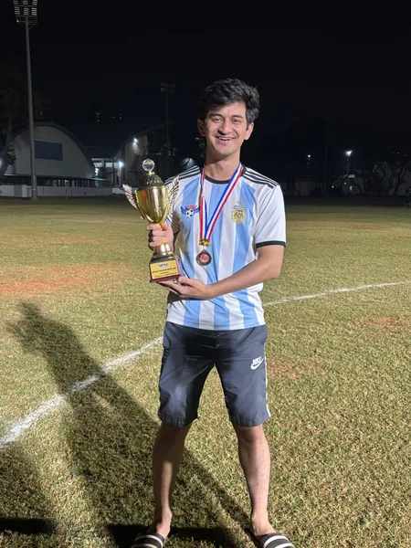
Akshat Thakur
Football
8 messages↗

Legend of the game ❤️
It’s hard to believe you're leaving. Playing football with you has been one of the best parts of college life. Beyond being a great player, you were the one who brought people together, organized tournaments, and created memories that we'll all carry with us for a long time. Thank you for your leadership, dedication, and the countless matches we played together. The football community here won't be the same without you. Wishing you success, happiness, and many more victories wherever life takes you next. You'll always have a place on our team. All the best, senior. We'll miss you.
Writing this feels a bit unreal because it still hasn’t sunk in that you’re actually graduating. From being my ISMP mentor to someone I could casually talk football with, you’ve been way more than just a senior. Playing together for Spain in IFL is something I’ll always remember those matches, random banter, and the way you carried yourself on and off the pitch. You made things feel easier in the beginning, especially when everything was new and slightly overwhelming. It never felt like a “mentor-mentee” thing, more like having someone who just gets it. Also, I’ll always respect how calm and composed you stayed, even in intense moments (both in life and in games). Honestly, campus is going to feel a little different without you around. Wishing you the best for whatever comes next you’ll definitely do great. Stay in touch, and we’ll meet again on the field someday.
Quite something that my most memorable moment was carrying AT back to his room and calling the wrong SMPC but regardless had some great experiences.
Always injury prone and always in cafe 97 with a girl,Kamra ho toh aapke jaisa 🙏. Enjoyed playing ifl and gc against you and hope you keep coming as an alum and this time without injuries
It was always fun playing by your side knowing you'd cover any mistake I made at the backline. Spree nights were crazy as well with you sir along with the iconic H5 GC night. Stay in touch with the sport my goat and stop getting injured. wishing you the best ahead my goat
Dear Akshat, Your enthusiasm and active presence have always stood out. As a defender, you always gave your best whenever you stepped onto the field, and your energy added to the spirit of the team. Thank you for the memories, the fun moments, and the positivity you brought to our football family. Wishing you success, happiness, and all the best for the future. May you continue to achieve great things wherever life takes you.
Dear Akshat, Your enthusiasm and active presence have always stood out. As a defender, you always gave your best whenever you stepped onto the field, and your energy added to the spirit of the team. Thank you for the memories, the fun moments, and the positivity you brought to our football family. Wishing you success, happiness, and all the best for the future. May you continue to achieve great things wherever life takes you.
AKAmit Kumar
Athletics
15 messages↗
He is too good as a team lead nd a superb athlete too .
You have truly been one of the most fantastic people to lead us. Your determination, resilience, and incredibly high standards are qualities that everyone admires deeply. Running in the event despite your injured feet showed not only your strength but also your commitment and passion something I’m sure everyone is proud of. Your absence on the ground will definitely be difficult to fill, because your presence, energy, and leadership always inspired those around you. I sincerely hope you achieve even greater success in life and continue to touch lives wherever you go. Wishing you a fantastic future ahead, filled with happiness, success, and countless achievements. Stay amazing, buddy.
The team captain last year, and I could figure out why he was chosen as the one. First met him at the football turf on a Sunday before classes began. One hell of a runner and an athelte overall. Passionate, dedicated, sometimes unhinged and funny. Wish him all the best for the journey ahead!
Best motivation Badtameezi mat karo
wonderful experience with you guys
View attached photo ↗ (external, opens in a new tab)All the best amit bhaiyya on all ur endeavours, u were the bestest captain
He is a great captain of the Athletics team. The way he is dedicated to the team is very good. He is a good leader and he really wants the team to do well. He motivates the team members. He shows them what to do by doing it himself. He works hard to make sure everything runs smoothly during training and events. He is always positive. He is willing to help everyone on the team. This has really helped the team to be successful and happy. It was a lot of fun being on the team with him as the captain. The Athletics team has been very lucky to have Amit as the captain.
Amit bhaiya was the very hardworking in terms of athletics. After 3 years of struggle for medal, he finally glowed and proved himself in the Inter-IIT Hyderabad by securing 3 silver medals and 1 gold medal! Despite of lot of peer pressure and competition, he continued doing hardwork and believing in himself, which ultimately paid him off. I don't know him in other fields, but I feel as an athlete he has immense potential even more than what he is now. Being a final year student, you have other stresses as well, and on the top of that he was captain as well, so not only he had to focus just on himself but also on each and every player's performance. He managed it very well with his own practice, and did not let all other things distract his goal of inter-iit medals. Amit bhaiya, I wish you a very happy and successful journey ahead!
View attached photo ↗ (external, opens in a new tab)Beyond leading the team, they were always there to listen, offer advice, and support me whenever I needed someone to talk to. Their encouragement and guidance helped me stay motivated both on and off the field.
A former captain of athletics and one of the most funny guys in athletics. Always supportive and encouraging to push forward.
Dear Amit Bhaiya, You were one of the first people I met on the team, and I’m really glad I got the chance to know you. Throughout the year, you have always been kind, helpful, and supportive. No matter what, you always had a smile on your face and brought positive energy to the team. Training with you has been a great experience, and I’ve learned a lot from you, both on and off the field. Thank you for everything, Amit Bhaiya. Wishing you all the very best for the future and success in whatever you choose to do. You will be missed!
Our unstoppable captain. He is always motivating and telling us to push our limits. Thank you for all the guidance and motivation and wish you lots of happiness and success wherever you go.
View attached photo ↗ (external, opens in a new tab)Captain who got the podium back🔥🔥, will miss all the training sessions and reminders for course submissions
I wish you a happy and successful journey ahead.
View attached photo ↗ (external, opens in a new tab)Incredible leadership throughout. Great consistency and commitment to the sport. Good bonding over the years
AM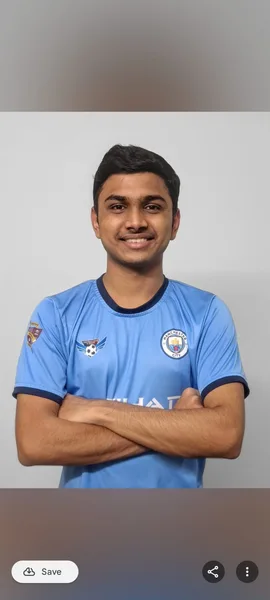
Amit Malakar
Football
4 messages↗

Really enjoyed playing with you throughout this year and also learning from you. I hope you keep coming back as an alum to play
had a great time by your side in this sport especially the IFL matches last year in Man City with you leading the backline along with us freshers. Wish you the very best ahead goat.
Dear Amit, Your enthusiasm and active presence have always stood out. As a defender, you always gave your best whenever you stepped onto the field, and your energy added to the spirit of the team. Thank you for the memories, the fun moments, and the positivity you brought to our football family. Wishing you success, happiness, and all the best for the future. May you continue to achieve great things wherever life takes you.
Dear Amit, Your enthusiasm and active presence have always stood out. As a defender, you always gave your best whenever you stepped onto the field, and your energy added to the spirit of the team. Thank you for the memories, the fun moments, and the positivity you brought to our football family. Wishing you success, happiness, and all the best for the future. May you continue to achieve great things wherever life takes you.
A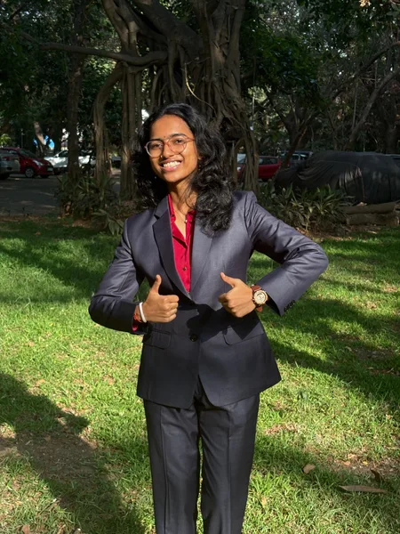
Anandhita
Indian Games
6 messages↗

Thank you for all the dedication, passion, and spirit you brought throughout your journey. Your hard work, achievements, and presence have truly inspired many people and left a lasting impact. Wishing you endless success, happiness, and victories in whatever comes next. You’ll always be remembered for the energy and legacy you leave behind. All the best for your future! 💙
Amazing ankle hold and great cover. A very fun person to have in the team
Many thanks for the dedication, passion, and enthusiasm you have exhibited throughout your journey. All the best for the future!
Woahh! Mam, wishing you all the happiness and success! Keep shining the brightest:))
It feels emotional to say goodbye to such amazing seniors and teammates. Your hard work, sportsmanship, and love for Kabaddi inspired us throughout our journey. You made every practice session exciting and every match full of motivation. Beyond the game, you always encouraged us and treated us with kindness. The memories, laughter, and lessons shared with you all will always stay close to our hearts. We are grateful for everything you taught us both on and off the court. Wishing you success and happiness in every step of life ahead. Thank you for being wonderful seniors. We will truly miss you.
Never met you in the court since I wasn't there when you played, but we met unknowingly in the handloom class if you remember. I was surprised to know that you were part of Indian Games when I got to know.
AJ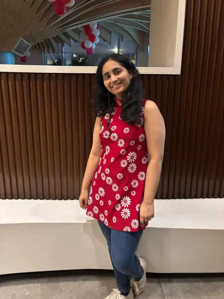
Anika Jain
Ultimate Frisbee
1 message↗

One of the most active player of her time Enjoyed a lot while she being in the same team.
A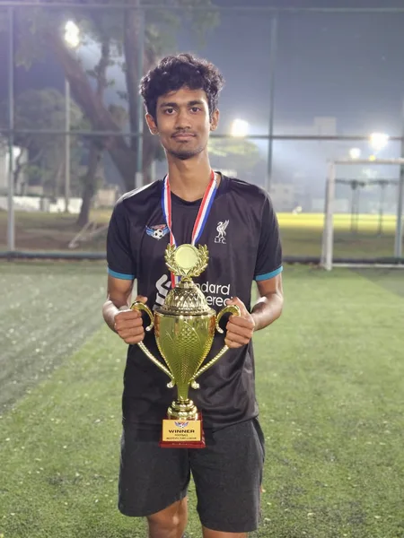
Aniruddha
Football
5 messages↗

GC was horrible and so was our team everytime but for the few moments that it was decent, I’m glad we were on the same team.
First time I saw you play was in your nso in 2022 and I still remember how you megged me on the sidelines and I came running back to get the ball from you, really enjoyed playing all that I have with you and hope that you keep coming back as an alum
had a great time by your side in this sport especially that one hot sunday afternoon mech league final last year. Iconic. Wish you the very best ahead goat.
Dear Aniruddha, Your enthusiasm and active presence have always stood out. As a defender, you always gave your best whenever you stepped onto the field, and your energy added to the spirit of the team. Thank you for the memories, the fun moments, and the positivity you brought to our football family. Wishing you success, happiness, and all the best for the future. May you continue to achieve great things wherever life takes you.
Dear Aniruddha, Your enthusiasm and active presence have always stood out. As a defender, you always gave your best whenever you stepped onto the field, and your energy added to the spirit of the team. Thank you for the memories, the fun moments, and the positivity you brought to our football family. Wishing you success, happiness, and all the best for the future. May you continue to achieve great things wherever life takes you.
A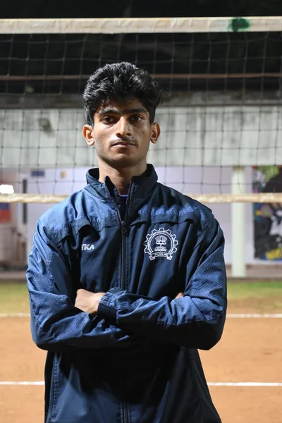
Anish
Volleyball
9 messages↗

Anish Anna is truly one of the sweetest and most genuine people in the institute. A person who has connections all across IIT Bombay, yet stays grounded and always ready to help anyone who reaches out to him. He has worked tirelessly for the upliftment of the volleyball community and has contributed immensely both on and off the court. An exceptional setter with brilliant game sense, he is equally known for the positive energy he brings to the team. He constantly motivates and encourages his juniors, making everyone around him feel confident and included. Full of energy, enthusiasm, and pure “dhamaka” vibes, Anish Anna is not just a senior but a pillar of the volleyball family at IITB.
The growth I've seen in his game is extraordinary! (with all the injuries 😅) And most of it was self-driven.
Oh captain my captain, leading the team in every single game and day on court makes the team confident and complete.Your presence on court and guiding every player makes you different from other players.
Bhaiya, I was always amazed by your setting skills. You are an incredible setter, and I learned a lot just by watching you play. Your presence on the court brought confidence and energy to the team. I’ll truly miss watching you play and having you on the court. Thank you for everything, and wishing you all the best for the future!
Thambi! Ace player! Volleyball court la naan sandhicha oru wow jeevan, really glad to have met you. The more I've gotten to know you, the more I've admired your values, maturity, and the way you've always cared for the entire community, chance ae illa! I've been watching you since post-COVID, around august 2022. Vera level game! 🔥 Wow opposite hitter, wow setter, wow defence, aaga motham, 'aiya all area la yum ghilli'. You've really been an inspiration to many of us. One of the very few people who wouldn't hesitate to play with the girls' team Off the court, you're such a poruppana paiyan. Over the last few months, I'm really glad I got to spend more time with you. The way you handled and led the community was wow. The community is truly lucky to have you as its "Captain" 🫡. Stay the same wonderful person you are. Hope I keep running into you on campus until Shruti graduates 😂. Wishing you all the very best ahead thambi!
View attached photo ↗ (external, opens in a new tab)A senior who guides us and gives tips to improve. I learned a lot while working with them in the Aavhan team. sometime. And their respect and dedication for the game are on another level.
He has always been my guide and mentor towards volleyball and acads. All around personality, ready to play any position for the team. Discipline is what I've learnt from him.
He is one of the my favourite senior. He helped a lot to each and every fresher and also he led the volleyball community.
Anish Anna is truly one of the sweetest and most genuine people in the institute. A person who has connections all across IIT Bombay, yet stays grounded and always ready to help anyone who reaches out to him. He has worked tirelessly for the upliftment of the volleyball community and has contributed immensely both on and off the court. An exceptional setter with brilliant game sense, he is equally known for the positive energy he brings to the team. He constantly motivates and encourages his juniors, making everyone around him feel confident and included. Full of energy, enthusiasm, and pure “dhamaka” vibes, Anish Anna is not just a senior but a pillar of the volleyball family at IITB.
AK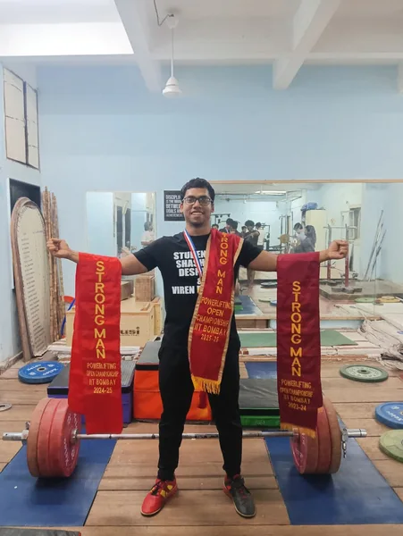
Anish Kumar Sahu
Weightlifting
11 messages↗

I personally learned a lot from you — not just techniques and training methods, but also lessons about diet, mindset, and life. No matter what, you were always ready to help juniors and guide us whenever the coach wasn’t available. You were more than a senior; you were like a mentor and a role model to many of us. Wishing you success and happiness for everything ahead. The team will truly miss your presence. Farewell and thank you for everything!
Even before I joined the sport, I had already heard about Anish bhaiya. His style of lifting is amazing to watch. An amazing lifter, but an even better person. Thank you for all of your guidance. Wishing you all the best for your new journey. #WACAO
One of the most chill members ever. Really fascinating how he changed from chill to deadly while lifting.
They are an inspiration to us Their commitment towards weightlifting made me more motivated and serious about this sport and also very supportive Legend🫡🫡
I met Anish when I joined for a workshop he conducted in weightlifting. Seeing him lifting those weights gave encouragement that I can too lift. He trains dedicatedly and has inspired a lots of people. As a secretary also he has done lot's of work for Weightlifting. We will definitely miss him as he was the one who can bring out the best in lifters by encouraging to lift more and get stronger.
View attached photo ↗ (external, opens in a new tab)An absolute beast in competitions. He always inspires me to get stronger with his freakish strength. He is the type of senior you wish to have by your side.
Most dedicated guy in the Weightlifting Team and for weightlifting. #The strong Man. # The best lifter. Learnt alot from you. All the best Anish for future.
View attached photo ↗ (external, opens in a new tab)Most dedicated guy in the Weightlifting Team and for weightlifting. #The strong Man. # The best lifter. Learnt alot from you. All the best Anish for future.
View attached photo ↗ (external, opens in a new tab)Not any experiance with this person
View attached photo ↗ (external, opens in a new tab)Many thanks for the dedication, passion, and enthusiasm you have exhibited throughout your journey. All the best for the future!
At first glance, he looked like someone who only thinks about serious things and heavy lifts. Turns out, the only heavy thing about him is the weight he lifts. He's a genuinely good human being, always ready to help others and always bringing positive energy wherever he goes. His dedication towards powerlifting is truly admirable, and at times, I have found myself inspired by his commitment and discipline. At the same time, he never misses a chance to crack whatsapp sticker jokes or send his trademark sticker messages. Overall, he's a great junior and an even better person. One line that perfectly suits him is: "Umar badh rahi hai, par harkaton mein koi sudhaar nahi!" 😄
View attached photo ↗ (external, opens in a new tab)AR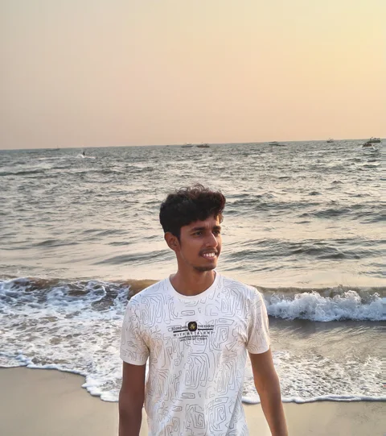
Ankit Raj
Indian Games
13 messages↗

One of the natkhat senior I met at the institute. Always have the energy to throw a joke. I saw him always in a jolly mood that provide us a very nice environment so that we can freely speak up and enjoy the fun. Spending time with him feels like I am with my any of my friends. Going to miss him badly, his gameplay, his behaviour, and everything. You are always welcomed to the kho kho court for playing with us.
To the senior who always carried a smile on and off the Kho Kho ground — thank you for being such an amazing inspiration. Your positive attitude, constant encouragement, and the way you appreciated every small effort always boosted everyone’s confidence, especially mine. Your judgement skills during the game are truly superb, and the way you give cuts while running is something I’ve always admired and learned from. Beyond being a great player, you are someone who motivates the whole team and creates an environment where everyone feels encouraged to improve. Thank you for teaching me important aspects of the game, especially judgement and presence of mind. Wishing you lots of success ahead — the Kho Kho ground will definitely miss your energy and smile!
View attached photo ↗ (external, opens in a new tab)Civil senior who is always ready to help, a little introvert but not too innocent. His pole dives and flying dives were amazing 🙌🏻, all beginners player really admire you. We are greatful for your contribution to kho-kho in both spardha and Aavhan. Baki Naam tho sahi rakha hai apka Ankit Raj aakhir hum sabke dilo par raj hi tho kiya hai apne starting se. Apke wingie krish jab joint secy ke liye gya tha woh humesha yaad rahega, mujhe itna bolne par aur heavy efforts ke baad bhi haar gye woh. Uske baad last days ki pokar night bhi badhiya thi. Uske baad mere conv. Tenure me apko call na karne par naraj ho jana, bolte the ki tune call nhi kiya isliye nhi aaya, after that daily sabse pehle apko hi call karta tha 😄. Thanks for supporting and guiding me throughout the end, keep connected in future also.
View attached photo ↗ (external, opens in a new tab)Bari height wale 😂 bhut bari height wale .....ek team me hoke harte hi h hum 🥹pichle ikkl se iss ikkl me game skill toh improve hui lekin fhir bhi hum haar gye 🙂 (also bhagwan ke better half bhi h ye)
Met him just some months ago but made very good bond with him . He is really very calm and kind.
He is calm person. He has a positive vibe and makes everyone feel comfortable around him. Talking to him is always fun and easy. Wishing him lots of success, happiness and good memories ahead.
Coolest senior i have ever met in Indian games like never get ready to give a treat till end .From practices to matches, every moment with you felt like family. Thank you for creating memories we’ll never forget. The team bond won’t be the same without you on the ground. You’ll always be an important part of our kho kho family.
Ankit bhaiya, you are a very kind person. The way you play kho-kho is amazing. Your long dives are really impressive, and your judgement during the game is excellent. Your late kho is also outstanding. As a player, you are truly a diamond. Outside the court, you are also very nice and friendly. You always talk to us properly and guide us about different life problems and their solutions. You are like an elder brother to me, and the bond we have made will never break. Just keep coming to meet us sometimes, and don’t forget to give us a nice treat. Miss you, bhaiya. ❤️
View attached photo ↗ (external, opens in a new tab)Hello Ankit Bhaiya, In such a short time, our bond with you became so strong and natural that it never felt like there was any senior-junior gap between us. You always brought fun and energy wherever you were, and spending time with you automatically meant there would be laughter and chaos 😂. And of course, how can I forget calling you “Bihari Boy” all the time 😂. One of the funniest and most memorable moments for me will always be our “couple dance partnership,” which started completely for fun but became one of those memories we’ll keep laughing about for a long time. The last few days before you left campus became even more special because we spent so much time together. Those random conversations, fun moments, and simply sitting together for hours made our bond much stronger without us even realizing it. Thank you for always making the atmosphere lighter, happier, and more enjoyable. We are definitely going to miss your presence a lot, bhaiya. Wishing you happiness, success, and lots of great memories ahead in life.
Thank you for all the dedication, passion, and spirit you brought throughout your journey. Your hard work, achievements, and presence have truly inspired many people and left a lasting impact. Wishing you endless success, happiness, and victories in whatever comes next. You’ll always be remembered for the energy and legacy you leave behind. All the best for your future! 💙
Many thanks for the dedication, passion, and enthusiasm you have exhibited throughout your journey. All the best for the future!
Sabb bariyaa h !!! , Bhut chill or shy bhii . Kabhi bhi serious nhi hotee . Poker khelne k liye hmeshaa tyaar rhte h . Refreshments lapet ne m sabsee aage . Jab khud treat Dene ka no. aaye toh maut aa jati. Bhaiya needs someone jo unka dhyaan rakh ske but koi mil nhi rhii 🥺.lots of good wishes from our side 🫶❤️.
The most nonchalant senior in the batch, bonding toh acchi poker se huyi h rather than kho-kho. One of the best seniors, and the thing which I remember the most is jb apn cards exchange krte the poker m to win 😂. Really grateful to have you as senior who always .
AAnshu
Basketball
9 messages↗
Never thought we will come all this way considering how we started. Yet here we are with 3 inter IITs between us. I really was proud of you how you led the team in 2024 kanpur. Love your game, your vibe, most things actually minus your style, which I have to say has much improved over the years. Looking forward to staying in touch, call me you know when :;
View attached photo ↗ (external, opens in a new tab)dear anshu dear, not really sure how you've managed to put up with all my nonsense, but thank you for doing it. you've always been someone I could randomly text or talk to, and somehow you'd always listen, no matter how stupid the topic was. thank you for being so supportive, for all the conversations, and for making things feel a little less overwhelming when they needed to. I'm really glad I got to know you. going to miss having you around. hope life treats you well, and that you find people who listen to your nonsense as patiently as you've listened to mine. love you anshu dear love, tanvi
(Ay Ladkii) I am pretty sure I have never met someone quite like you. You are so radiant, you light up every room you are in, you inspire us with everything you do. I will miss you so much. I will stalk you on LinkedIn every once in a while because you can't be convinced into Instagram. We will miss your "words of affirmation" while trying to fall back on defence, we will miss your postivity, and we will miss biting you, it was a pleasure to share the court with you. Keep visiting, keep in touch, keep being you.
View attached photo ↗ (external, opens in a new tab)Watching you on the court was always a treat, you were an absolute baller 🏀 and this place is going to feel that absence on the court. Wishing you all the best for everything ahead!
Leading a team is never easy, but you carried the responsibility with dedication and commitment. Thank you for everything you've done for IITB Basketball and for setting an example for the rest of us.
Thank you for being such a kind and supportive senior. My fondest memories with you are from camp, inter iit, the meal you made us on aavahan day (truly cooking on and off the court ;) ), teaching me physics and all the meals we had together in H10. You’ve always helped me, guided me, and given the sweetest older sister vibes. I really admire how smart, cool, balanced, and amazing on court you are.
View attached photo ↗ (external, opens in a new tab)hi anshu!!!!! youre a goated senior and i will miss you :))
Anshuuuu you are the sweetest omggggg, so proud of youuuu.
View attached photo ↗ (external, opens in a new tab)Mostest favoritest +2 senior. Always cared about me, held a solution to all my problems, the most active and enthusiastic senior and personal guide i have ever met. Kind of an elder sister to me. See you man, and i still remember that piece of advice you gave me outside mantra. Not forgetting that anytime soon.
A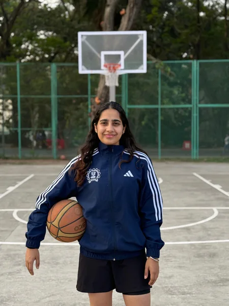
Antara
Basketball
13 messages↗

Official bihari of the team who is always smiling and spreading jolly vibes on and off the court. If you are around Antara you can never be bored as she is a sharp shooter constantly hitting you with jokes. In her secy tenure she always cared about us juniors always striking up conversations. Will miss you a lot in my 4th year
I'm going to miss you so much. thank you for always being so helpful, for giving the best advice whenever I needed it, and for somehow managing to do a million things at once. I genuinely don't think I've met someone as hardworking as you. also, I have to mention your kurtis. they never missed. every single time. really glad I got to know you. wishing you all the best for everything ahead. love, tanvi
View attached photo ↗ (external, opens in a new tab)I'm going to miss you so much. thank you for always being so helpful, for giving the best advice whenever I needed it, and for somehow managing to do a million things at once. I genuinely don't think I've met someone as hardworking as you. also, I have to mention your kurtis. they never missed. every single time. really glad I got to know you. wishing you all the best for everything ahead. love, tanvi
View attached photo ↗ (external, opens in a new tab)You are probably the one that I have annoyed the most in my freshie year. Hugely apologise for calling you everyday to ask even the smallest of things but thank you for always listening and answering. You are one of the most helpful people, even in the smallest of things, rather our whole team has helped me go through 2 years of college. Thank you for always being there and don't stop playing basketball. P.S. I dont think anyone else will confuse me for a phd student.
View attached photo ↗ (external, opens in a new tab)Thanks for everything Antara, you made basketball feel like family! I hope you keep coming back to meet and that we can have more random gossip sessions and play basky Thanks for watching out for me and for guiding me and helping me out in a lot of diff ways, will always mean a lot i will try my best to bring that culture to the team as we grow, and needless to say we'll miss u a lot Love u! wishing u happiness and success in everything u do
Watching you on the court was always a treat, you were an absolute baller 🏀. And aapke secy tenure k kisse toh hai hee unbeatable. Wishing you the best for everything ahead!
Your presence made the team a little stronger and a lot more fun. Wishing you all the success and happiness in the years ahead. Your cheery personality will definitely be missed!
You did it all that is there to do with a college life. I am actually proud of you. Even though it took sometime with you, i think we found our sweet spot in the end. You earned your “shooter hai wo, usko mat chhodo” moment with this team. The team will miss you and your fast breaks. See you in whenever. Love, Suddu ♥️
View attached photo ↗ (external, opens in a new tab)u da real secy, will miss u :)
I wish Mai aur jerseys bana pata aapke liye, and eak inter IIT sath Mai jate, we haven’t had Zara memories but I’ll far try your famous avocado toast someday
View attached photo ↗ (external, opens in a new tab)I am her favorite siddhant 😇😇 (her words not mine). Will see u man soon
Ayeeee antaraa I remember that convo we had in sagar and ya, just wanted to say you're in my top 3 in insti too. One of the easiest people to talk to cuz you do most of it lol, very easy on the other person. Fuck, just so many memorable moments, from being your convener, to inter iit together and talking abt our lives in general, had such an amazing time with you and those memories are gonna last a long long time. Ofc the days we wrote poems together and you explained shayaris and all to me lol. I know you gonna keep killing it cuz you always do, when it comes to some ppl you just know it uk. You aint ever make excuses and you get what needs to be done done and more than anything, how you balance stuff and like immediately drop shit to help out others is very inspiring, all while maintaining that fun element in life. Lol, i was thinking what I'll write and i started and now its 2 paras in crazyyy. Anyway, take care, I'll see you soon lol
gossip final god Always great seeing you play. Keep coming back for runs
AP
Antara Pandey
Institute Sports Council
3 messages↗
Here’s a more polished and emotional version with the election spice added naturally 😭💖 Antara di, aap toh genuinely sabse fodu the yaar ISC mein 💖 Initially mujhe kabhi kabhi lagta tha ki meri aur aapki vibe shayad match nahi hone waali 😭 pata nahi kyun, but elections ke time pe jo bonding hui na, uske baad you became one of the coolest seniors ever for me. Aur honestly Sanah vs Antara election lore toh ISC history ka peak content tha 😭 2 baar elections, pura drama, pura campaign season, and dono baar your glorious win 💀 queen behaviour fr. Aap genuinely sabse fun, chill and amazing the. Intern season aane se pehle intern crack, placement season jaane se pehle JOB 😭 aur upar se 9+ CPI… matlab leave some achievements for the rest of us too pls. Actual all-rounder energy. Basketball mein jo contributions diye hain aapne, unko match karna honestly impossible lagta hai. Inter IIT medals, dedication, leadership-your legacy there is genuinely unmatchable 🏀💖 But beyond all achievements, one thing I’ll always remember is ki aap un seniors mein se the jinhone genuinely feel karwaya ki council is not just some random group of 22 people, but actually a family. Elections ho, council scenes ho, random bakchodi ho, treats ho, ya bas normal conversations- everything with you always felt very comfortable and real. Aur waise bhi kabhi aisa nahi tha ki aapse sirf election ke kaam ke liye baat hoti thi. Our whole batch genuinely loved you from the heart, aur sabko aapki yaad bohot aayegi. You were genuinely very special to all of us, especially to me 💖 Sameer, Meet aur main-hum logon ne genuinely woh proper junior-senior bond feel kiya with you, not just some work connection. Bas ab lagta hai thoda aur time spend kar paate saath mein 😭 Aur thank you so much for all the intern sessions too 😭 Aapki wajah se mera bhi kuch ho gaya honestly, so genuinely thank you for everything. Mumbai aana toh batana pakka 😭 And all the best for Hyderabad and everything ahead-waise bhi aap toh life mein machaoge hi 💖 Crazy legacy, crazy energy, crazy person. ISC won’t feel the same without you 🫶
"merko iske khule baalo ke sath photo chahiye" pata nahi kya hi fantasy thi bhai😂 Anywayss crazy energy, and jo support kiya h tune 3rd yr end mei does mean a lot and will always remember thatt!!
View attached photo ↗ (external, opens in a new tab)Humari zyada interaction toh nahi hui, lekin jab bhi zaroorat padi, aapne hamesha guide kiya aur help ki. Uske liye genuinely thank you. Wishing you all the very best for everything ahead!
A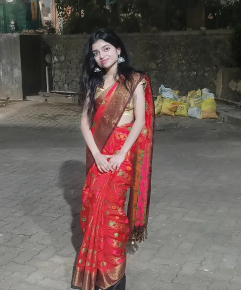
Anushka
Indian Games
9 messages↗

Cutest senior khuch bhi puch lo sab jawab hote h ☺️ most photoholic person in the group and sometimes most fasane wali also in soapbox 🙂 and ha inki left side profile jyada badhiya h inki photo ussi side se lena hamesha 😉
Strict senior who scares everyone with her words, top running skills and a player who cares for every person. Thanks for guiding me in my whole insti life. Your obsession with photos are very crazzy and keeping people to wait and saying just coming in 2 minutes was awesome 😄. You really inspired the juniors to play like you, your high enthusiasm was the reason that girls team fight till the end. Hope so, your "Novels wala Rajkumar" come soon in your life and give you endless happiness. Best of luck for the future and stay connected so, we can do professor bitching 😂 because I know there are more profs in our department which are more dangerous than Asish Pal 😁.
View attached photo ↗ (external, opens in a new tab)As you graduate, our team will miss a confident player like you. Your stamina and determination always stood out—holding your ground with ease and striking with sharp pole dives when it mattered most. Your dedication and hunger to win inspired everyone around you, making you a strong presence on and off the field. Wishing you success ahead—keep playing with the same confidence and spirit!
Anushka dii , meeting you during 1st year Aavhan became one of the really good memories for me. From the very beginning, your fun nature and positive vibe made every moment enjoyable. Whether it was during practice, events, or random conversations, you always made the atmosphere better. I’m really happy that Aavhan gave me a friend and senior like you.
Anushka didi, we never played a kho kho match together, but I still have many memories with you. You are such a kind person. Whenever there was a kho kho match, you would always come to support us, encourage us, and cheer for us. The reel we made in front of the main building and the time we spent together are memories I will never forget.
Thank you for all the dedication, passion, and spirit you brought throughout your journey. Your hard work, achievements, and presence have truly inspired many people and left a lasting impact. Wishing you endless success, happiness, and victories in whatever comes next. You’ll always be remembered for the energy and legacy you leave behind. All the best for your future! 💙
Many thanks for the dedication, passion, and enthusiasm you have exhibited throughout your journey. All the best for the future!
Har photo m inki neck teedhi hi milti h 🧐. Mene suna h ig council k real gws inhi se miltee h . Khush hi rhte h humesha. Humesha genuine advice dete chahe aapko bura hi kyuu n lage uss time. Lots of good wishes from our side 🫶❤️
You are a really kind and sweet person. You come to motivate us during our matches. It means a lot to us that you take the time to cheer and support us.Your presence really boosts our confidence and keeps us going. Thank you for encouraging us. Wishing you all the happiness and success in the future.
A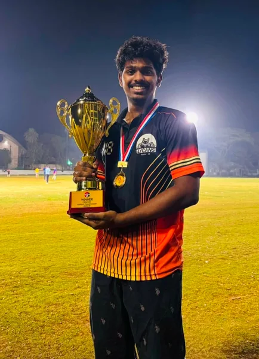
Anvesh
Cricket
9 messages↗

A perfect all-rounder who always gives his best in every situation. His bowling with the new ball is truly impressive, and the way he stays calm and keeps smiling all the time makes him even more admirable. A very positive and composed person both on and off the field.
Always a helpful and responsible player in the team. His swing in powerplay helped the team to maintain the req run rate and keep pushing for wickets. He is a versatile player who also contributed with his batting to the team.
Anvesh bhaiya calm,composed and the most friendly senior I ever met. I remember many time we need umpiries for the matches in quick time, Anvesh bhaiya was my last resort and most of the times he never disappoints. It is his passion for cricket which has always stood up. He was not the part of this years inter iit camp but still the closest to the team. I wish him all the best in his life.
Anvesh bhaiya ki swing 👌
Anvesh, my dear friend doesn't matter if you were the part of inter IIT team ir not you will always be an integral part of IITB CRICKET. Your passion as well as dedication for the game is an inspiration for me. Above everything its your attitude that seperates you from others. Keep it up. Wishing you all the best for your future
CSK fan , great bowler and batting bhi achi krte hai
Very fun person to be with. Always enjoyed playing with you. Great bowler and dangerous batsman. Best wishes!
He is a genuinely kind and humble person who always treats everyone with respect. His passion for cricket, dedication towards the team, and positive mindset were truly admirable. The way he carried himself both on and off the field made him someone everyone looked up to.
Every team you join next will underestimate you first. Let them. You've always done your best work as the underdog.
AG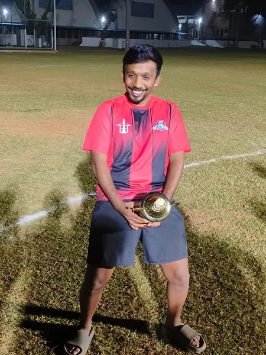
Arhat Gedam
Football
9 messages↗

Amazing senior on and off the pitch The best Asst. Coach in Inter IIT history Will truly be missed Thank you for everything!
Legend of the game ❤️
It’s hard to believe you're leaving. Playing football with you has been one of the best parts of college life. Beyond being a great player, you were the one who brought people together, organized tournaments, and created memories that we'll all carry with us for a long time. Thank you for your leadership, dedication, and the countless matches we played together. The football community here won't be the same without you. Wishing you success, happiness, and many more victories wherever life takes you next. You'll always have a place on our team. All the best, senior. We'll miss you.
Kya cartoon item hai re tu... matlab.. ekdum hi cartoon. Football was certainly a lot more fun with you, first yr saath mei kaam krna se turf league mei teri bakchodi sunna- good time all n all- milte rehna meko bhul mat jaana aru ____!
View attached photo ↗ (external, opens in a new tab)Best coach I’ve ever had personally. Some great jokes, some horrible jokes but all in all a lot of fun so really glad to have experienced this football journey with you as a senior.
Papa G 🙏 it was more fun sharing the bench with you than on the pitch, ultra bakchod senior ,jimbeam lover and choti missile on the pitch. Inter IIT would not have been the same without you as assistant coach.
Dear Arhat, It was a pleasure playing alongside you. Your ability to contribute both in defense and attack made you a complete wing-back and a vital part of the team. Your communication, work rate, and support on the field always helped the team perform better. As a goalkeeper, I appreciated the confidence and balance you brought to our side. Thank you for all the memories and teamwork. Wishing you success and happiness in the journey ahead. You'll be missed on the pitch.
I was always inspired by your ability to lead the team forward. Whenever I played with you, I was always guided by your voice, it was like an omnipresent force there to support me and help me improve my game. It is an honour to have shared the field with you.
Arhat Gedam my goat, will miss your side at the backline as well as on the bar table 🍻. Been there by my side since my first yr. will always remember the gc clutch for H5 💪. Btw ye likhte likhte aapka rona yaad aa gaya spree waala 🤣🤣. Keep coming, we shall miss you 🍻🫶
AA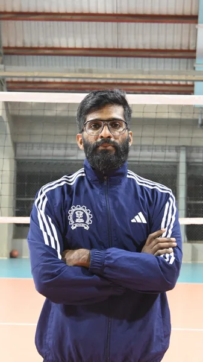
Arun Anna
Volleyball
9 messages↗

Exceptional setter
Oldest player in the team but his physical strength makes every junior in shock. His single word comments makes everyone to laugh and first priority is basketball
Anna, I was always amazed by your setting skills. You are an incredible setter, and I learned a lot just by watching you play. Your presence on the court brought confidence and energy to the team. I’ll truly miss watching you play and having you on the court. Thank you for everything, and wishing you all the best for the future!
He's not just a senior; he's like an elder brother who is always teaching and guiding his younger brothers. A genuinely kind and wonderful person, and always ready for a game of volleyball.
Looks like an old monk but has the most stamina with zero ego. plays every kind of sport. Eventhough When everyone gets exhausted but arun anna always has stamina left, truly great. His sets are the craziest to hit, gives me confidence.
He is my fav setter. Whenever I hit wrong he always say I will set good ball next time.
Arun Anna is an amazing setter whose smooth and precise sets make the game look effortless. Quiet and composed, he brings a cool presence both on and off the court. But when it comes to dancing, he absolutely steals the show! A wonderful teammate, dependable player, and all-around great person.
The back bone and mature support of the team.
Fantastic setter friendly anna
AT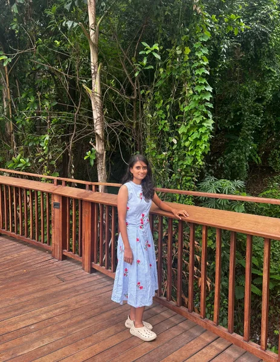
Arya Thomas
Ultimate Frisbee
9 messages↗

One of the most important pillar of our community🫡 , Felt sad that you will not be there as a handler handling us on field/ off field 😞, but we will try covering your absence on field but cant cover that off the field as you will always be truly special for our batch whether its as a teammate,leader,senior or as a person, and yes will try hard for that NCUC trophy (nothing to say about SOTG Trophy😅). Will Meet U Soon (Hopefully both in Crawler jersey Once again)
Arya Thomas brought incredible energy and positivity to the Ultimate Frisbee team this season. Whether it was during intense matches or practice sessions, She always motivated everyone to give their best. She personally helped me a lot in maintaining my spirit and confidence in the game, especially during difficult moments. Her encouragement and positive mindset taught me how important teamwork, discipline, and consistency are in sports as well as in life. One thing that made Arya truly special was the way she guided others, not just as a player but also as a person. She always reminded us to stay focused, trust the process, and keep improving every day. Her advice about balancing hard work, fitness, and mental strength inspired me to become better both on and off the field. Arya’s dedication, leadership, and supportive nature made this season unforgettable, and I’ll always be grateful for the lessons and motivation she gave me.
View attached photo ↗ (external, opens in a new tab)Arya Thomas brought incredible energy and positivity to the Ultimate Frisbee team this season. Whether it was during intense matches or practice sessions, Arya always motivated everyone to give their best. She personally helped me a lot in maintaining my spirit and confidence in the game, especially during difficult moments. Her encouragement and positive mindset taught me how important teamwork, discipline, and consistency are in sports as well as in life. One thing that made Arya truly special was the way she guided others, not just as a player but also as a person. She always reminded us to stay focused, trust the process, and keep improving every day. Her advice about balancing hard work, fitness, and mental strength inspired me to become better both on and off the field. Arya’s dedication, leadership, and supportive nature made this season unforgettable, and I’ll always be grateful for the lessons and motivation she gave me.
View attached photo ↗ (external, opens in a new tab)One of the best senior cum guide ever met. Friendly personality with the unique combo of management skills as well as the gameplay. Your jersey name is definitely the one which I find to be the coolest Will admire your efforts for the development of the club I hope that you join some other frisbee community wherever you go and keep playing:)
Arya Thomaseeeee, what a journey it’s been! Joining around the same time, I’ve loved watching you lead the Night Crawlers as a captain, player, and manager. You’ve done so much for this team. Beyond the ultimate field, from our trips and cooking sessions to being OG Manas gang members, the memories we've made are elite. Thank you for always being so wonderful to me. I’m so proud of you, Arya—we’re going to miss you immensely. Best of luck with everything next!
View attached photo ↗ (external, opens in a new tab)Arya Thomaseeeee, what a journey it’s been! Joining around the same time, I’ve loved watching you lead the Night Crawlers as a captain, player, and manager. You’ve done so much for this team. Beyond the ultimate field, from our trips and cooking sessions to being OG Manas gang members, the memories we've made are elite. Thank you for always being so wonderful to me. I’m so proud of you, Arya—we’re going to miss you immensely. Best of luck with everything next!
View attached photo ↗ (external, opens in a new tab)Di koppeee, The reason the club stayed organized, the reason everyone knew what to do, and the reason nobody could pretend they didn't hear instructions. Her voice reached places the Frisbee couldn't. Proof that a Frisbee captain doesn't need a whistle😉. The ground won't be the same without her.
View attached photo ↗ (external, opens in a new tab)I joined the frisbee beginner camp. Arya didi was a good coach according to me. Even in beginners camp got to learn a lot. Missing those memories.
Thank you for being such an amazing captain, handler, and cutter for our Ultimate Frisbee team . I remember that day when you came for NSO training and selecting players for FLAMES University matches. Playing under your captaincy has been a privilege, and one of my favorite memories will always be my first tournament at KURUKSHETRA, where we proudly secured 2nd place. Also the struggle for getting into squad, you helped me in my game, coming up for daily sessions, you showing my mistake and finnally selected for NCUC Squad was one of the best day and also got so much memories.Also playing in UFO against Harshit team was great fun.Your leadership, dedication, and passion for the sport inspired all of us to become better players and teammates. Wishing you all the success and happiness in the next chapter of your journey. I hope you will come back to play again with us... Thank you, Captain!
View attached photo ↗ (external, opens in a new tab)AK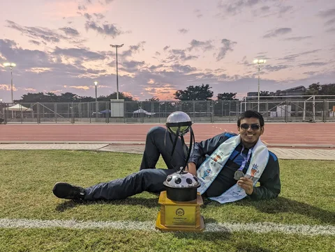
Aryan Katiyar
Football
11 messages↗

I played with him in the hostel GC. He is the most reliable cb I have ever played with it’s like we don’t need a keeper if he is playing on the team
ZERO GOALS conceded in Inter IIT whenever he was on the pitch says it all, The best defender I've ever played with. Off the pitch, this Diet Coke Consuming Unit was a role model to all of us. Always giving out as many advices as he does giving out treats to us all. Forever grateful to have met Katiyar. Thank you for everything MVP.
Legend of the game ❤️
one of the best defenders to have at your backline but more importantly a great friend, will always miss the amazing time at inter-iit. Best of luck :)
View attached photo ↗ (external, opens in a new tab)one of the best defenders to have at your backline but more importantly a great friend, will always miss the amazing time at inter-iit. Best of luck :)
View attached photo ↗ (external, opens in a new tab)It’s hard to believe you're leaving. Playing football with you has been one of the best parts of college life. Beyond being a great player, you were the one who brought people together, organized tournaments, and created memories that we'll all carry with us for a long time. Thank you for your leadership, dedication, and the countless matches we played together. The football community here won't be the same without you. Wishing you success, happiness, and many more victories wherever life takes you next. You'll always have a place on our team. All the best, senior. We'll miss you.
one of the best defenders to have at your backline but more importantly a great friend, will always miss the amazing time at inter-iit. Best of luck :)
View attached photo ↗ (external, opens in a new tab)Thank you sir for your infinite wisdom, may it forever illuminate our paths. Jokes aside, really glad to have had you as a senior and really grateful for all your help.
Aryan yar it has been incredible sharing the back line with you, you taught me things with a lot of patience and I really appreciate that. You made those training sessions fun with your banter, all those days in camp and inter IIT would not be same without your missile balls and career ending tackles.
Dear Katiyar, Playing alongside you has been a great experience. As a defender, your leadership, communication, and ability to organize the backline were exceptional. As a goalkeeper, I always felt more confident knowing you were in front of me, constantly guiding and coordinating the defense. Thank you for all the advice, support, and trust you gave me on the field. Wishing you success and happiness in everything ahead. You'll be greatly missed both on and off the pitch.
Katiyar my goat, will miss your side at the backline and your goated treats along with the 20L stake stories 🤣. Do come back soon so that we can share cheers on minti Jamun asap 🍻🍻. Cheers and all the best ahead. 🫶🫶
AK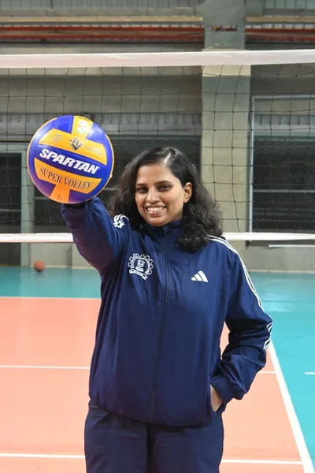
Ashritha K
Volleyball
7 messages↗

Everything I achieved on the court started with her guidance. She was the light that showed me the right path from teaching me what to play to helping me perfect it. Her leadership, support, and belief in us made our team stronger every day. I will always be thankful for everything she has done for me. I am truly going to miss her a lot. ❤️
View attached photo ↗ (external, opens in a new tab)Hii di, Will miss your presence on court, Thanks for always supporting me. Aapke sath icecream and movie dekhne jana me miss karungi. Will miss youu diii......
Carried the girls team single handedly for many years. Truly a devotee of volleyball. Acts matured in court and playfull off court... She was the one who boosted my confidence in spiking and blocking, giving me tips and always supporting.
She always motivates everyone to improve there game skill. She also led the girls team. When I entered in volleyball court first time I saw her playing with boys of phd.
Ashritha Di has been the backbone of the IIT Bombay volleyball community throughout her five years as a PhD student. The impact she has had on the community is truly remarkable ,she has helped take IITB volleyball to the next level through her dedication, leadership, and unwavering commitment to the sport. One of the qualities I admire most about Ashritha Di is her fairness. Whether an opinion comes from a senior or a junior, she listens with an open mind and treats everyone with equal respect. She is always ready to give her all for the game and for the people around her. As a player, she is undoubtedly one of the finest members of the girls' volleyball team. As a captain, she leads by example. As a contingent leader, she is responsible, composed, and someone everyone can rely on. Most importantly, she always stands up for her teammates and ensures that every player feels supported and valued. To juniors, Ashritha Di is much more than a senior, she is like an elder sister, approachable, friendly, and always willing to help. From being an exceptional teammate and leader to earning the unofficial “Best Roommate Award,” she excels in every role she takes on. Honestly, words fall short when describing her contributions to the volleyball community. Ashritha Di is the kind of person whose legacy will continue to inspire players for years to come.
View attached photo ↗ (external, opens in a new tab)Played a major role in bringing new people and growing the girls VB community
Captain! I've had a truly wonderful journey with you over these past four years. Starting from PG GC for Civil in 2023 to Aavhan 2023, multiple Inter IITs, especially the 2025 inter IIT, hostel GCs, and a few other events, it has been an amazing experience both playing alongside you and spending time with you off the court. You were someone I could always rely on within the team, no matter the situation. The level of commitment you've shown to the community and the sport is genuinely remarkable. I've been watching your game since 2022, and the growth has been unbelievable. Wow defence, wow attacks, wow serves, and now, wow sets too. The effort you've put into improving every aspect of your game is truly inspiring. The community has been incredibly lucky to have you as its captain and leader. Your absence will definitely leave a void that won't be easy to fill. More than the player, it's your presence, care, and dedication that we will miss the most . The way you connected with everyone and made them feel comfortable And if I have ever hurt you in any way along the journey, though it would have been completely unintentional, I'm sorry for it. I've always given my best to support you in all ways possible. Thank you for everything, Captain. Wishing you happiness, success, and many more victories wherever life takes you next.
View attached photo ↗ (external, opens in a new tab)AAshutosh
Aquatics
6 messages↗
Thank you for making everyone feel welcome and included. Your support was everything to the team. Thank you for being a valued part of the IIT Bombay swim team and for all the effort you put in during your time here.
You’ve always been the heart of this team so kind, so warm, and always making sure no one ever feels left out. And the PizzaExpress treat honestly one of the sweetest gestures ever. From the food to the whole time spent there, Awesome core memory.
Gonna miss you bhaiya
Team ke ISMP mentor aur brain .. will be difficult to find other person for the team.
Ashu bhaiya - great at the sport and gives a practical advice to juniors. He motivates the juniors to come to the pool and even trains with them to improve their game. Wishing you all the best for your future Ashu bhaiya !
View attached photo ↗ (external, opens in a new tab)Sweet, team-first, and always looking out for everyone. A tactical player who uses the first quarter to read the game from outside the pool and then takes charge for the remaining quarters.
View attached photo ↗ (external, opens in a new tab)ATAshutosh Tiwari
Hockey
6 messages↗
Aur Kaptaan Sahab, wishing you the best. One man army, you inspire me a lot. Institute mein aa kar hockey shuru kiya h and litterly killed it. Seriously yaar aap hockey mein to guru ho mere. The determination, I look upto you. Aur off ground personality is insane man. I'll always remember the golden time, we shared on field. Thanks for making my life more beautiful. And last, I only pray aapko bhi zindagi mein sabkuch mile jo aap chahte ho. ☺️
View attached photo ↗ (external, opens in a new tab)First Captain. always inspired to move forward. kept motivating juniors. always will be in my iitb memories
View attached photo ↗ (external, opens in a new tab)Op player 😁🫡🫡
Our captain for the tournament..Motivated everytime to stay confident
Hi Ashu The very 1st memory of you is ... I think we arguing over some rules in 2025-Boys GC.. I kinda remember UC proudly introducing me to you after the argument "Ye humara H5 ka Kaptan hai !!" Bhai Kaptan ji ...aap inter-iit Kaptan bhi bann gaye ! When the two of you are together its just funny how you behave poking and roasting ... and complaining about each other to each other... Weirdos !!! The red faced upset Ashu soon over time ended up being a sweet-cute friend :D Really IHL-2025 was really amazing!! UPRudras!!! And UPRudras ke bhi Kaptan :D Like seriously I felt like how I used to play in school .. where I didnt have to think before passing.. never had to think if my pass is going to be enough ... Never had to think if I'd be included in game .. The dynamics like you, Ayush ( with me included ofcourse) played during the IHL from mid to forward and then the goals .. really amazing time... I always look forward to playing in your team! All the best !! See you around!
A fantastic captain and a player as well. Har match mein aapne apna 100% dia , really motivates other players also. Kuch jagah luck didn't favour us, but that's what sport is, this time we remaining will try our best. I was delighted to play in same team in gc as well, was an honour for me to be appointed as a captain in gc🙂, all the best for your future
A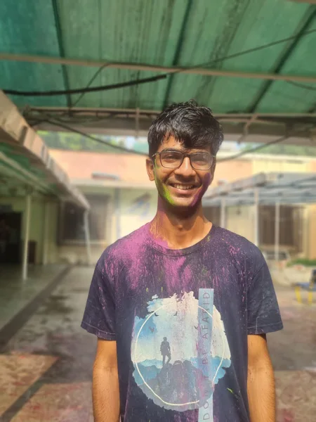
Ashwajit
Lawn Tennis
2 messages↗

A fierce competitor , and a wonderful debater he brought a different kind of passion and intensity to the tennis courts
The silent guyy 💪
View attached photo ↗ (external, opens in a new tab)A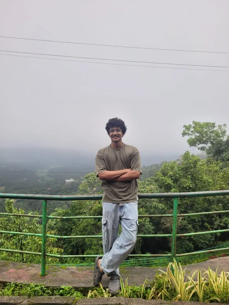
Atharva
Table Tennis
9 messages↗

I hope you recall how you groped and molested me in front of my friends at IIT Delhi in 2022, as a part of a dare from your teammates. You should feel proud to note that it took me 2 years of mind numbing anguish and hundreds of sessions of therapy to put that episode behind me. Kudos to you! Your parents must be really proud of the gentleman they raised. Apparently you have earned quite a reputation in that department as I have come to realise I am not the lone victim. I only pray earnestly that someday you get to realise the pain and suffering you inflicted on me and all of your other victims, when someone performs the same on you or your loved ones. I wish farewell to thee, Atharva.
Tharki boy of the tt team. Now that he has a steady relationship with Stuti, he can finally get his mind away from lust and achieve better things ahead. best wishes
ITTO with you was machaxxx! (trophy kab milegi xD )
What made Atharva Bhaiya special is the fact that he is a great player on the court and also has a very calm personality off the court. My memories with him are both on the court when we played together and also off the court when we just had fun talking about different things. At last, I wish him all the best for the future and also hope to see him in the TT court here soon
Enjoyed being in your team in league, you're super encouraging and chill and approachable. All the best ahead!
Atharva was always very cheerful and always uplifted the mood both on the court and off the court. Always had fun with him around and had great fun interacting with him. I've seen him play and it was really impressive but I never got the chance to play with him, maybe in the future ! Looking forward to meeting him as alum in the coming years !
First of all, kya hi game hai aapka🔥. First year ke baad kaafi kam dekha tha khelte hue aapko mene, par iss saal jab wapis aaye aap, ITTL me kya hi khele ho aap. maza hi aa gaya. kaafi accha experience tha mere liye iss saal ka ITTL. Other than that, we were always comfortable approaching you regarding any problem that we were facing. All the best bhaiya.
Our star Inter-IIT player, Atharva has been a force to reckon with on the table tennis court. Known for his aggressive playing style, relentless determination, and competitive spirit, he always kept opponents on their toes. And, of course, no one can forget his iconic no-look shot, a move that became legendary and left both teammates and rivals in awe. His talent, confidence, and passion for the game have made him a true standout and a source of pride for us all.
View attached photo ↗ (external, opens in a new tab)Atharva ke saath mein maybe 1 ya 1½ sem hi TT khela hu. But even so he is one of the biggest (and best) parts of my TT experience in insti. Even when the atmosphere around the team or community wasn't the best just him being there made it worth being part of the team and the community. Very grateful for all the help and advice over the years. Tuzya sobat khelayla phaar majja aali ani thanks a lot, tu hotas mhanun mi campus madhe khelna continue kela (and am all the better for it). And ofc, Atharva ko flow mein BH winner maarte hue dekhke opponent ke chehre pe jo disbelief aur despair aati hai wo dekhke kya hi satisfaction mila hai 😌
View attached photo ↗ (external, opens in a new tab)AN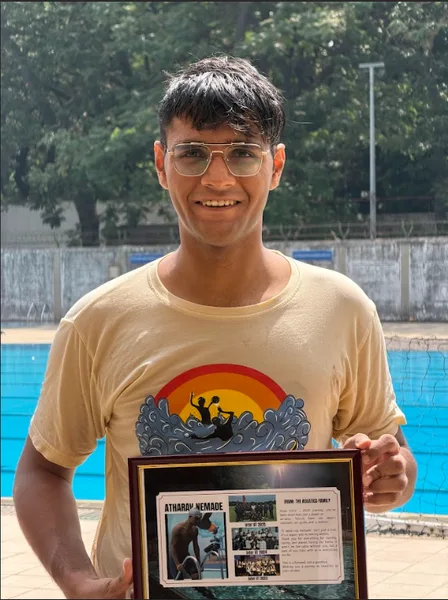
Athrav Nemade
Aquatics
8 messages↗

Thank you for being such a good water polo mentor to us . We learnt a lot and had even more fun
As you move on from IIT Bombay, thank you for everything you have brought to the swim team. Your leading spirit is very inspiring! You have been more than just a player or an ex-secy. Hope the next chapter brings you success, happiness, and new adventures.
E saala cup Nemade” isn’t just a line, it’s a legacy you’re leaving behind. Thank you for everything for leading, caring, and always having our backs.
The sweetest senior ever. Gonna miss you bhaiya
The drink maker of the group .. ek din toh empty water cooler se pani bhr rhe the 😂..door matt ke liye sorry
Ee sala cup Nemadeee
View attached photo ↗ (external, opens in a new tab)Nemade bhaiya takes responsibility and guides the juniors and teaches them. He led my team in the waterpolo league and even when we had -2 points in the start he held his chin up and motivated the team. Hope you have a great journey forward !
View attached photo ↗ (external, opens in a new tab)Nemade is not just a name; it's a post at Aquatics, an ideology that's never gonna die and will live on forever. Not this time, though, but it has sparked the fire of "Ee Sala Cup Nemade" that will live on forever.
View attached photo ↗ (external, opens in a new tab)AS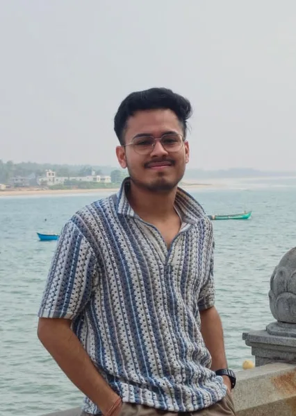
Ayush Sharma
Cricket
8 messages↗

Ayush bhaiya, the most humble, easy going, friendly and supportive guy I ever met. My connection with him was with cricket as well as being our Hostel GSec also. He has always been supportive to me whether it is election or my game in cricket. It was always the best use if time to seek advice from him from the cricket ground to 4 am nagori tea stall ❤️. And somewhere in between these places, I think college time is over. I wish ayush bhaiya success in all his future endeavours.
View attached photo ↗ (external, opens in a new tab)Ayush bhaiya is a really good batsman whose contribution to the team was truly inspirational. His friendly nature and passion for the game always stood out and motivated everyone around him. A very genuine and dedicated person both on and off the field.
He was always friendly, approachable, and easy to talk to. Always supported with his guidance and brought good vibes in the team with his presence.
Very passionate about cricket, the most elegant player I have seen in nets, his pull shot 🤌🤌, also very good with the hands behind the wicket. The most memorable part are the ducks that ayush bhaiya scored so consistently on the pitch
View attached photo ↗ (external, opens in a new tab)Better player in squad
You were very chill and kind. Best wishes!
He is a genuinely kind and humble person who always treats everyone with respect. His passion for cricket, dedication towards the team, and positive mindset were truly admirable. The way he carried himself both on and off the field made him someone everyone looked up to.
There were seasons where the game didn't go your way, and you stayed anyway. Not everyone does. That stubbornness call it loyalty, call it grit is going to be your biggest edge outside this club.
B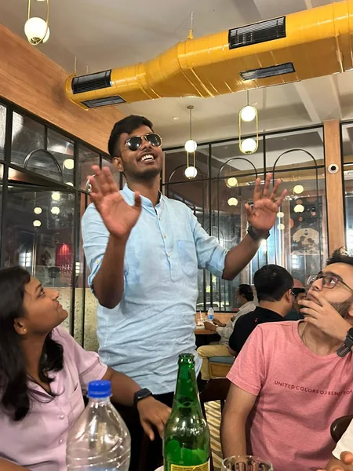
Bhavin
Table Tennis
6 messages↗

Bhavin's energy is what brings life - both on the court and especially on fun outings and team dinners ! With him I can easily make out how much fun other seniors have and its always been good to have him anywhere around. I have always looked up to him as a senior and have also constantly heard examples of how good his seccy tenure was, and how much fun the tt council had at that point of time with Bhavin looking over it. I am grateful to have him as a fellow senior, and as an example to look up to. Hoping to meet him again as alum whenever he comes to visit !
For the first time I had met you at the polt room. Since then, I was truly amazed by your confidence and the aura you have. You have always acted like a great mentor to me. And incase of any problems I bring it to you, "hojayega, chill maar re" and you had solutions to everything.
View attached photo ↗ (external, opens in a new tab)Thanks for being an approachable secy always!
Our incredibly cool Secretary, whose dedication, commitment, and positive energy have been truly inspiring. Always dependable and ready to step up, Bhavin's hard work and enthusiasm have made a lasting impact on the team. His calm demeanour, leadership, and unwavering dedication have contributed greatly to our team.
View attached photo ↗ (external, opens in a new tab)About Bhavin, I think while I was not here during your tenure as Secretary, your impact on IITB Table Tennis is still visible even today. The culture of the hall, the high standards of practice, and specially the welcoming environment that I got when I entered the team was a direct result of the groundwork laid by secy's like you. Also, I felt that you are incredibly welcoming to all the juniors and give them good advice whenever necessary. At last, I hope to see you again here very soon.
Ayush Dhole” of the PLOT season 😭 Aapke under convenor bana aur eventually ISC mein kya crazy journey ho gayi yaar. Sabse pehle thank you for being such a great TT Secy — genuinely crazy legacy thi aapki. Bohot cheezein sort kardi aapne tenure mein, mujhe aur Sameer ko kaafi easy ho gaya tha kaam karna, and convenor phase mein aapke saath bohot maza aaya tha.Aur thanks for the endless treats 😂 Kaafi crazy time tha woh honestly. Uske baad main head ban gaya aur beech mein Inter IIT aa gaya — damn 😭 Woh phase mere liye thoda mixed roller coaster tha, but maza bhi utna hi zyada aaya aapke saath. BGMI sessions toh main kabhi nahi bhool sakta 😂😂Me and ** vs aap aur Sameer was always a crazy experience. Phir election time toh best hi tha I guess — usmein toh apni bonding exponentially grow ho gayi 😭 Us time bhi sab cheezein aapki side se bohot sorted thi, aur andhi baar Rainbow jaana together was elite 😂 Aur aapki crush/rel wali kahani waise kabhi properly bahar hi nahi aayi 😭 woh kabhi detail mein batana. Aapke saath 2-3 baar pee bhi liya ab toh 😭 can’t expect much better honestly, but streak continue karte hain apan Bangalore mein 🍻 Thank you for everything bhai, and congratulations on Meesho — you genuinely deserved it 💖 Baaki bakchodi toh Bangalore mein continue rahegi 😤
BJ
Bhavin Jain
Institute Sports Council
2 messages↗
“Ayush Dhole” of the PLOT season 😭 Aapke under convenor bana tha aur eventually ISC mein kya crazy journey ho gayi yaar. Sabse pehle thank you for being such an amazing TT Secy — genuinely next level legacy thi aapki. Bohot saari cheezein aapne itni sorted kar di thi ki mujhe aur Sameer ko kaafi easy ho gaya tha kaam karna, aur convenor phase mein aapke saath bohot maza aaya honestly. Aur endless treats ke liye bhi thanks 😂 Woh pura phase kaafi memorable tha. Uske baad main head ban gaya aur beech mein Inter IIT aa gaya — damn 😭 Mere liye woh phase proper roller coaster tha, but aapke saath utna hi zyada fun bhi tha. BGMI sessions toh iconic rahenge 😂 Me and ** vs aap aur Sameer was always absolute chaos. Phir election time toh probably peak tha 😭 Us phase mein apni bonding aur bhi zyada strong ho gayi. Har cheez aapki side se itni sorted thi, aur random Rainbow runs together were honestly elite 😂 Aur waise aapki crush/relationship wali story aaj tak properly reveal nahi hui 😭 Kabhi Bangalore mein full detail mein sunni hai woh. Aapke saath 2-3 baar pee bhi liya ab toh 😭 Can’t ask for much better honestly, but ab yeh streak Bangalore mein continue karenge 🍻 Thank you for everything bhai, and huge congratulations on Meesho — genuinely well deserved 💖 Baaki bakchodi toh Bangalore mein continue rahegi hi 😤
Council mein convener tenure ke time, aapke saath kaafi maze aaye yaar. Saath hi, jab bhi guidance ya help ki zaroorat padi, aap hamesha support ke liye the. Uske liye dil se thank you! All the best for everything ahead. Kaafi miss karenge! ❤️
BK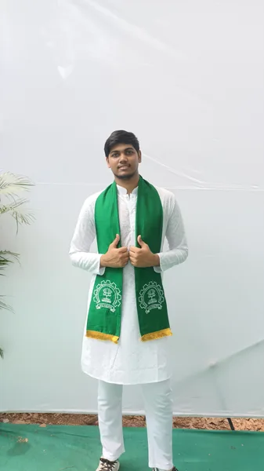
Binay Kr
Volleyball
5 messages↗

Your blocks to attackers is at another level but jump is always at ground level. Tips and acting at another level
Shayrr🔥
a person with always a smiling face . and aapki shayari toh always goated hi hoti thi bhaiya
I don't know a lot about him. In sophie treat I liked his sayaris.
Binay bhaiya is a powerhouse in the middle, known for his explosive spikes and ability to score crucial points when the team needs them most. A proud Bihari at heart, he combines strength, determination, and fighting spirit on the court. Reliable, hardworking, and impactful, Binay always finds a way to make his presence felt.
DS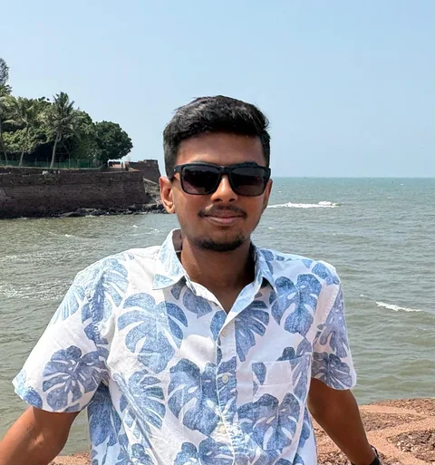
Dattaraj Salunkhe
Squash
6 messages↗

Although I haven't known you for very long, I can still say that you are a humble, hard-working and responsible person. One unforgettable memory with you is when we mistakenly roamed around the airport while looking for a restaurant which had the same name as the one we wanted to go to, even though it could have been a frustrating thing, you, Pratyush bhaiya, Tejas bhaiya and Romil bhaiya made it a fun memory. All the best for your future endeavours bhaiya, let's meet again next time!
What a guy single handedly got us the Spardha win. This guy lost to a guy from IITBHU in semis and then defeated the same guy in the finals. Absolute GOAT
Passionate about sports. He made good improvement in his game and is a dedicated and humble person. All the best.
very responsible and kind player
Had an awesome time with him at IIT BHU for Spardha'25, including roaming through those sketchy alleys and playing Photo Roulette in the night :) Will never forget that crazy final clutch either. Overall thank you for showing me the ropes of IITB squash!
It was truly a great experience playing alongside you. Every match and practice session with you was filled with learning, fun, and healthy competition.
DD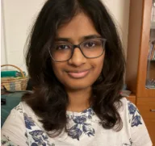
Deeksha Diwakar
Volleyball
7 messages↗

The tallest wall of our team and that powerful hitting hand, honestly, a deadly combination. You've always been so straightforward and practical, no overthinking, no drama, just clear and focused. And one thing about you, if you commit, you show up. No excuses, no delays. Never late to the court, always ready. Even though you spent comparatively less time with the team, your impact was Huge. The kind that people notice immediately. When you're standing there at the nets, opponents don't really have a chance to get the ball past you. I really admire how you stay calm, composed, and focused. No unnecessary noise, just solid performance. Your IVL 2026 and Aavhan 2026 were truly impressive, and not just your game, but the way you bonded with the team so effortlessly during that time, it didn't feel like you were new or distant at all
very sweet and humble person. always ready to help juniors . very grounded and sweet all the time .
Playing IVL with you was one of the best experiences. Your attacks were absolutely incredible, and I'll never forget them wow! 🤩 You always inspired me on the court. I'll miss playing with you and will miss you a lot, Di. ❤️🏐
View attached photo ↗ (external, opens in a new tab)I guess she is the tallest girl in our volleyball community.
The interaction we had during the Sophie treat was really memorable. You were always supportive and encouraging to everyone.
The tallest wall of our team and that powerful hitting hand, honestly, a deadly combination. You've always been so straightforward and practical, no overthinking, no drama, just clear and focused. And one thing about you, if you commit, you show up. No excuses, no delays. Never late to the court, always ready. Even though you spent comparatively less time with the team, your impact was Huge. The kind that people notice immediately. When you're standing there at the nets, opponents don't really have a chance to get the ball past you. I really admire how you stay calm, composed, and focused. No unnecessary noise, just solid performance. Your IVL 2026 and Aavhan 2026 were truly impressive, and not just your game, but the way you bonded with the team so effortlessly during that time, it didn't feel like you were new or distant at all.
Hey Deeksha! The tallest one in the team! 😄 I've been playing with you since our first year, i remember some days it was just a few of us on the court. It was always nice to see how naturally skilled you were. I'm glad I got the chance to play with you over these last few months. You're talented both on and off the court, and one thing I've always appreciated is how straightforward and dependable you are, whether it was about playing or not, you always said things clearly and stood by your word Keep playing, keep growing, and wishing you all the best ahead!
View attached photo ↗ (external, opens in a new tab)DA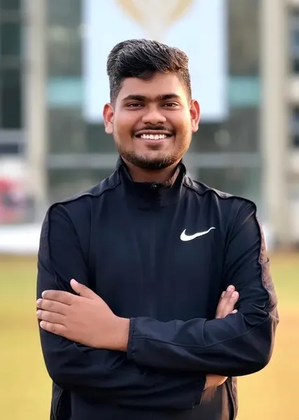
Deep Agrawal
Cricket · Institute Sports Council
12 messages↗

Thank you for being you . Initially I took your anger outbursts to heart 😂 but eventually learnt how to deal with them and that in a sums up our journey together in the Institute. I remember when we kicked off at udghosh playing together (poker ofc coz who played cricket there ). Since then we’ve just grown closer . 25-26 is the most memorable year with you , the interIIT practice, camp the tour itself , and finally Cricmania, all have given me unique memories with you that I’ll cherish forever. I’ll miss you. Keep in touch
View attached photo ↗ (external, opens in a new tab)Deep bhaiya has been an unshakable pillar of IITB cricket, his dedication for the sport is unmatchable. If anyone wants to know the actual defination of passion then deep bhaiya is a perfect case study for it. Deep bhaiya has always kept me grounded with his invaluable advice. His tenure as Institute Cricket Secretary is still admired by many as one of the best tenures till now. It is my sincere effort to render that kind of service to IITB sports just like him.I hope he gets the success and position he truly deserves.
Deep Aggarwal bhaiya was one of the most competitive and experienced seniors among all, but what truly made him special was his kind heart and humble nature. He always inspired others with his dedication, mindset, and experience while staying supportive and genuine with everyone. Wishing him great success and happiness for the future.
One of the most disciplined senior in the team. Always helped me as a junior and as a teammate. He is very responsible and for me the go to person in need of any help.
Poker star
Deep my dear friend, I will be forever grateful for a friend and a teammate like you. Right from the Inter IIT prep to cricmania you have constantly given your service to IITBSPORTS. Even before I came you have served as Cricket Secretary and that is a brilliant feat. IITB Cricket will not forget your contributions. Thanks for making my First year at IITB more enjoyable. Wishing you all the best for your future.
Hii you’ve always guided me like a true senior in every aspect not only cricket Thank you so much!!
Best wishes! All the best!
deeeep bhaiyaaa , thanks alot for everythingn . You have helped me alot in many things which i cant even list out here . Just wanna say my tenure and everythign became easier whenever i came up to you . Kuch bhi dikkat ho deep bhaiya hai na , batadega . loved your guidance and support . you have great knowledge when it comes to cricket and hope you never loose that competitive and sportmanship spirit in you . thankyou bhaiya . great to be a part of the legacy which you have headed .
View attached photo ↗ (external, opens in a new tab)He is a genuinely kind and humble person who always treats everyone with respect. His passion for cricket, dedication towards the team, and positive mindset were truly admirable. The way he carried himself both on and off the field made him someone everyone looked up to.
Some players make the team better with runs. You made it better with how you showed up calm on bad days, generous on good ones. That's a rarer skill than a cover drive.
He was the cricket secretary, when I had first joined the iitb cricket team. Immensely supported my growth as player a in the team. His passion and drive towards cricket is truly remarkable. His teamwork, ability to keep the team together and put the body on the line fielding always kept the team enthu high.
DVDevendra Verma
Hockey
6 messages↗
Hamaare pyaare Deven bhai, yaar aap to sabse pyaare insaan ho hockey mein. Ek calm sa insaan and kabhi gussa nahi kiya meri bakwaas ka😊 and also mujhe hamesha sahi kiya meri galati par. Bhai sachme love you 😘. Bhai maa kasam casual look mein kya lagte ho, mashallah. I pray ki aapko aapke pasand ki acchi si ladki mile aur woh IAS ho maza aajayega. Aur bhai shaadi mein bula lena nahi to gussa maan jaunga 😄, mazak tha agar nahi bulaya to bhi aa hi jaunga.
View attached photo ↗ (external, opens in a new tab)Iss bhaiya ne dikha diya ki height kam hone se sport mein farak nhi parta
Chota don ..fast runner and complete pocket dynamo..
Hi Deven It was nice getting to know you on the ground... you always with that bright smile. I was really very happy to see you come to support for every Avahan girls matches :D Also I really appreciate the efforts you put for H3 while forming, training the team for GC-2025. (This year you had help Chirag) One of the funniest things that you have said is "Bore ho raha tha" to when you were asked " Kya be Q nai khel raha hai".. Please while you prepare for civil services I hope you dont get bored !!! All the best! See you around!
An underrated and fantastic forward player, you were a valuable part of our team. You have a really sweet nature. Do baar lagatar gc sf mein aapko bahar krne mein bahut maza aaya🙃.Really appreciate your tennis skills developed in just a month. Baaki agli baar mile toh ias se milu ek , atb🙂
Through every drill, setback, and victory this year, Devendra was a constant source of encouragement for the team. It's rare to find a senior who goes out of their way to support the junior players so consistently. It was an absolute privilege sharing the pitch with you. Good luck in your next chapter!
D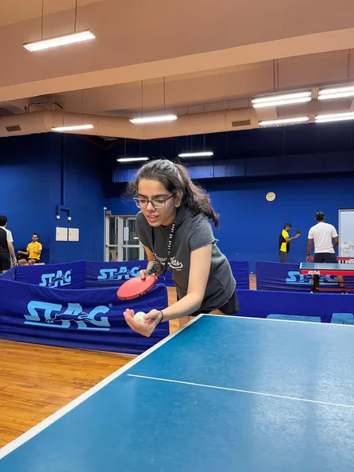
Dhriti
Table Tennis
13 messages↗

Dhriti has always been frequent at the court. Her enthusiasm and the energy she brings with her is unmatched, and when seniors show up at the court it not only just shows the interest it also deeply motivating for juniors to show up on the court too. It just showed how well bonded the table tennis community was throughout all the years, and she played an integral part in it. Had a lot of great memories and fun outings with her and the team, and I'll always be looking forward to meeting her as an alum when she comes to visit !
Dhriti di, Will miss you sooo muchhh.... You made the TT community so much more lively and fun, and gave us so many memories to cherish. We’re really going to miss you a lottt. Your energy made every event even more enjoyable and fun. Spree was masttt with you and Shubhi di, and I’ll always cherish those memories. The last few days in insti were the bestt. Thank youu for always guiding and supporting us, and for being the big sis I found in insti. Wishing you all the veryyy best for your futuree ✨ And btw… you look veryyy cute when you’re drunk 😭💖
View attached photo ↗ (external, opens in a new tab)Lack of fitness and discipline. Has decent game sense but poor under pressure. Need to work on ledership. Sweet girl.
Lovely senior. Thanks for being so approachable always.
Dhriti Didi was very active in her 4th year; she is very friendly and also, she likes table tennis very much. What made her special was how effortlessly she strikes new conversations with anyone and also how she is very chill with the juniors. There are many good experiences with her like when we are playing also in general when we talk, she is just a very fun person to be around. At last, I hope to see her at the TT court here sometime soon also I wish her all the best for the future.
Best inter iit room-mate for sure (not sure if we had any option though😅). OG keeping in Skream and first year mei 6 hours of election jail with you was crazy exciting all thanks to you🙂will miss all bakchodi and useless mocking- baaki toh Teslaa machanaaa!!
View attached photo ↗ (external, opens in a new tab)Heyyyyy Dhriti Di!!! I dont know how to thank you more may it be that freshie year convener gws XDDD, my random ahh questions, on court bakchodi, Garba party at your place and ofcourseee the GOA trip. Thanks for adding so much to my insti memories 🥲🥹. Aap jab bhi insti ao bas ek message daal do ham sab juniors aa jaenge 🙇.
View attached photo ↗ (external, opens in a new tab)One of the best people to interact with, great senior, kaafi help ki thi aapne saare core courses me and ME701 (especially). baki to mech core ke liye to idol hai aap mere, and best of luck aapko. ekdum maja karjo Tesla ma 😊
The perfect blend of chill and fun, Dhriti brings positive vibes wherever she goes. Whether it's sharing a laugh with our or showcasing her skills on the table tennis court, she does everything with energy and style. Her friendly nature, sportsmanship, and vibrant personality have made her a joy to be around and a memorable part of our journey.
View attached photo ↗ (external, opens in a new tab)Hello didi, Amaan this side, do you remember i was in your team in ITTL, Andro Avengers ! I also took convener groundworks from you and im here being a convener not in table tennis but yeah unfortunately board games secy. Hope to see you soon.
Frankly, next sem Sameer Aryansh ko couple chidhane mei apke bina bilkul maza nahi ayega, :(( Your graduation is hitting kinda hard, itne jaldi kaise? Goa caught me believing things would be just the same but now the court, the gc, ITTL, the pre camp, the dinners, (the gossip) everything are all gonna be verry incomplete without you di. Itne fodu nahi hote to ek sem back lagake we would play one more fun tournament.....The memories with you are just too peak...And yes humne last day doubles sabko pela tha, dont forget :)) (photo mei mei kuch jyada hi chhoti lag rhi hu but it is my fav one with you !). Words just cant express how much empty the court is gonna feel without you.
View attached photo ↗ (external, opens in a new tab)I don't think I can put in words how thankful I am that Dhriti was such a big part of the TT community. Somehow she was always present for us (even tho wo kabhi khelne nahi aati thi). Aaj TT community jitti achhi hai usme bohot bada haath Dhriti ka hai and I'm genuinely thankful that I got to know such a cool person ✨
View attached photo ↗ (external, opens in a new tab)Dhriti di thanks for all the contributions for the table tennis community first of all, I dont think aapke bina, tt community itna ache se bond kar paati, thanks really for making it such a great family, baaki aap to truly like an elder sister yr, Spree was a fab by the way aapke aur shubhi di ke saath bohot hi zada mazza aaya tha , aapka placement day bhi very memorable, aap bohot stressed lag rahe the but finally Tesla machaxx, bs drinking culture khatam ho raha team ka uska regret h and ab aap bhi jaa rahe to pata nhi kya hi hoga, ITTL last year kaafi sahi tha , is year better kar sakte the but main thoda hag diya 😂, thnx for being such a big support in this journey , All the best for further life and kabhi bhi mumbai aao to batate rehna and touch mein rehna
D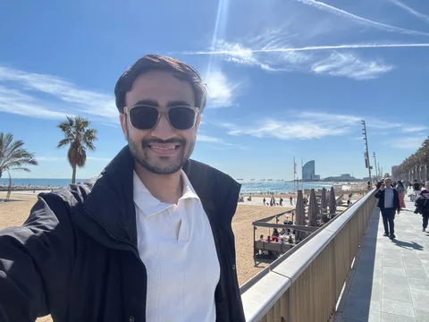
Dhruv
Table Tennis
6 messages↗

My best memory with Dhruv bhaiya is when we all went to visit temples just before endsem, also after that we all had breakfast in gulmohar where I interacted with him, and he talked about what he was doing and in all we had lots of fun. I wish him all the best for his future and hope to see you soon on the table tennis court here again
The gurudwara outing and the time during farewell was a lot of fun ! Wish we could be on more outings together. Wishing him all the very best for the future ! Looking forward to seeing him again as alumni.
Wishing you happiness and success in every step ahead. Thank you for all the wonderful memories we’ll always cherish. All the best for your new journey ,keep playing and keep shining always!
Ekdum badhiya experience rahe hai aapke saath mere. jab se ham pehli baar H6 me mile the aapne kaafi acche se hamara dhyan rakha, GC khelne me kaafi maza aaya aapke saath. Bhale hi jeet na paye ho 🫠, but the experience was one of the best. Ham jab bhi problem leke aate the, aap ne hamesha ekdum enthusiastically solve kiya hai. Baki to aapki kya hi crazy services hoti thi. Best of luck aapki journey ke liye.
A highly promising player with excellent game sense and sharp understanding of table tennis, Dhruv stands out for his ability to read situations and adapt quickly. With strong potential and a thoughtful approach to the game, he consistently shows glimpses of excellence and growth. His dedication and intelligent play make him a valuable teammate and an exciting player to watch for the future.
H6 Bond always 🫂, kitne GCs saath mein hage h hamne milke jo easily jeet sakte the, always full supportive and very mature, loved to be part of team with you as the senior, can never forgot the moments we spend on court , all the best for your future life ❤️
DS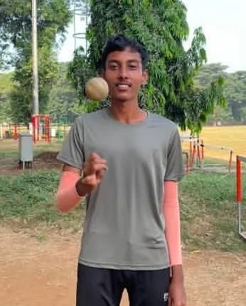
Dhruv Saraswat
Cricket
7 messages↗

Dhruv bhaiya is a very fun-loving person who is always cracking jokes and making the environment happy and lively. Along with his cheerful nature, he is also a really good leg spinner who always makes an impact on the field.
A classy leg spinner, made his bowling exciting to watch. His humour helped the team being calm and relaxed in crucial moments. Amazing senior who helped a lot whenever asked for it.
Dhruv bhaiya, the senior who you will find most of the times in nets honing his leg spinning bowling skills. His passion is unwavering and inspirational for me. In my first year when I was a fresher I used to play with him and that's how I got my headstart from IITB cricket. Forever grateful to him for this. All the best bhaiya for your bright future.
Good bowler
Yaar aapke saath to sabse purani jaan pechan hai. Best leg spinner I know. And aapse kaafi inspire hua mai and hote rhunga. Aapki work ethic cricket me hi nahi but internships and acads me bhi. Kaafi maza aata tha hamesha aapke saath. Humne to kaafi matches khele hai with and against. Aap jaante nahi aapne kitni help ki hai meri, mentally. Thanks a lot. And yeah best wishes yaar!
He is a genuinely kind and humble person who always treats everyone with respect. His passion for cricket, dedication towards the team, and positive mindset were truly admirable. The way he carried himself both on and off the field made him someone everyone looked up to.
Cricket is the only sport that teaches you how to wait properly, with patience that has teeth. You learned that here. It will outlast every score you ever posted.
D
Divakar
Aavhan
1 message↗
"hiya badmosh, survey mei pass ho gaya" yaad rahegi yeh line 😂 Also humesha apna election pe opposite side rehna, jo tu lab mei bakchodi karte rehta tha, ek dusre se khete lete rehna, and nonetheless khtm hone ke baad sab sort!!
View attached photo ↗ (external, opens in a new tab)DK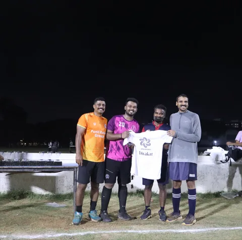
Divakar Kumar
Hockey
5 messages↗

Mr. Badmosh, always like a big brother to me. Never had a second thought before sharing any problem with you. Although no time is ever sufficient with our close ones yet you made my first year more enjoyable. Aur bhai dekho shaadi mein zaroor bula lena😉. And wishing the brightest for your future☺️.
View attached photo ↗ (external, opens in a new tab)Choudhary saab ki jai ho 🔥🙌
Hi Divakar It's actually a bit see thinking not having you around on the ground. I still remember the 1st year you coming on the ground for practice with a sweet smile and be like "Aur bhai kya hal hai?" to you peers. Time really flies when I look back seeing how much you have changed but your warm sweet smile and greeting on the ground have never changed since Day1. I will miss the welcoming Divakar on the ground, the confident one while dribbling and the kind of control you have over the ball while playing. Take care! See you around soon!
One of the most skillfull player of our team, aapke jitni push aur hit toh koi nhi kr sakta, aapko dekhkar kafi seekha hun hockey khelna , hopefully will play hockey together again in life, all the best for your future
Winning gold at the Institute Hockey League is one of my favorite memories from this year, and Divakar bhaiya was a huge reason why. He wasn't just a great teammate, he was an incredible mentor who constantly supported and guided us throughout the entire tournament. Thank you for leading the team to victory and always having our backs. Wishing you the absolute best in your next chapter!
DMDivyraj Malviya
Hockey
4 messages↗
Kaaju bhai; kya looks, kya ada, kya game skills. Bhai field pe bhi aa jate hamesha football mein hi dikhte the. Mazak ke alawa, aapse baat aur karni thi but koi na love you yaar 😘. Ache insaan ho aise mujhe lagta hai 😄. Hope the best for you.
View attached photo ↗ (external, opens in a new tab)Never seen you run outside a game yet somehow a brilliant runner in the game which will always make me want to learn the secret trick. Playing with you will always be a memory to cherish.
One of the fittest player of our team, great reflexes and great dribling. Your performance was fantastic in last gc , which got me to lose gold as a captain. We had great fun in inter IITs , were the roommates in kanpur, you had a great impact towards hockey. Just a reminder still my badminton domination continues with you!🙂
Hi Divya !! Well I have very few memories about you.. The sports trek "Andharban" I guess when spoke a bit but otherwise the quite one usually... All the best for the future!
GM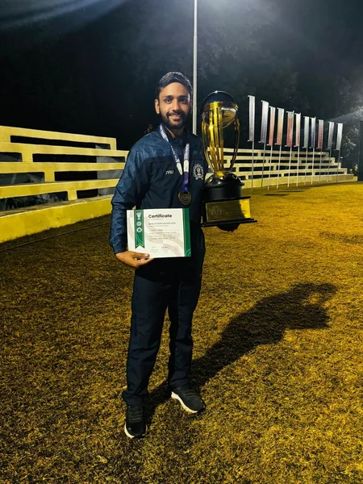
Gaurav Mahla
Cricket
12 messages↗

Introvert off the field , letting the bat do the talking on the field ( introvert hi ho 😂). At first I thought you were a boring introvert who doesn’t have any fun. But eventually as you opened up to us we saw the true you and I couldn’t be more grateful for the memories that got me . The poker together, the crazy one liners and the live life differently attitude . Thank you for all the treats 😋(ifyryr). Stay in touch .
View attached photo ↗ (external, opens in a new tab)Gaurav bhaiya is one of the most talented and skilled batsmen I have seen. I have learnt a lot from watching and interacting with him, both on and off the field. Along with his skills, his calm nature and composed attitude make him truly special. Wishing him success and happiness for everything ahead.
Chill, Funny and Versatile- words (still less) to describe Gaurav Bhaiya. He guided the teammates, me as well, whenever we struggled and helped the team to win crucial games. He was a match winner for our team.
Bhaiya ki Jersey No. 0
Gaurav bhaiya is by far the best cricketer I have ever met in my life , a complete player --- top order talented batsman , amazing medium pacer and a gun fielder . He has always been very supportive and his insights during the game really help a lot . He was in the same team as mine in Cricmania and the whole campaign with him and the team was truly amazing . A lot to learn from him always !
Calm and composed yet an aggressive batter. Gaurav, extremely skilled with a strategic gameplay and calm demeanor. These qualities taught me a lot in life. IITB Cricket will forever be grateful for your contributions Gaurav. Our memories binded from this year inter IIT to aavhan to cricmania final. Thoroughly enjoyed the time together. Wishing you all the best for your future.
Gaurav bhaiya,the most calm and composed senior ever met. Always absorbing pressure on the field and makes everyone laugh with deep sarcasm and humour off the field. True passion and dedication for the sport, IITB CRICKET will not forget your contributions. Wishing you all the best in all your future endeavours.
View attached photo ↗ (external, opens in a new tab)Kya pyaare insan hain. over covers shot hamesha yaad rahega. And mereko yaad hai, kaise aap sharma jaate the mere compliment pe😋 Best wishes!
He is a genuinely kind and humble person who always treats everyone with respect. His passion for cricket, dedication towards the team, and positive mindset were truly admirable. The way he carried himself both on and off the field made him someone everyone looked up to.
Watched GC semifinal with no plan of watching whatsoever but gaurav bhaiya dragged the game from the jaw of defeat smashing 8 run off 3 ball. I was unbelievable,went and told him after the match. He also helped me practicing which he doesn’t have to do but he did during GC. Really helpful man senior. Thank you Gaurav bhaiya
The best innings I watched you play wasn't your highest score. It was the one where you came in at a crisis and made boring, stubborn, unglamorous runs. That's the version of you that will win.
Extremely quiet as a person, but has those terrific one liners. We bonded, when travelling from Delhi to Kanpur for the disastrous UdGhosh tournament, a true wall for the team. Stopped the falling wickets, and a great fielder, above all his dive to save runs on the boundary against Kharagpur.
GL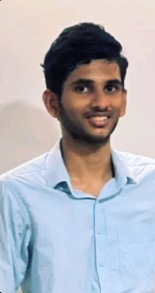
Gowshik L
Ultimate Frisbee
1 message↗

Even though we only shared the field for one tournament, winning GC Gold together is a memory I’ll keep forever. Thank you for your leadership, the incredible energy you brought to the club, and for leaving us at the very top. Best of luck for the next chapter!
Gs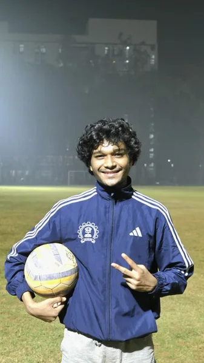
Guarav sahu
Football
4 messages↗

Gaurav has been one of the most supportive and interactive member of our football community.He always encouraged on and off the field ,creating positive atmosphere .His friendly nature made more enjoyable for everyone .
Always high on energy and always down to make yourself be heard. I really appreciate the energy, grit that you bring in this team and the hardwork that you put in to make this team function. We are a team and we are ready will be carried on in your legacy.
Dear Gaurav, It has been a privilege sharing the football ground and so many memories with you. Your dedication, leadership, and positive attitude have always inspired us. Thank you for the guidance, encouragement, and the moments that made our team stronger. As you move on to a new chapter, I wish you success, happiness, and many victories ahead. The ground won't feel quite the same without you. You'll always be remembered and missed.
GauravHoonYaro my goat, I knew you would be a great company to have since I first met you last yr at IFL with the goated team Man City, still cant digest how we pulled off that third place with all of us freshers. your iconic motivational talks will always be remembered and your solo practice everyday was surely noticed by me if not others, the ground will be empty once you're gone. Wish you the very best ahead my goat.
HC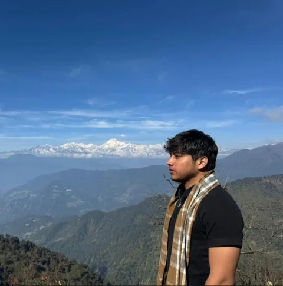
Harish Chand
Weightlifting · Institute Sports Council
9 messages↗

A very loving, friendly, and supportive senior, and at the same time an amazing lifter. Your dedication towards weightlifting and the way you treated everyone with kindness always inspired us. Wishing you success and happiness ahead — the gym and the team will surely miss you. Farewell, senior!
Most Chill person of our team, a brother🤗 a captain 💪, smile on his face creates a positive vibe wherever he stand Keep smiling bhaiya and all the best for your new journey
One of the sweetest seniors I have met
View attached photo ↗ (external, opens in a new tab)Most supportive and down to earth Senior and baap secy I could have asked for. Always standing with me in times of need. Weightlifting team ke favorite "yadav ji", thora doodh mereko bhi bhijwa dena yaar. Will always miss your presence in Inter IIT, you always turned boring plain days into memories that stay in the mind forever. Hope to see you again very soon
Probably the most chill person in the team and definitely the one with whom I did the maximum bakchodi . The Haryanvi-style “dat ja sale” still echoes in my head. Got scolded a lot at times, but at the same time you always knew when to support and motivate people when things didn’t go well ❤️ As a secretary, you had a completely different aura that no one could really match. Whether it was Udgosh, travelling, or random team moments, you always cared for everyone like an elder brother while also making sure thodi gand bhi mari jaye when needed 😂 Inter IIT honestly wouldn’t have been the same without you. From camp days and late-night cricket sessions after training to randomly saying “kuch karte hain” and then ending up playing games, roaming around, or just chilling together, those memories are something I’ll genuinely always remember. You’re also one of the biggest reasons I bonded so well with seniors during my first-year Inter IIT ❤️ And during farewell, the one thing you kept saying again and again, “ache se sambhalna tenure”, genuinely stayed with me. I’ll honestly try my best to do that 🫡 Learned a lot from you, inside and outside the gym. Wishing you all the best for your new journey ❤️ Hope you keep killing it and stay exactly the same. Will definitely miss the vibe, the guidance, and of course the bakchodi 🫂
When I took GWs from you, i thought aap toh bhot rude ho but as I got to know you more and more, you were so amazing. Always supportive, caring as a senior and chill af. Lucky to have a senior like you 🫶
Harish was the person who was respectful and if we ask him something he would try to make it happen. He was the secretary when I was there in WL. He also tried that more and more people should come to weightlifting and train. Besides that he was funny a little and joyful.
Very supportive senior
Many thanks for the dedication, passion, and enthusiasm you have exhibited throughout your journey. All the best for the future!
H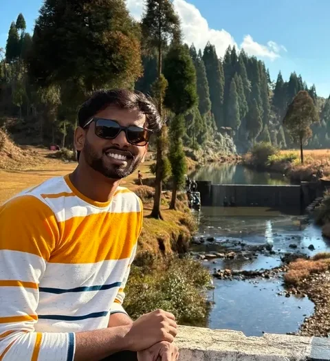
Harsh
Basketball
3 messages↗

A reliable teammate and a valued senior who helped shape the culture of the club. Hope you continue achieving great things both on and off the court.
will miss u bro
We have played only once together but it was really fun, I love the way you play make, wish aur Khel pata aapke sath
View attached photo ↗ (external, opens in a new tab)HP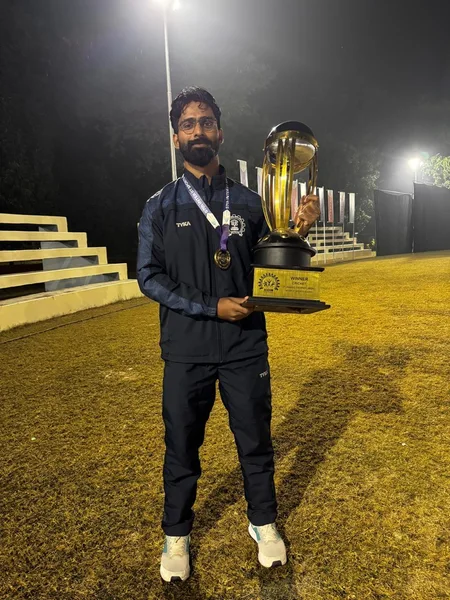
Harsh Phrohit
Cricket
16 messages↗

You wouldn’t know this but most of my first year learnings are from you - bowling, poker and some other stuff. The speeches you give motivate as if we’re going to war 😂 . And you stood by it 🫡 , the 2025 final watching you bowl with that injury made me respect you in a different manner all together. Bowling in spells with you , playing poker with and just having random chats are my core memories . Initially when I got to know you you acted mysterious and therefore I couldn’t see the depth and values you have as a person , which I eventually found and just felt a different bond with u. At last I just wanna say that I’m convinced you’re already married .
View attached photo ↗ (external, opens in a new tab)You wouldn’t know this but most of my first year learnings are from you - bowling, poker and some other stuff. The speeches you give motivate as if we’re going to war 😂 . And you stood by it 🫡 , the 2025 final watching you bowl with that injury made me respect you in a different manner all together. Bowling in spells with you , playing poker with and just having random chats are my core memories . Initially when I got to know you you acted mysterious and therefore I couldn’t see the depth and values you have as a person , which I eventually found and just felt a different bond with u. At last I just wanna say that I’m convinced you’re already married .
View attached photo ↗ (external, opens in a new tab)Hello bhayya Thanks for backing me each and every-time even when i gave 5wides and thanks for encouraging me as always Been a big fan of your batting since h18 days, only if i worked more to bring back my old form we would have played more matched together but the bond with you onnfeild is truly a core memory for me. Be it h12 team or csk cricmania i always had a relief feeling because we have you in our team and i felt like yeah my people are there in this team i have no reason to worry And sorry if i let you down bhayya, there are situations where i let our team down otherwise we would have qualified in Cricmania and it’s quite disappointing that with the performance we gave we should have won the Gc but too bad that we didn’t But i am always grateful for the chances i got to play with you guys Thankyou bhayya for playing with me All the best bhayya♥️🫂
Harsh Purohit bhaiya is a truly dangerous opener batsman who can change the game with his batting anytime. One thing I really admire about him is how calm he stays even in pressure situations. Along with that, his fun nature and nonstop jokes always keep the environment lively. A typical Delhi boy with confidence, energy, and great vibes — it was amazing getting to know and learn from him. Wishing him all the best for the future.
The most humorous off the field person and ready to help. He kept the dugout environment lite and calm with his witty nature. One of the best opener our insti had, showed class while batting in powerplay, also took crucial wickets with his bowling.
Really fun to play with especially during cricmania when we opened together for a couple of matches. Kept the environment light off field but utna he serious on the field
Harsh bhaiya is probably one of the most agressive and fearful opening batsman I bowled to . He is beautiful to watch when he bats and looks to dominate the opposition . On his day , he completely takes the other team out of the game . I first played against him in Cricmania , where his batting was the major reason why our team lost! An amazing player and a person , It has always been so nice to have him here!
Harsh bhaiya, the GOAT of IITB CRICKET and my dear friend, thoroughly enjoyed the time together as players and all the gossips as friends. The time of Inter IIT to Cricmania was a rollercoaster for me of emotions and spirit. Thank you for making my first year this enjoyable. Wishing you all the best for your future.
If having serious and unserious both at the same time was a face, it would be harsh bhaiya. Truly dedicated to the game and the best human off the field. Whether its sarcasm or genuine talks he leaves a mark on the new comers mind. Always friendly, open to discussions and cooperation. IITB CRICKET is grateful for your contributions right from the Inter IIT to Cricmania. You will always be remembered. Wishing you all the best in all your future endeavours.
View attached photo ↗ (external, opens in a new tab)Sirrr tussi great ho The fearless approach of ur batting and your off field humour and attitude are really what inspires me a lot Will miss you :)
Attacking batsman , but unlucky sometime . Baaki juniors se Banti hai
Kaafi fun insan. Kaafi maza aaya saath me khelke. Perfect all rounder honestly. Kaash mai aapse jyaada chizen seekh paata. agar aapne us din nahi bola hota hospital jaane to mai fractured thumb leke ghoom raha hota. 🙏 All the best!
I had spent my maximum time playing cricket with him. We were together in Cricmania he never missed a chance to amaze me from his game or his humour. Serious when needed but knows how to loosen the stressful behaviour. Gave his absolute best all-round performance for the team. Will miss him the most.
He is a genuinely kind and humble person who always treats everyone with respect. His passion for cricket, dedication towards the team, and positive mindset were truly admirable. The way he carried himself both on and off the field made him someone everyone looked up to.
You trained on days nobody was watching and played well on days nobody cared about the scoreboard. That habit doesn't go away when the whites come off.
First and foremost, a fellow lefty😭... his dedication towards the game, bowling that over against HYD, with a torn finger, gutsy of all. Gave team, the required daredevil vibes. All those NOIDA stories and the post game coffees. Is like an elder brother to me, great mind for the game and other things too😏
H
Hemant
Aavhan
1 message↗
and the never ending rant- great to have met you- Inter iit time ki H2 canteen pe bakchodi and intern time insti ke alag alag parts explore karna was funn - all the best for everything ahead bro! [PS take us back to convener tenuree 😭]
View attached photo ↗ (external, opens in a new tab)HK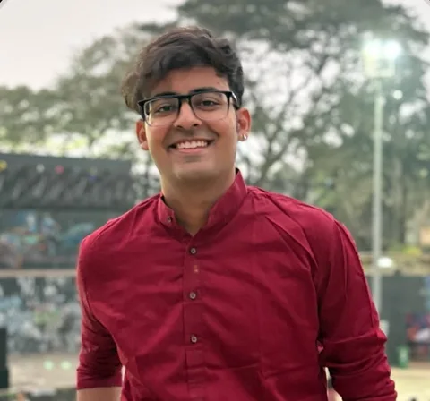
Hemant Kabra
Badminton · Hockey
7 messages↗

Seeing you I've always wondered how could a person be so detailed and structured with anything he does !! I envy that in you. Starting off as Hemant ki Paltan 💪, we got closer real quick - thanks to your welcoming nature. Soon I saw myself running to you for any sort of guidance cos even with so much chaos you somehow always surprised me with your to the point analysis and advices. No one in the history or the future could dare to match your groundwork count for a secretary election - kudos to that. Things did not turn out the way you expected it to, but as someone who had been observing everything from a distance, I would rather say that it was kind of a good thing that happened to you. You navigated through it understanding and realising about a lot of things including the people around you. I'm sure you learnt the most out of that experience and I know you are not the person to stay down but to bounce back with twice the energy. Working under you in Aavhan was quite a thing 😂. Honestly I enjoyed every bit of your scoldings. Hemant nhi sunayega toh aur kis se sununga batao I'm sure your college life must have been a roller coaster ride itself. But yes, thanks for showing up always, never letting that smile fade away and most importantly the will to help your people every time they need it. My best wishes to everything that life's got to offer you.
View attached photo ↗ (external, opens in a new tab)aapko aapke last year hi mil paya, kafi time spent kra humne, bhu aur phir hyderabad mein saath ki memories yaad rahengi hamesha, kafi random gyaan mila aapse about everything. As a player you are amongst the most self motivated, multi sports player. All the best for future and khelte hi rehna, milte rahenge for always
The cool dude, A mystery and didn’t see him playing but one of the best cool senior ever meet ✨🤘
A senior who I have not interacted much with, but have seen playing during the GC and practice sessions. The ball control and game sense he shows are awesome when I watched him play. He was also encouraging us freshies whenever possible.
It's funny that we became friends cuz of freshie group dance but Badminton allowed us to stay in touch through the years. Kya maze kiye the freshie nite ke time, so much funn. So many random convos and good memories over the years. Wishing you all the best for whatever comes next. Apne hockey juniors ko control mai rakho and galat salah mat diya kar 😂. Stay in touch, and maybe play badminton more than once a semester now and then 😂
Always in fun and mazak mode!! Apka sense of humor and easygoing nature made every interaction enjoyable. Beyond all the jokes, thank you for the guidance, support, and advice whenever I needed it. Wishing you lots of success!!
Kabra sahab, bhai such a great person. Kabhi treat ke liye mana nahi kiya😁, devoted all your time for team and game. Once Utkarsh said that YOU are the most hardworking guy on the field and that's completely true. Bhai aap roz ground pe hote the. I'm always inspired by your hardwork and dedication. Love you bhai ❤️, last day milna tha but text nahi dekha tha group mein. Always gonna miss you. And ha glove rakhna apne paas hi☺️.
View attached photo ↗ (external, opens in a new tab)H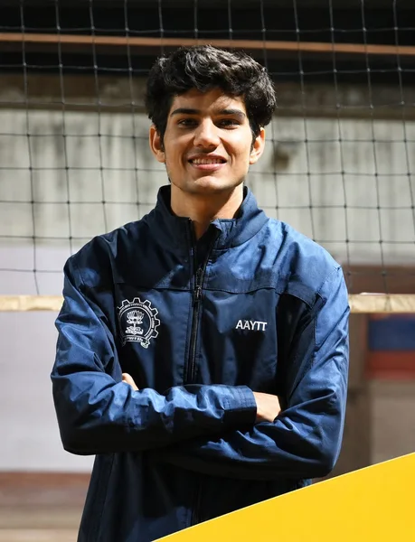
Himanshu
Volleyball
5 messages↗

Everyone is in shock, how your legs can support that much high jump. Every junior wants to know why everyone call your name "lord".
I had not played a lot with him but as a junior i really enjoy spending time with him on the court.
Had a great time with him during IVL. Helped me a lot when I was performing under pressure. He is just like his nickname 'Lord', can play both counter and middle. Doesn't look much a bodybuilder type but hits the ball with great strength.
He's not just a senior; he's like an elder brother who is always teaching and guiding his younger brothers. one of my favorite senior , i always enjoyed a lot playing with you . and going to miss you next sem .wishing you all the best for your future endeavors.
Himanshu (Lord) Known as "Lord" on our court, Himanshu is a middle blocker with an incredible vertical leap and a knack for shutting down opponents at the net. His competitive spirit and powerful blocks make him a game-changer. Off the court, he brings fun, energy, and countless memorable moments to the team.
HC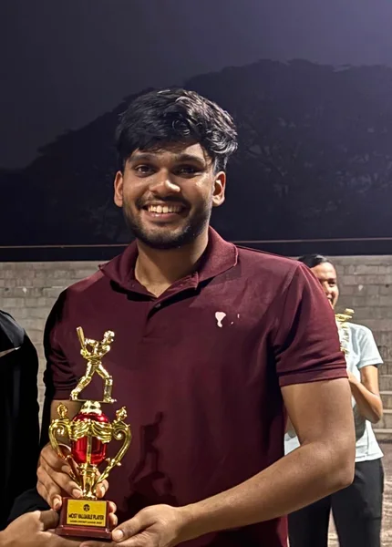
Himanshu Choudhary
Cricket
8 messages↗

Himanshu bhaiya was the go to senior whenever I am stuck in any kind of problem in or out of the cricket ground. His game especially tennis ball cricket is legendary, I dont think there is anyone better than him. His performances in MCL and H3CL are still remembered and cherished. There have been many great memories with him and I will never be able forget them. I wish all the best to himanshu bhaiya for all his Future endeavours.
View attached photo ↗ (external, opens in a new tab)He is disciplined and respected senior who contributed the team with his all round abilities, in bowling, batting and fielding. He always helped the teammates and remained committed towards the team.
A wonderful Athlete and a passionate cricketer with a true sportsman spirit. Never let any of these qualities down. Really admired your game. Wishing you all the best for your future.
Himanshu bhaiya has been an exceptional all-rounder. His performances and dedication on the field were always inspiring to watch. I learned a lot from his game sense, work ethic, and positive attitude throughout the season.
One of the best , attacking and important batsman in squad
Best wishes!
He is a genuinely kind and humble person who always treats everyone with respect. His passion for cricket, dedication towards the team, and positive mindset were truly admirable. The way he carried himself both on and off the field made him someone everyone looked up to.
Keeper of the dressing room music, destroyer of opposition morale, and occasional contributor of actual cricket we couldn't have done it without you.
HA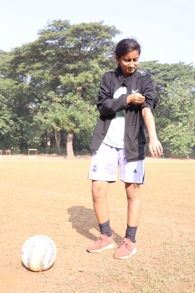
Hiya Agarwal
Football
5 messages↗

You've always carried girls football on your shoulders and have been an active participant yourself, I've really enjoyed interacting and playing on the with you. Hope you keep coming back as an alum as well
Dear Hiya, Your passion and love for football have always been inspiring. The energy, enthusiasm, and dedication you brought to the game made every moment around the team more enjoyable. Your support and commitment showed how much football means to you, and that passion had a positive impact on everyone around you. Thank you for the wonderful memories and for being such an important part of the football family. Wishing you happiness, success, and all the best for the future.
Dear Hiya, Your passion and love for football have always been inspiring. The energy, enthusiasm, and dedication you brought to the game made every moment around the team more enjoyable. Your support and commitment showed how much football means to you, and that passion had a positive impact on everyone around you. Thank you for the wonderful memories and for being such an important part of the football family. Wishing you happiness, success, and all the best for the future.
Hey Hiya Well it definitely was a surprise for me to be getting a chance to play as a goal-keeper last year (2025-summer). You, Kanak, Het, Anushka, Angel, Maitryee and Me.... Btw I will miss you around on the ground for sure. Really happy that you played amazingly well as a left-in and appreciate you coming forward, being on time on the ground always whenever asked. Wish we got more chances though to play and practice football and Hockey together. Hope to stay connected and see you around too.
View attached photo ↗ (external, opens in a new tab)Hiya our goat, aapke bina pata nahi kaise handle hoga girls football, keep visiting the campus (ya toh poolside.... lmaoo) and stay in touch with the sport. sharing an iconic photo as well lolol (idts aapko yaad hoga)
View attached photo ↗ (external, opens in a new tab)HA
Hiya Aggarwal
Volleyball
4 messages↗
Our very own football star on a volleyball court, your agility in defense is honestly something people should sit and watch. Like, seriously, don't even expect a regular underarm pass because your legs do half the job before your hands even get there, that control, that movement, it's just next level. You learned this sport in just 3 months and excelled in it. And of course, how can we forget your legendary entries to the court, thoda late, but full main character energy every single time. Proper legends entry, no less. What I really love about you is this balance: you're so obedient and respectful with seniors, but at the same time, with your batchmates, you're all fun, naughty, and full of life. The aura you carry that confidence, that athleticism, it's something people naturally notice. You don't even try; it just comes with you. Honestly, you're the perfect Gen Z of this team—talented, confident, a little unpredictable, but always making an impact.
Your positive attitude always motivated the team.
Our very own football star on a volleyball court, your agility in defense is honestly something people should sit and watch. Like, seriously, don't even expect a regular underarm pass because your legs do half the job before your hands even get there, that control, that movement, it's just next level. You learned this sport in just 3 months and excelled in it. And of course, how can we forget your legendary entries to the court, thoda late, but full main character energy every single time. Proper legends entry, no less. What I really love about you is this balance: you're so obedient and respectful with seniors, but at the same time, with your batchmates, you're all fun, naughty, and full of life. The aura you carry that confidence, that athleticism, it's something people naturally notice. You don't even try; it just comes with you. Honestly, you're the perfect Gen Z of this team—talented, confident, a little unpredictable, but always making an impact.
Your positive attitude always motivated the team.Your confidence and leadership made a difference to the team.
HA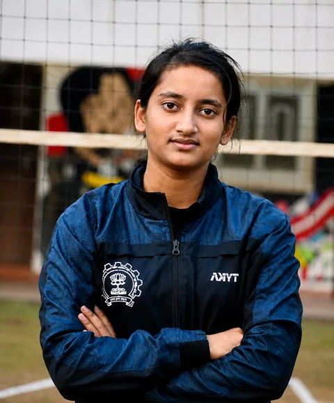
Hiya Agrawal
Institute Sports Council
3 messages↗

hadd the bestt time at isc with youu.. the memories, the banters, the treats, the setbacks🥺 but the support was constant.. my go to person whenever i find myself in difficulties 😭 aur kya hi boluu..uk everythingg🫶🫶
Coolest senior in the council, can never forget aapne kitna effort daala tha polt mein, football senti bhi aapki kaafi zada crazy and media skills bhi 💹💹, baaki thank you help karne ke liye at all points in life, you made council so special and precious for all of us, All the best for your future life❤️, and you and Raghav were a crazy surprise for all of us waise 😂😂
Council mein convener tenure ke time, aapke saath kaam krke kaafi maze aaye yaar. Saath hi, jab bhi guidance ya help ki zaroorat padi, aap hamesha support ke liye the. Uske liye thank you! All the best for everything ahead. Kaafi miss karenge! ❤️
JKJasmine Kaur
Squash
8 messages↗
I met you first during the Inter IIT Camp, during practice when coach told me to play matches with you, you helped me by explaining proper techniques and guided me to become a better player. Off the court too, you are a cheerful person, like that other time we coincidentally met at the road painting event near H2, you seemed happy and easy-to-talk-to. I wish you good luck for your future endeavours Didi!
Sweet and disciplined girl. Good leader on and off the squash courts.
very supportive
Wished to reach the top like her!
The fiercest on court yet the cutest off court 🫶
Thank you for the power, the patience, and the calm. Go take over whatever's next.
One of the strongest members of the Inter-IIT squash team, I've seen firsthand how much hard work and dedication you've put into the sport. I still remember that one of the very first matches I played after joining IIT was against you, and it was a great experience. I wish you all the very best for your future endeavors.
It was great playing squash with you. Wishing you the best ahead.
JJayakrishnan
Hockey
4 messages↗
JKay, aka the wall. Bhai yaad to abhi se aane lagi h aapki. Defender hoke bhi mujhe hamesha CF ke baare mein guide karte rahe aap. Samj nahi aa raha kya likhe? Boht man hai firse field pe baat karne ka. Hope kabhi firse milenge and love you bhai 💖.
View attached photo ↗ (external, opens in a new tab)Hey JK whats up !!! I think we have played quite a few times together in IHL and even during practice matches... You at the defence ... and i never have to think anything.. I can play as I wish in the forward position... All the best for PhD btw!!
One of the best defenders of our team , learned a lot while playing with you. You have always been kind and supportive to everyone. All the best for your future
I might have just realized your real name is Jayakrishnan, but to the team, you’ll always be JK, the senior who constantly had our backs. Your constant support and approachable nature made this year so much better for us juniors. It’s been great playing alongside you. Wishing you the absolute best after graduation!
JCJayank Chaudhary
Hockey
1 message↗
A really hardworking player , showed a great improvement in goalkeeping skills. I am really delighted to share 2 gc medals and an inter IIT medal with you. All the best for upsc
KGKajal Gupta
Volleyball
6 messages↗
Our setter, but honestly, so much more than that. You've always been your own biggest critic, sometimes even taking the blame for things that weren't yours to carry, and that shows how deeply you care about the team. I don't think I'll ever forget the 2024 Inter IIT head injury and the way you handled everything without letting it disturb the team's rhythm. That was something else. On the court, watching you play is just a treat. The way you convert the bad passes into very good sets is commendable; your agility to chase even the farthest one is just beautiful to watch. You never give up on a point, ever. And what really surprised me was how quickly you became one of us. It's honestly not easy to bond and connect in the very first meet, but you did it with such ease that it felt like you'd always been part of the team. But the most powerful thing about you is how you hid your own sorrow and still showed up for the team. That kind of love, that kind of commitment, it's rare.
very humble and sweet person . you notice my game and tell me how to play game . always ready to help juniors.
From learning setting from you to cracking endless jokes, we’ve come a long way together. It’s hard to believe that you’re graduating now. The memories of playing the Sophie League and the vibe we shared on the court will always be unmatched. I’ll miss you a lot and cherish these memories forever. ❤️
She talks very politely. Once she gave treat to me and some of my batchmates
Our setter, but honestly, so much more than that. You've always been your own biggest critic, sometimes even taking the blame for things that weren't yours to carry, and that shows how deeply you care about the team. I don't think I'll ever forget the 2024 Inter IIT head injury and the way you handled everything without letting it disturb the team's rhythm. That was something else. On the court, watching you play is just a treat. The way you convert the bad passes into very good sets is commendable; your agility to chase even the farthest one is just beautiful to watch. You never give up on a point, ever. And what really surprised me was how quickly you became one of us. It's honestly not easy to bond and connect in the very first meet, but you did it with such ease that it felt like you'd always been part of the team. But the most powerful thing about you is how you hid your own sorrow and still showed up for the team. That kind of love, that kind of commitment, it's rare.
Hey setting partner! I’ve truly had a wonderful time practicing and playing with you. You were always there to support me whenever I felt low, and that’s something I’ll always be grateful for. Inter IIT 2025 will always be my favorite memory of us, the championship year when we finally won gold. The four months of hard work we both put in together and then finally seeing it all pay off is a memory I’ll cherish for a long time. I've been amazed by how you managed to keep playing and contributing to the team in your second year despite your heavy project commitments. That really shows the love and dedication you have for the sport . Keep enjoying the game and keep reaching greater heights. Wishing you all the very best for everything ahead!
View attached photo ↗ (external, opens in a new tab)KKKalpesh Khare
Institute Sports Council
5 messages↗
You’ll always be an inspiration yaar 😭 Aapke under convenor bana, ISC mein aaya, aur honestly kabhi nahi laga tha ki main Nom tak pahunch paunga. Mere personality development ka genuinely bohot bada credit aapko hi jaata hai. Aapki council dekh ke hi motivation mila tha ki itna long term council continue karna hai. Intern season mein bhi aapne jitni help kari thi, I’ll never forget that. Aur aapke teeno “bacho” ki jo crazy interns lagi 😭 proper proud moment tha honestly. Aapke tech skills toh hamesha next level rahe hain. Aur huge congratulations for the Japan PPO 💖 Ab toh bade log ban gaye ho sir aap 😭 Bas humein mat bhool jaana. Radisson Blu wali treat bhi genuinely unforgettable rahegi 😂 Bohot crazy tenure tha overall, and I think aapne hi woh legacy start kari that Tech Heads can be genuinely close and connected with the entire council. Wishing you all the best for everything ahead sir 💖💖
Best techhead ever, no doubt. Even tho I wasn't a convenor aapke tenure mai, pr aapke kisse hee kaafi hai, Radisson pe treat and whatnot. Techhead ka bar toh aapne hee set kiya tha 😎and we're still trying to reach it. All the best for Japan!
Most goated techhead ever, I wish you all the best for your future endeavors
The first time I contacted you was for guidance regarding the ISC Web Convener soapbox. Thank you so much for helping me out. I really want to appreciate that you took time to give replies and share your thoughts and suggestions. It genuinely helped me prepare better and boost my confidence. Everyone may not take that much effort to help someone they barely know, and I really value that. Even though the soapbox turned out to be a prank and we didn't realize it until it was over, your guidance was genuinely helpful and something I'll remember. Thank you once again bhaiya. Wishing you all the very best for the future! ❤️
One of the best senior ever! Thanks for getting me through I don't even know how many courses, interviews, and and pretty much everything in between. Wishing you all the best ahead!
KKamlesh
Athletics
2 messages↗
Wishing you a fantastic and successful life ahead, mate. May you fulfill all your dreams and continue bringing positive vibes to everyone around you.
Kamlesh Bhaiya, We didn’t get to interact much, unfortunately, but whatever little interaction we had was really great and memorable. Wishing you all the very best for your future, Bhaiya. Hope you achieve great success and happiness in everything ahead.
KJKarthikeyan J
Aquatics
6 messages↗
Your backstroke skill was the best! Thank you for your time and dedication, and best wishes for all that the future has in store.
Bobby, Our backstroke king and one of the most solid center back player of this team. always steady, always showing up, and always giving it your all.
Amazing IWL Captain, amazing player, amazing person, and amazing treat :P Gonna miss you bhaiya
Best seniors swimmer athelete guitarist drinker..the man with discipline the time when I called u all those things and Niggga :) ..will miss those times
Karthikeyan bhaiya - has got a nice back stroke and a great defence. His style both on and off the pool is nice. Also his singing and guitar are a bliss to ears. Wishing you all the best for your future!
View attached photo ↗ (external, opens in a new tab)He's the bad influence my elders warned me about. A joyful soul who knows how to enjoy life and spread that happiness to everyone around him. And when it comes to the game, he's the kind of defender who haunts attackers long after the final whistle.
View attached photo ↗ (external, opens in a new tab)KUKartik UC
Hockey
5 messages↗
UCcccc, such a lovely human. Bhai kaha se shuru karun? The pure magic on the field and composed in life. Aur KD ki life to mai kabhi nahi bhoolunga. Love you bhai 3000💗. UC the P......
View attached photo ↗ (external, opens in a new tab)UC Bhaiya ki jai ho😁🫡🫡🫡 har sports mein experience rakhke rakhe hai ye
The one who always gave advice in a very Gyaani manner. It was fun to see you play especially your blind passes with Ashu which were brilliant when they worked. Thanks for all the knowledge you imparted to us.
One of the cutest player of our team, and a very fit player too, but still prone to many injuries. Your injury in gc final cost us gold. You have a great balance in between sports and academics. Usa admission ki party bachi h🙂
Ahem ! Hi UC :P I have magged-up your name finally with the right spelling ok! 14 lettered surname Itna bada surname Q ! Well I am proud of you ...you chasing your dreams of pursuing phd... all the best! I dont think we actually played on the same team as such but yeah its nice having you around on the ground. Although you say you cant smile.. when yeah for the camera you cant ... but I have usually seen you happy and smile ... giving expert logical advise and suggestions ... ( not commenting if they are useful though) Well become a Dr. Kartik Utkarsh Chikkanagoudar soon ! All the best !
KKKaushal Khunteta
Aquatics
7 messages↗
Thank you for representing the IIT Bombay swim team with commitment and perseverance. Your breakstroke skill is unmatched! I wish you the very best as you begin a new chapter.
KK, You’ve been one of the best breaststroker for us, and even while being our full-time MoodI OC, you always showed up when it mattered. That balance of fun and dedication is so rare, and it’s what made you such an important part of this team.
Defender who stands tall like a wall in water .... Will miss swimmer like you
Although I met him for the first time in the insti, Kaushal bhaiya and I used to swim in the same pool in Jaipur. He is very cool and plays all over the pool and keeps the game in control. Wishing you all the best for your future !
View attached photo ↗ (external, opens in a new tab)Faster in breaststroke than many swimmers are in freestyle. He dominated Inter-IIT for three years with his stroke, and he didn't stop there—he went on to become a MoodI OC. Machaya hai, boss!
View attached photo ↗ (external, opens in a new tab)I'll always remember the day you convinced me to ask for a Coke refill at KFC in Indore airport after Inter IIT 2024. One memory that always comes to mind whenever I think of our interactions. Thanks for all the fun conversations and for being such a supportive senior. Wishing you all the best for the future!
Thank you for being our mentor and guide !
KKhushbu
Indian Games
5 messages↗
Khushbu didi, I met you for the first and last time on the farewell day, but even that one day became very memorable for me. Your nature and the way you talked to us were really nice. You are a very good senior. We will miss you, didi.
Thank you for all the dedication, passion, and spirit you brought throughout your journey. Your hard work, achievements, and presence have truly inspired many people and left a lasting impact. Wishing you endless success, happiness, and victories in whatever comes next. You’ll always be remembered for the energy and legacy you leave behind. All the best for your future! 💙
Many thanks for the dedication, passion, and enthusiasm you have exhibited throughout your journey. All the best for the future!
Didi ki height chotii h but jubaan bhut lambiii h . Bhut tej chillati h jab koi inki baat nhi suntaa h . Spardha k time puri team ko cheer krne ki jimeedari akele ne uthae h . Bhut acchi advicee dete ho aap . Inse baat krne k neeche dekh k bolna pdta h . Bhut down to earth h 😂 Lots of good wishes from our side 🫶❤️
You are a really kind and sweet person. You come to motivate us during our matches. It means a lot to us that you take the time to cheer and support us.Your presence really boosts our confidence and keeps us going. Thank you for encouraging us. Wishing you all the happiness and success in the future.
KKosmika
Lawn Tennis
2 messages↗
Always there to light up the courts with her cheerful personality and fierce forehand she will be remembered for a long time
I still remember the day we met at the farewell party. We couldn't talk much that day, but I really enjoyed the conversation we had. Thank you so much for the party — it will always remain a special memory for me. And once again, I'm sorry for accidentally spilling a little hot chocolate on your dress that day😭😭
KGKushagra Gupta
Squash · Board Games
11 messages↗
holding squash racket at the bottom( effect of tennis) and winning GC matches hits different 😀
bestt dampp fr! the support i had yours in my 3rd yr🥺🥹🫶
Kushagra is literally an all-rounder, from chess to tennis to squash and probably every other sport possible, bro does everything. Super fun to be around and always bringing good vibes to the room. Wishing you lots of success ahead, bhaiya gonna miss the energy you brought to board games 😭!
Hey Kushagra, its been great to get to know you throughout my college life, from InterIIT practice to taking groundworks and from my soapbox (crazy GPL le li tab to😭😭) to your farewell… it’s been a great time Hope we stay in touch and best of luck for life!
I first saw you at the start of the Squash GC 2025-2026, talked to you and got to know that you were also from MEMS, saw you play matches in GC, giving your all to win, then a few times after the GC, during your last semester, played some very thrilling and difficult matches with you, but the one most important thing I've learned from you is to be unpredictable and hit more drop shots, tire the opponent out and be ready to move at all times! Also after your farewell, I asked you about how to decide which path to follow for my future besides playing Squash in insti, although I'm still not sure about what to do, your experience of choosing core meta job in mostly R&D showed another possible path for me, I'm really thankful for that and the guidance you've given me directly when I asked and indirectly when I saw your matches.. I like that you play sports beside Squash, like Tennis and Badminton, enjoy the time and play for the curiosity and love of the sport, felt so similar to you in that way.. I'll miss you bhaiya, I wish you good luck for your future endeavors, do come back as an alumnus and meet us juniors again!
Heard a lot about you. Unfortunately I could not meet you in person over the board or at farewell. Looking forward to meet you when you visit the campus❤️
Still can't figure out how someone can be that good at bullet chess (even after being bad at normal time controls lol😂). And then there's the completely unexpected hidden talent, those occasional Instagram singing stories. Every time one pops up, it's a reminder that being annoyingly good at chess wasn't enough you had to be good at singing too! Honestly, it's been great knowing and interacting with you. Wishing you lots of success ahead, and selfishly hoping the insta singing stories continue even after graduation. 🎶♟️ You'll definitely be missed. ❤️
I may not have had the chance to meet you all personally yet, but I've heard so much about you from the seniors and fellow members that it already feels like I know you a little. The way people speak about you with such warmth and respect says a lot about the kind of people you are. I really hope we get to interact soon and I can learn from you firsthand. Looking forward to that time!
It was truly a great experience playing alongside you. Every match and practice session with you was filled with learning, fun, and healthy competition
It was always fun seeing you at the courts. Good luck for the future!
Extremely multi-talented! Be it squash, chess, pool whatever he aces when he plays! I really enjoyed my time with him at the farewell. Hope we meet again. All the best for your future endeavours! Best wishes.
LLeena
Table Tennis
3 messages↗
You brought great energy to the TT court and whenever we crossed paths on campus. Wishing you endless happiness, success, and many more wins ahead! ❤️🫶
Wishing you happiness and success in every step ahead. Thank you for all the memories and moments we’ll always cherish. All the best for your new journey!
The embodiment of dedication and perseverance, Leena never backs down from a challenge. Even when the odds are against her, she fights relentlessly until the very last point, often turning the tables and forcing her opponents onto the defensive. Fearless and determined on the table, she competes with remarkable grit and confidence. Off the table, her joyful spirit, warmth, and positive energy make her a wonderful friend and teammate. Her resilience and enthusiasm leave a lasting impression on everyone around her.
View attached photo ↗ (external, opens in a new tab)MHMahek Hinhoriya
Board Games
7 messages↗
Go to person at tough times alwayss!! the banters, the fun, the memories! always a chill guyy😎😎🫶
Always smiling, always funny, and honestly impossible to not laugh around you. The vibes instantly got better whenever you were there. Gonna miss all the random fun moments and bakchodi in board games. Wishing you lots of happiness and success ahead, Mehak !
A cool ,calm and composed person .I remember a draw game against you at a tournament in Akola when you were 1400 smt and I was unrated.Didnt had a chance to play with you onboard in the campus.Lots of love and a happy farewell bhaiya ❤️❤️❤️
Hey Mahek, have had a great time getting to know you during clg life… from Aavhan all the way to farewell! Hope we stay in touch and best of luck for life!!
Marketing manageerr sirrr😭 "Bhai, pre-camp mein chance hai na iss baar?" is probably the line I'll forever associate with you. The consistency, optimism, and dedication behind that one question deserves respect. 😂😂 Aapke crazy jugaadu skills dekhe aavhan me kaam karte wqt....honestly kaafi maza aya! Aur of course, MCA ke saath Aavhan mein jo bakchodi (and BT) hui thi, woh memories toh impossible hain bhoolna. Kaafi mast yaadein bani bhai. Aise hi jugaad lagate rehna aur life mein phodte rehna. All the best! ❤️ (Aur mumbai aao tab milte rehna.......(aapki new job ki treat bhi bachi hai lol).....farewell ke din jaldi chale gaye the😂)
I may not have had the chance to meet you all personally yet, but I've heard so much about you from the seniors and fellow members that it already feels like I know you a little. The way people speak about you with such warmth and respect says a lot about the kind of people you are. I really hope we get to interact soon and I can learn from you firsthand. Looking forward to that time!
Haven't met him much, but I have heard a lot of his managing skills during his Aavhan tenure! Hope we meet soon again. All the best for your future endeavours!
MMahesh
Athletics
1 message↗
May life bless you with great success, unforgettable memories, and happiness in every step ahead.
MManasvi
Volleyball
3 messages↗
Hii di, Hamesha hasti-hasti rehti ho aap! Is chiz ko miss karenge, Aapke sath first year Inter IIT camp me kaafi maze kiye, aur aapki roomie rehne ka toh experience kaafi crzzyy tha 🥲, kaafi chizen sikhi aapse 🤭,aur kaafi achha time raha. Genuinely aapse kaafi kuch sikha. and aapko kaafi miss karenge. Will miss youu diiii.........🤗
Your positive attitude always motivated the team.
The dhadkan of the team. The energy, the vibe, the spirit… it just feels incomplete without you. You've always been so free-spirited, playing your game your way, and somehow still being exactly what the team needs. A true universal player, but let's be real, your defense is something else. You're probably the only one who truly understands and values defense the way it should be, and that's what made you so special on the field. You didn't just play—you protected, you held things together, and honestly, you were the backbone of 2024 Inter IIT. You're my Mannu… my Mannu Maama. There's a comfort, a bond, a feeling with you that goes beyond the game. You've been someone I could rely on, laugh with, and just be real around
MKMohammad Kadri
Volleyball
5 messages↗
Blessed to have you as a senior. He was the ISMP of wing next to mine but I never felt that. I can never forget that random dilli darbar treat and how tasty the food was but he made it even better. Best senior and a mentor i could have ever asked for🫶🫶
ISMP mentor along with next level skills of attacking, ball never touches blocker when he attacks and libero always finds the way to pick up your services. Your contribution to team is unforgettable
In second sem I played a lot with him and he always came up with a new story of volleyball from his past years.
You were always active and energetic during matches and practice. The person who always before time on court and always enjoy the game. The memories of playing alongside you will always stay with me. Best of luck bhaiya for your future.
Mohammad bhaiya is one of the sweetest and most humble people you will ever meet. Quiet by nature, he is always observing, learning, and improving himself. His discipline and dedication are evident both on and off the court. Despite his calm personality, he is someone who is always there for his teammates and juniors whenever needed. A true team player with a kind heart, Mohammad earns everyone's respect not just for his game, but for the person he is. His positive attitude and willingness to learn make him an invaluable part of the volleyball family.
MSMohd Shahzeb
Hockey
4 messages↗
The passing out senior I remember the most playing with. A very chill and nice senior on and off field. I haven't talked much with him, but I do remember the smile he always has on his face whether he's playing, chatting with others or anything else.
Aur Shazeb miyan kaise ho 😃? Yaar you are such a nice person. Meri baatein kaise sun lete the. BHU ki jagah ghar jane wale insaan😁. Bhai yaar miss karunga aapko boht.🥲 Aur ek afsos aapki koi photo nahi h mere paas. Love you bhai 💖
It was great to play with you , also in udghosh tournament. Wishing you success and happiness in future.
Hockey made my IIT Bombay life full of fun and memories. I met amazing people and made great friends through the team. Utkarsh Bhaiya always helped and guided us, while Suri Didi made every practice and trip more fun with her cheerful nature. Playing with Pranav and Devendra taught me discipline and teamwork. A special thanks to Khushal, our Hockey General Secretary. He managed the team really well during Spardha at BHU and made sure everything went smoothly. Because of him, I got the chance to be part of such an amazing trip. From hockey matches and team dinners to travelling, jokes, and countless laughs, every moment was special. The memories I made with the hockey team will always bring a smile to my face.
MMohsin
Athletics
3 messages↗
Your cheerful nature and the constant smile on your face are what make you such a wonderful person, mate. You always brought positivity and good energy wherever you went, and that is something everyone truly appreciates about you. Wishing you endless success, happiness, and a wonderful future ahead, mate. May all your dreams turn into reality, and may your positivity and good spirit continue to inspire everyone around you wherever life takes you.
Mohsin have been the sweetest person I have ever seen. He is always happy and joyful. He has shown the remarkable growth in his fitness, I really appreciate him, being a asthmatic, it would have been very difficult for him in the initial stages, but at the current stages he can do all the workouts with everyone's pace! Mohsin bhaiya, I wish you a very happy journey ahead, keeping smiling :) and keep doing the practice!
Dear Mohsin Bhaiya, You were one of the most consistent people on the track. No matter how messed up the sleep schedule was 😄, you always showed up and gave your best. Your smile always brought positive energy to the ground, and it was genuinely nice seeing you around every day. And of course, our special handshake is definitely something I'll miss! Thank you for all the good memories and for being such a great teammate. Wishing you all the very best for the future, Bhaiya. May you achieve everything you aim for. Stay happy and stay in touch!
MPMontu Pegu
Weightlifting
6 messages↗
Quiet in words, but strong in spirit — you inspired everyone with your calm nature and dedication to weightlifting. Your discipline, sportsmanship, and silent confidence always stood out. Wishing you success, strength, and happiness in every step ahead.
Bhaiya is Quiet and composed most of the time, yet somehow the moment music starts he turns into a completely different energy on the dance floor May your upcoming journey be filled with harmonious notes and joyful melodies Stay Happy always and keep rocking🤗😎
Silent killer. Was all sweet and quiet till we got to know each other a little then it was all him
Though I didn't had much interaction with Montu, I saw him teaching new students WL and he was good at it.
Very supportive senior Gave me advice not only for sports but also for academics
Many thanks for the dedication, passion, and enthusiasm you have exhibited throughout your journey. All the best for the future!
MMuskaan
Basketball
5 messages↗
First of all thank you for the jordans, i have 2 medals with them now. Second thank you for ‘23 semis against IIT Roorkee, those 2 free throwsss yaar. I will always remember the two hugs we shared after winning. Had so so so much fun with your tauji taiji, one of my core memories i will preserve. You have always been a girl’s girl and I love that about you. It took time to get to like u like i do now, but i think thats a standard time. All the best with everything else that is coming and keep me in your thoughts. Love, suddu
View attached photo ↗ (external, opens in a new tab)You brought positivity and energy wherever you went. Wishing you the very best for everything that comes next. Thank you for all the memories, guidance, and contribution to the team.
pmkn would be proud (pls get fiitjee out of my head) u da real mvp slayy queen will miss you ma'am
Muskaan you are such a good centre. Thank you so much for your contribution to the team
View attached photo ↗ (external, opens in a new tab)Thank for carrying us through all the clutch moments muskaan, you remain one of most talented players we've seen, keep coming back to play with us. We will miss you.
View attached photo ↗ (external, opens in a new tab)MJMuskaan Jain
Aquatics
2 messages↗
Your journey with the IIT Bombay swim team may be coming to an end, but the effort and spirit you brought will always be remembered. Thank you for your contribution, and best wishes for everything that comes next.
Still can't believe you're graduating. Thanks for being one of those seniors who always made things easier for everyone else. Whether it was helping out, cheering people on, or just being around, you always brought good vibes to the team. All the best for what's next, and please come visit the pool once in a while :)
NNaveen
Indian Games
10 messages↗
Hellooooooo Captainnn!!! Learning skills from you was so funn and those mafia and uno games memory still reminds me of u ki kitne badmaash the aap(joking). But still u r a great player and captain indeed. Thankyouu so much for teaching us!! It was great to meet u and I still remember aroma pr woh chicken franky and rice free ka khilaaya tha aapne Thankuu for that too!!
Thank you for teaching and guiding. I learned many things from you,and if you were not there i might not think of playing as good as I am now. It was really great playing with you. Wishing you lots of success and happiness for your future.
Bhaiya taught many skills of Kabaddi.Disciplined and dedicated on the mat giving his best.At the same time,playful off the field.Constantly backed the team strengthening support at Udghosh as well as IKL. Lots of love and a happy farewell Captain ❤️❤️❤️
Thank you for all the dedication, passion, and spirit you brought throughout your journey. Your hard work, achievements, and presence have truly inspired many people and left a lasting impact. Wishing you endless success, happiness, and victories in whatever comes next. You’ll always be remembered for the energy and legacy you leave behind. All the best for your future! 💙
Greatest girls team coach ever 🐐
Many thanks for the dedication, passion, and enthusiasm you have exhibited throughout your journey. All the best for the future!
Hahahhaha!!! Seeyou soon, Captain!! :))
Naveen bhaiya is a solid cover in Kabaddi and truly one of the best players on the field. Whenever I play in the corner and go for a dive, his support is always perfect and on time. His coordination, strength, and game sense make him a backbone of the team. Playing with him gives confidence, and his presence makes every match better. Truly a reliable and inspiring player.
View attached photo ↗ (external, opens in a new tab)Dear Naveen bhaiya, Your dedication, strength, and sportsmanship in Kabaddi have always inspired us. From intense matches to fun moments on and off the ground, every memory with you all will remain special. You taught us teamwork, discipline, and the true spirit of the game. Though it’s hard to say goodbye, we are grateful for all the guidance and support you gave us. The court will surely feel empty without your energy and presence. Wishing you success, happiness, and victories in every phase of life ahead. Thank you for being such amazing seniors and role models. We will truly miss you all.
One of the backbone of the kabaddi boys team, will always be remembered as the MVP and coach 😂.
NBNeeraj Bajiya
Volleyball
5 messages↗
Good player,teachs well
I don't know why everyone calls you the best senior, creating good environment and makes everyone to laugh with your jokes always remembers your presence, at last har practice ke time assignment kyo aa jata h and what is the meaning of your signature pose
Amazing,I guess he is the only player who can block sunil bhaiya in a single block.
You had a way of making everyone feel comfortable, which is why you felt more like a friend than a senior.Your jokes, encouragement, and positive attitude made every volleyball session memorable.
Neeraj Bhaiya is a fierce competitor on the court and a calm, composed person off it. His passion for the game is unmatched, and his powerful spikes make him a constant threat to opponents. The highlight, however, is his spectacular 3-meter attacks that never fail to steal the show.
NANenavath Anusha
Indian Games
6 messages↗
Thank you for all the dedication, passion, and spirit you brought throughout your journey. Your hard work, achievements, and presence have truly inspired many people and left a lasting impact. Wishing you endless success, happiness, and victories in whatever comes next. You’ll always be remembered for the energy and legacy you leave behind. All the best for your future! 💙
Hellooo Anushaaa diii ❤️❤️❤️ Meeting you has genuinely been one of the sweetest parts of this journey. You are such an amazing senior and such a kind-hearted person. I really admire the way you bond with everyone and make people feel comfortable around you. Playing with you gave me some of my best memories, and your positive vibe always makes everything better. Also, your smile is literally so wholesomeee , never stop smilinggg 😊 Wishing you endless happiness, success, and all the amazing things ahead in life. You’re truly going to do great wherever you gooo ❤️
The friendliest member of the team . Always keeps the team spirit high up . Amazing senior and on field and absolute terror. Has great tackling skills and always fun to be with .
Many thanks for the dedication, passion, and enthusiasm you have exhibited throughout your journey. All the best for the future!
Anusha is soo fierce and powerful, loved playing with her entertaining nature.She has brought such a belief in the game when it was needed the most. Love you! Do best in all your future endeavours :)
Sharing with you some of the very crezy and cool moments from past 2 years. Apke hindi bahut achi lagti mujhe🤣.
View attached photo ↗ (external, opens in a new tab)NNidhi
Basketball
7 messages↗
Nidhi has always been super approachable and fun to interact with. The numerous times we’ve played in casual runs has bolstered my respect for her deadly three pointer, as well as her quick drives.
7 years of PhD, 4 inter IITs, 2 degrees, and a G-Shock watch is what we have bonded over. I think we have lived upto people’s lesbian fantasies as there is no Suddu without Nidhi. I have legit shared more with you that Viru, thank you for always being my go to person, i will miss that moving forward. IITB always felt less lonely because you were there, meetings with my Prof seemed less stressful because you were always there to listen to my rant. We got our first medal under your captaincy and I couldn’t be any prouder. Great player, the court will remember you, I will remember you!! #23
View attached photo ↗ (external, opens in a new tab)Watching you on the court was always a treat, you were an absolute baller 🏀, this place is going to feel that absence on the court. Wishing you the best for everything ahead!
A wonderful senior and teammate who helped make the basketball community feel welcoming. Hope the future has amazing things in store for you.
will miss your positive energy :))
I’ll misss youuu so much, I will always remember the day when we all when to chillies with Dileep, it’s was sooo funnn. You were really strong at the court may it be 3p or a layup, I wish aur Khel pate sath mai
View attached photo ↗ (external, opens in a new tab)Always great seeing you play. Keep coming back to hoop nidhi di ❤️
NTNikhil Thejesh
Football
5 messages↗
It’s hard to believe you're leaving. Playing football with you has been one of the best parts of college life. Beyond being a great player, you were the one who brought people together, organized tournaments, and created memories that we'll all carry with us for a long time. Thank you for your leadership, dedication, and the countless matches we played together. The football community here won't be the same without you. Wishing you success, happiness, and many more victories wherever life takes you next. You'll always have a place on our team. All the best, senior. We'll miss you.
cannot have asked for a better captain for leading the team, cheers to all the amazing memories and best of luck!
Niks🙏 my captain, i know you've given a lot to this community all these years and we would be more than happy to carry on this commitment. I'll remember you as the person who kept this team together. From your rituals before the match and also your special drink( nikhil special) all will be carried forward.
View attached photo ↗ (external, opens in a new tab)dear Nikhil, As a pivot, you were the link that held the team together, always controlling the game with composure and leading by example. Your leadership, dedication, and calm presence on the field inspired everyone around you. Thank you for guiding the team and for all the memories shared. Wishing you success, happiness, and many achievements in the future. You'll always be remembered as a captain who gave everything for the team.
Goat Captain pivot, will miss you big niks, always there for me and thr team and kept us disciplined. Turf and ground wont feel the same without you leading the game (and shouting at us from the sidelines). Thank you for all the support you have given, also we still havent sat together yet 🍻🍻🍻. Best of luck ahead and keep coming goat 🫡
PJPalak Jain
Athletics
4 messages↗
May your journey ahead be bright and full of achievements. I hope you continue to spread the same cheerful energy wherever you go.
When I was a fresher, Palak didi was the next senior in girls that I knew after Samiksha didi. We (fresher girls) used to get very fascinated by her performance, I remember us doing hurdles in the morning, Palak didi leading us, we girls were like- "How could you do that so easily?!", and also in start of the the summer camp 2025, you were like half or almost 3/4th round ahead of us at the end of 20 mins continuous! I wish you a very happy journey and successful life ahead! Keep meeting us :)
View attached photo ↗ (external, opens in a new tab)Dear Palak Di, When I first joined the team, you used to come regularly for practice, and one thing I always admired was your consistency. From your first year itself, you stayed involved with athletics and kept showing up, which is really commendable. Throughout the years, you have represented your hostel with great enthusiasm, whether it was in Crossy GC or Athletics GC. What makes it even more impressive is that you didn't just participate, you delivered some outstanding performances as well. Your dedication and commitment have been inspiring to see. Wishing you all the very best for the future, Palak Di. May you continue to achieve great things and find success in everything you do. Stay in touch!
You was one of the best mentors and friends. From athletics to guidance in my courses, you always helped. Maybe good times always follow you wherever you go.
PPParidhi Pamecha
Volleyball
7 messages↗
Our only mind cracker, you came in just because you liked to play… but little did we know, you'd also come with logic and 101 questions ready at all times. Honestly, answering your doubts was a full-time job, and even a coach could probably answer only 1 out of those 100, but that's what makes Parru. Always curious, always thinking, always wanting to understand things properly. Beneath all that chaos, you're actually so sorted (even if you don't admit it) and let's not forget your top priority "FOOD". No matter what was happening, food always had its place, and honestly, we respect that. As a setter, you brought your own unique vibe to the game, questioning, learning, improving, and somehow still making it all work. But more than anything, you're truly a character to remember with stories that we'll keep laughing about for a long time. Love you, di
very sweet and kind . I had a nice experience with you . you are always ready to help juniors.
Playing IVL with you was one of the best experiences. Your defence were absolutely incredible 🤩 You always inspired me on the court. I'll miss playing with you and will miss you a lot, Di. ❤️🏐
View attached photo ↗ (external, opens in a new tab)Hey setter partner! Had a great time practising with you for Inter IIT 2023 and later playing IVL 2024 together as Team Karasuno. You've always been someone who keeps things light and cheerful, making every conversation easy and enjoyable. Stay the same jovial and positive person that everyone loves being around. Wishing you all the best for the future!
View attached photo ↗ (external, opens in a new tab)Your positive attitude always motivated the team.
Our only mind cracker, you came in just because you liked to play… but little did we know, you'd also come with logic and 101 questions ready at all times. Honestly, answering your doubts was a full-time job, and even a coach could probably answer only 1 out of those 100, but that's what makes Parru. Always curious, always thinking, always wanting to understand things properly. Beneath all that chaos, you're actually so sorted (even if you don't admit it) and let's not forget your top priority "FOOD". No matter what was happening, food always had its place, and honestly, we respect that. As a setter, you brought your own unique vibe to the game, questioning, learning, improving, and somehow still making it all work. But more than anything, you're truly a character to remember with stories that we'll keep laughing about for a long time.
You were always active and energetic during matches and practice.Your positive attitude always motivated the team.
PParshva
Indian Games
3 messages↗
As you graduate, our team will miss having you around. As an attacker, your judgment on the field was always noticeable, helping you make the right moves at the right time. It was good having you as part of the team and sharing those moments together. Wishing you success ahead, keep doing your best in everything you take up!
Thank you for all the dedication, passion, and spirit you brought throughout your journey. Your hard work, achievements, and presence have truly inspired many people and left a lasting impact. Wishing you endless success, happiness, and victories in whatever comes next. You’ll always be remembered for the energy and legacy you leave behind. All the best for your future! 💙
Many thanks for the dedication, passion, and enthusiasm you have exhibited throughout your journey. All the best for the future!
PPiyush
Basketball
6 messages↗
Piyush is the most genuine senior i have met. Be it the moments we shared on the running track, or over mysore pak, he’s been a great person to make memories with, and has been approachable at all times. He’s a presence i’ll truly miss on and off the court
Your contribution to the team and club will always be appreciated. Wishing you success in every challenge and opportunity that comes your way.
ayy my fellow h5 brother, gc wont be the same without you .. ur damn fun to talk to, ill miss you sir
Lol I still remember u dropping me to my room when I was drunk and me saying you look like my ex’s ex, omg I am still so embarrassed by it, you were a really sweet person Piyush, I’ll fs miss you
View attached photo ↗ (external, opens in a new tab)To this day i am fascinated by his bihari accent. Bohot mazze kiye hai aapke saath. Gotta bulk up now man its time for that lets get that summer bod. Hope my room is treating you well. See u soon
tolerance badhao thoda 😂❤️ Always cool seeing you hoop. Keep hitting the courts
PPraktik
Basketball
3 messages↗
Thank you for being a part of the IITB Basketball journey and helping build the community we enjoy today. Best wishes for everything ahead :)
ill miss practicing post moves with u big boss, also im gonna get to your physique in a year watch me :) ill miss u dude
Hey praktik. We haven’t played much together but I really love your physique, wish you were there at the court more, you were really chill every time you were around and that’s something that I look upto
View attached photo ↗ (external, opens in a new tab)PBPranab Baro
Football
5 messages↗
the most beautiful and skillful play mene kisika dekha hai toh that was you in our 1st/2nd yr... not even joking. And i remember how much we had to convince you in our convener tenure 😭 Anyway all the best!!
Hand of God in that match against djsce in avhan is the iconic moment I'll remember, you're extremely humble on and off the pitch. I hope you keep coming back as an alum
Had a great time by your side in this sport especially that one hot sunday afternoon mech league final last year. Iconic. Aavhan season was also crazy this year, didnt expect your last minute comeback. Wish you the very best ahead goat.
Dear Pranab, It was great playing alongside you. As a wing forward, your pace, attacking runs, and energy brought excitement to every game. Your determination and willingness to take on challenges always helped the team create opportunities going forward. Thank you for the memories, teamwork, and the moments we shared on the field. Wishing you success, happiness, and many achievements in the future. You'll be missed and always remembered as an important part of our team.
Dear Pranab, It was great playing alongside you. As a wing forward, your pace, attacking runs, and energy brought excitement to every game. Your determination and willingness to take on challenges always helped the team create opportunities going forward. Thank you for the memories, teamwork, and the moments we shared on the field. Wishing you success, happiness, and many achievements in the future. You'll be missed and always remembered as an important part of our team.
PNPrasanna Nage
Indian Games
16 messages↗
Funniest person ever! In just one year, I've made so many memories with you that I’ll always cherish. Whenever you were on the court, there was automatically a different kind of energy and happiness around. You’ve always been so caring, helpful, and respectful, and your vibe is truly unmatched. Whether it was dancing on Holi or enjoying the farewell afterparty, every moment became more fun because of you. So lucky to have a senior like you who feels more like an elder brother. Wishing you the best for everything ahead!
Nage Bhaiya, you are truly someone who has won everyone’s hearts, and especially we freshers are your biggest fans. The way you keep the whole team together, spread positivity, and make everyone laugh with your funniest jokes is something really special. No matter the situation, you always know how to make people smile. You are the biggest motivator for all the players, always cheering with full energy. Your “Muskan ek ka poll!” will always stay memorable for me because you not only motivated me but also taught me the right timing and confidence needed to apply a poll dive properly. Thank you for always supporting, teaching, and encouraging us both on and off the ground. Your energy, leadership, and bonding with everyone make the team feel like a family. Wishing you lots of success ahead — Kho Kho won’t feel the same without you!
View attached photo ↗ (external, opens in a new tab)Bhagwan ke baare me toh abb kya hi bole bhagwan toh chulbule bhagwan hi h 🙌🏻 aur inka famous dialogue kutta bhar dunga saale 😁 also 45 king and prabhu deva in dance and pata ni mujhe generator kyu bolte the 😑 baki toh miss karenge aapko bhut
Hello captain 🫡 Ho gaye na khush chulbula 🤣 Bhai m soch raha tha ki aapki har tarike se maari ja sakti h ...jaise bauna badmass, chulbula ,black beauty, buchka toh fir aapme dusro ki lene ki himmat aa kaha se jaati h fir mujhe khud ki yaad aayi ki ohhhh! ye saari qualities to mere andar bhi h 🥲🥲, hehe 🤣bhai matlab sharam aani chahiye apan ko ki itne low quality material hoke bhi apan dusro ki maarte h 🥲. Sayad 45 maarne walo me ek ye bhi quality h 😂. Aapke bina 1st batch me kaise bhaag paunga yrrr......ek second!! Sir ab ghusne bhi denge mujhe court pe 🥲. Darshan ko pata ke karni pdegi yrr jagah to jacket bhi to leni h 😉. Baki future to bright h yrr aapka mujhe to khud ke ki fikar krni chahiye🥲. Fir bhi aap jeevan me jo jo chahte ho thodi tapasya kar lena de dunga m , aakhir mere hi to ansh ho aap bhi 🙃. Abhi to bahut kamaoge yrr thodi gareeb ki madad krte rehna , m yaad karta rahunga paison ke liye , don't worry 😊. 🫂🫂
View attached photo ↗ (external, opens in a new tab)He is a kind and caring person who always makes everyone laugh and feel comfortable around him. He is very good at kho-kho, but what makes him truly special is the way he treats others. He never lets anyone feel left out and always makes an effort to include everyone in the group. He tries his best to keep everyone happy and ensures that no one feels bad during the game. He is also very helpful and supportive towards others. The advice he has given me is something I truly value and will take seriously. To me, he is someone who spreads positivity, cares for people genuinely, and makes everyone feel important.
View attached photo ↗ (external, opens in a new tab)He is a kind and caring person who always makes everyone laugh and feel comfortable around him. He is very good at kho-kho, but what makes him truly special is the way he treats others. He never lets anyone feel left out and always makes an effort to include everyone in the group. He tries his best to keep everyone happy and ensures that no one feels bad during the game. He is also very helpful and supportive towards others. The advice he has given me is something I truly value and will take seriously. To me, he is someone who spreads positivity, cares for people genuinely, and makes everyone feel important.
View attached photo ↗ (external, opens in a new tab)He is a kind and caring person who always makes everyone laugh and feel comfortable around him. He is very good at games, but what makes him truly special is the way he treats others. He never lets anyone feel left out and always makes an effort to include everyone in the group. He tries his best to keep everyone happy and ensures that no one feels bad during the game. He is also very helpful and supportive towards others. The advice he has given me is something I truly value and will take seriously. To me, he is someone who spreads positivity and makes everyone feel important.
View attached photo ↗ (external, opens in a new tab)You are truly our best senior. By saying that again and again, we’ve already managed to get quite a few treats from you 😂. But we really love your jolly behaviour, being around you always created such a fresh and cheerful mood. I’m going to miss all these things a lot. Your captaincy and the dedication you showed towards kho-kho really inspired me. I hope that one day I can become as great as you. That’s all I wanted to say… your treats, your jolly nature, and your guidance as a senior, all of these will be deeply missed. Always stay connected with us, and you’ll always be welcome on our kho-kho court to play with us and, of course, to give us more treats!
Always cheerful and keeping the atmosphere playful off the field.At the same time composed and responsible on the field.I am glad to have been guided by him during IKKL.I made numerous mistakes but he always motivated me.Puts forward his team after winning (captain cool Thala vibes) Lots of love and a happy farewell Captain ❤️ ❤️ ❤️
Prasanna bhaiya, you are not just a senior to us, you are like an elder brother. You always talk to us first-year students very kindly and have supported us a lot. I honestly wish what my friends said had come true that prasanna bhaiya had gotten a back, so that we could have spent more time with you. We first met you on the kho-kho court, but even outside the court we shared a really good bond. You taught us so many things in kho-kho and always motivated us. Bhaiya, you are like a god of kho-kho. You are an amazing player, but as a senior you are even better. Honestly, we have never met a senior as good as you. We are going to miss you a lot. And we know you will definitely come to the institute for at least one more year, so please keep meeting us whenever you come. I really do not know what more to write for you because no words feel enough. You are one of our favourite seniors. We will miss you a lot. We love you, bhaiya ❤️
View attached photo ↗ (external, opens in a new tab)Hello Prasanna Nage Bhaiya, Honestly, it still feels unreal that you are leaving. In such a short period of time, our bond with you became so strong that even we don’t know when it happened. From the very beginning, you always kept everyone entertained with your humor and energy, but at the same time, you motivated all of us a lot on the kho kho court. Seeing your consistency and dedication always pushed us to come and play with more enthusiasm. And obviously, no one can forget our endless demands for treats and parties 😂. No matter how many times you jokingly said “aage se dikh mtt jana kahi” after giving us a treat, we still somehow found new and unexpected ways to ask again. Also, “Bhagwan” is a name that truly became a part of your identity among us 😂. The comfort, support, and positivity you brought whenever you were around made you someone everyone naturally got attached to. The last few days before you left campus became some of the most memorable moments for us. Spending hours together playing kho kho, volleyball, and ludo, laughing over random things, and simply enjoying each other’s company made our bond even stronger. Those simple moments are something we are genuinely going to miss a lot. Thank you for all the memories, motivation, and happiness you gave us, bhaiya. Wishing you success and happiness for everything ahead.
Nage Bhaiya, you’ll always be my personal favorite bhaiya. Your constant chidhana, fun talks, and energy always made every moment enjoyable 😭. But at the same time, you were always there to guide me, especially in the tech field, giving advice and teaching me so many new things. In kho kho too, you were one of the most supportive seniors who always motivated and helped everyone. Thank you for being such an amazing senior and bhaiya.
Thank you for all the dedication, passion, and spirit you brought throughout your journey. Your hard work, achievements, and presence have truly inspired many people and left a lasting impact. Wishing you endless success, happiness, and victories in whatever comes next. You’ll always be remembered for the energy and legacy you leave behind. All the best for your future! 💙
Many thanks for the dedication, passion, and enthusiasm you have exhibited throughout your journey. All the best for the future!
Badmosh 😎 on and off the court and claims himself as God . Humesha bakchodi krte rhte h sabke sath . But court par kabhi kabhi serious bhi ho jate the . Treats thodi aur deni chahiye thii . Guide karte rhte h humesha. Mimicary bhut badhiyaa krte h sabkii especially vo spardha k time wali . Alag alag type ki awaj bhi nikalne ka unique talent tha Lots of good wishes from our side 🫶❤️
You are one of the most chill and kind people I know. Your fun nature can make anyone feel better, even on a bad day. But during matches, you become very focused. You always play with good planning and stay calm, which helps the whole team.The best thing about you is how you support others. Even if someone does not perform well, you always motivate them and make them feel confident again.You are not just a good player, but also a great senior and a very nice person. As you are graduating, I wish you all the success and happiness in your future.
PKPratyush Kumar
Squash
6 messages↗
Dedicated and disciplined boy.
Playing with juniors and guiding them consistently was your best part bhaiya.
He is absolutely wonderful and dynamic when it comes to playing squash, used to be so fun playing with him.
Pratyush bhaiya, you are the senior against whom I've played most during my first year, seeing your unique play-style, hitting difficult shots, high endurance(saw you play multiple matches for 2-3 hours), and your genuine love for the game, really inspired me to continue learning, thanks for that! First time I saw you play was before the Squash GC happened, you seemed kind of scary as a competitor, but I got to know that you are a very kind and sweet person, during my second semester, after the GC when we used to play a lot of practice matches and sometimes do a few drills also. When I asked you what mistakes I've been making, you gave me very helpful advice, without sticking it to me, I'm grateful for that. I'll miss your presence Pratyush Bhaiya, I wish you good luck for your future endeavors bhaiya, do come back as an alumnus and meet with us juniors!
He has a lot of court experience and plays really well, I used to play matches with him, it was fun.
Had a lot of fun playing squash. Will cherish the memories and stay in touch!
PKPrayash Kumar Sahu
Badminton · Institute Sports Council
15 messages↗
It's time to lay down the burden of carrying everyone's burden, Atlas It's time to do silly things Ask "why?" when someone asks where the bathroom is Say "send that to me" when someone shows you a pic of their partner. Downfall jitna bhi ho, masti rukni nahi chahiye 🤙🏻😈
View attached photo ↗ (external, opens in a new tab)Bhaiya was too strict. Nah!! He is also chill and also teach like a brother. Perfect example for him is coconut 🥥 (hard from out and soft from in ) 😭 will miss him !!!!
View attached photo ↗ (external, opens in a new tab)He is one of the calmest badminton players I have seen on the court, perfectly handling acads and his game. And I promise, I will try and come with better answers to my interrogation questions 😁
Calm and patient no matter how pressurising the game is. Superb keeps and smashes that can rarely be defended. Watching him play is always fun and I got to learn a lot from his game. You will be missed :)
Very good badminton seceratry and also a fantastic player
Dear Prayash, It still feels funny thinking that in my freshie year I was genuinely scared of you. You always had that calm, nonchalant aura that made you seem intimidating from afar but turns out you are probably one of the most chill and fun seniors to be around. From all the badminton sessions to the trips and memories in Madras and Indore, I ended up having such a great time. Thank you for being such an amazing senior and for making interactions feel easy and fun. Also, your sense of humour deserves special mention because some of the best moments were honestly just random conversations and laughs. Wishing you all the very best for whatever comes next.
It was nice playing 2 seasons of IBL in the same team, really enjoyed playing those XD matches!!! All the very best for all the future endeavors
We went from being acquaintance to becoming brothers in less than 2 years. Bohot saare memories, laughters, yapping, (and personally) learnings, admiration, guidance... I think you kind of know me in and out at this point. There are so many tings that's coming to mind right now, it's almost like every day that we had spent together feels like a memory to cherish. So much laughters and banters. I'm grateful to the sport that brought us all closer together. Thank you so much for the times you took my side and for the times when you did not, for the times you've helped me and for the times when you let me figure out on my own, for the times when you took the efforts to understand me and for all the other times when you've inspired me to do better. Ab thoda asli baat kare 😂 !!? Papa ko bolo yar ab bade hogaye ho - Goa, Thailand wagera jaana banta hai yar...zaroori hai. Bol unko character development hoga wahan jaake. Aur han har bar aage kuch hone ka zaroori nhi hai. So ye sab sochke approach karna mat chodo yar, mujhe jitna motivate kiye the utne hi motivation ke saat jaake bat kiya karo ( We want that Indore wala Prayash more often and more open 😉) Aur kya hi bolu... Madras aane ka decision tumhare zindiga ka best decision hai yar, imo. Thank you. Best trip ever for me. You know I'm actually a special mention in your college life - your partner in Inter IIT, only rightful bacha (yes i'll take that privilege), wingie in your last year, supposed runner.... you better don't lose touch with me And sorry yaarrrr... gymkhana awards ka bada dil se maaaf kardioooo 😭 Bas utna hi keh na tha. Ankle aur aapke saaf dil sambhal ke rakhlo. Please consider myself as someone you can be with unfiltered and zero formalities. All my best wishes to your future goals and achievements. Big fan of your game play and nonchalant wittiness. Bye byeee...See you soon 🥹
View attached photo ↗ (external, opens in a new tab)Some people leave memories through small moments, and Prayash bhaiya is definitely one of them. Even though we met during the Inter IIT pre-camp practices and didn’t interact every single day, the time spent together was really memorable. He was always calm, composed, and had the perfect quick-wit jokes that made everyone laugh instantly. Playing doubles matches and practicing with him was something I genuinely enjoyed, and I got to learn many things from those sessions. One memory that will always stay special is the day all our badminton team members went to Rainbow Juice Center and he took our intro and cracked jokes and many more stuffs — such a simple but wholesome moment. This one year with him was truly fun and memorable. Wishing you all the success, happiness, and great moments ahead. Farewell bhaiya, you’ll always be remembered with a smile! ✨
View attached photo ↗ (external, opens in a new tab)Elec ke bade bhaiya, crazy badminton and other racket sports skills man, Genuinely, you guys deserved the RacketLon because of you, Supan ko 11-4 harana was a thing, Manifestos ki agar gaand marni ho to aapse better I dont think koi h insti mein , pure GOD in that skill, thank you for entertaining infinite requests during election time even the mock soap, Loved to be part of the council with you , All the best sir for the future life ❤️
It was a privilege to have a Secretary who was also an Inter IIT player. Your dedication to both sports and council responsibilities was truly admirable. The way you balanced leadership, commitment, and performance set a great example for everyone in the council. Thank you for all your efforts and contributions throughout your tenure. Wishing you continued success and many more achievements in the future!
View attached photo ↗ (external, opens in a new tab)Loved sharing the court with you!! But I am never going to forget your bullying on and off the courts, especially about my doubles serve. Itni buri bhi nahi hai, you’re just way too intimidating of an opponent 😭 I am pretty sure the universe saw how strong our doubles partnership was, that's why it had to interfere by giving me that traumatic acl tear to break our domination during that IBL game. Anyways thanks for all the matches, the memories and for having my back despite my terrible service. Hope life gives us at least one more game together someday but till then, don’t forget who carried the team ;) - Your mixed doubles partner 💌
Humari zyada interaction toh nahi hui, lekin jab bhi zaroorat padi, aapne hamesha guide kiya aur help ki. ❤️ Uske liye genuinely thank you. Wishing you all the very best for everything ahead, kaafi achha karo!😊
Our OG Secy! Honestly, I was quite intimidated by you at first 😭. Your sarcastic replies, nonchalant attitude, and the inability to tell whether you were joking or being serious always left me confused. But over time, I got to know a different side of you. Thank you for guiding me throughout and always being there when I needed help. I’ve learned a lot from you, and I’m genuinely grateful for all your support. All the Best!!
View attached photo ↗ (external, opens in a new tab)Hello bhaiya!! I didn't get to spend much time with you but before farewell, going to ramasharay early morning was fun . Seeing you play had always made me feel like I want to play like you. I don't have much to say but the time I have spent with you was good.
PPrem
Indian Games
4 messages↗
As you graduate, the team will miss your dedication and eagerness to keep improving. Your constant drive to learn and grow made you a valuable part of the team, always ready to give your best. Off the field, your fun side and those unexpected sticker spams brought plenty of laughs and light moments to everyone around you. You’ve been a great teammate both on and off the ground. Wishing you all the success ahead.
Thank you for all the dedication, passion, and spirit you brought throughout your journey. Your hard work, achievements, and presence have truly inspired many people and left a lasting impact. Wishing you endless success, happiness, and victories in whatever comes next. You’ll always be remembered for the energy and legacy you leave behind. All the best for your future! 💙
Thank you for all the dedication, passion, and spirit you brought throughout your journey. Your hard work, achievements, and presence have truly inspired many people and left a lasting impact. Wishing you endless success, happiness, and victories in whatever comes next. You’ll always be remembered for the energy and legacy you leave behind. All the best for your future! 💙
Many thanks for the dedication, passion, and enthusiasm you have exhibited throughout your journey. All the best for the future!
PPrince
Indian Games
5 messages↗
As you graduate, the team will miss the sharpness and energy you brought to the field. Your quick speed, fast pole turns, and brilliant judgment made you a constant threat, always keeping opponents on edge. Off the field, your witty comebacks and roasting skills made sure there was never a dull moment. You brought both skill and laughter to the team in your own unique way. Wishing you success ahead—keep shining and keep the roasts coming!
Thank you for all the dedication, passion, and spirit you brought throughout your journey. Your hard work, achievements, and presence have truly inspired many people and left a lasting impact. Wishing you endless success, happiness, and victories in whatever comes next. You’ll always be remembered for the energy and legacy you leave behind. All the best for your future! 💙
Many thanks for the dedication, passion, and enthusiasm you have exhibited throughout your journey. All the best for the future!
Aapko bolne k tarike ko dekh kar hi sab ko hasii aa jatii but aapke roast bhut crazzy rhte h humesha . Acads m help krte h kuch bhi puch skte h inse . Spardha k time train m bhut mjje dilayee the aapne . Aur yadav ji ko bechare ko khelne hi nhi diyee 🤣. Lots of good wishes from our side 🫶❤️
Aapko bolne k tarike ko dekh kar hi sab ko hasii aa jatii but aapke roast bhut crazzy rhte h humesha . Acads m help krte h kuch bhi puch skte h inse . Spardha k time train m bhut mjje dilayee the aapne . Aur yadav ji ko bechare ko khelne hi nhi diyee 🤣. Lots of good wishes from our side 🫶❤️
PSPriya Singh
Weightlifting
8 messages↗
You’ve always had the perfect mix of confidence, fun, and senior energy that made everyone comfortable around you. Even after being part of the sports room for so long, you stayed friendly and connected with everyone, which made you truly special. Your presence, talks, and the positive vibe you brought will definitely be missed. Wishing you lots of success, happiness, and great memories ahead — your juniors will always remember you fondly.
You cater the entire team like an elder sister , sometimes strict, sometimes entertaining , and there were always laughs whenever you were around. Everyone is going to miss you. Wishing you all the best didi, and may you keep shining wherever you go.
Very kind and super sweet.
View attached photo ↗ (external, opens in a new tab)So after 3 farewells the time has finally come for your graduation :) . Your presence in the weightlifting room will always be missed, no one will bring the same Kaleshi energy, chahe woh ham log ho yah sir, kisi ko bhi nahi chorra aapne. Best of luck for whatever the future holds for you, hope to see you again very soon
Chillest person ever. She could be found dancing anytime on bhojpuri songs. Always made sure the environment was positive. My fav senior by far🫶🫶
View attached photo ↗ (external, opens in a new tab)I met Priya during weightlifting workshop and we were the only womens training after the workshop. We have participated in lots of competition together and she has motivated me a lot though there were some ups and downs. I had company there. She was someone who can talk with anyone new or old students and make them feel like there are welcome in the Weightlifting room. She kept the soul of the WL team up and we will surely miss her alot. I miss my WL friend.
View attached photo ↗ (external, opens in a new tab)Many thanks for the dedication, passion, and enthusiasm you have exhibited throughout your journey. All the best for the future!
Hey Priya Well we have known each other since almost day1 we joined PhD. We tried Football together in the initial times but I am glad and proud of you switching to weight-lifting!! I do have a lot of memories with you during our initial phase of PhD and will miss having you around though we drifted apart due to PhD commitments. All the best! See you around !
View attached photo ↗ (external, opens in a new tab)PTPriya Tiwari
Volleyball
8 messages↗
Our very own "chhota packet with a doctoral degree", Small in size, but handling things like a full-time professional. You're someone who knows how to manage the team on and off the court. Honestly, you made a captain's job so much easier by sharing responsibilities without even being asked. Your team's game analyst is always observing, always understanding what's going on, and actually adding value to the team. You've been smart enough to balance the dynamics between coach and players. What's even crazier is your journey learning the sport in just a year and becoming one of the most trusted and reliable players on the team. That doesn't happen without serious dedication. You're not just a player you've been a support system, a thinker, and a quiet problem-solver for the team. Honestly, having you around just felt sorted.
sweet and kind person . I have not spent too much time with you but as I knew you are very kind and sweet hearted person I ever met. always ready to help juniors.
I first met you on your graduation farewell night itself, and it was such a wonderful celebration. Even though I never got the chance to play with you on the court, I always heard so much about you from my seniors and got to know about your amazing vibe. I truly wish I had the opportunity to play alongside you. I'll definitely miss your presence and energy. Wishing you all the very best, Di! ❤️
View attached photo ↗ (external, opens in a new tab)Your positive attitude always motivated the team.
Our very own "chhota packet with a doctoral degree", Small in size, but handling things like a full-time professional. You're someone who knows how to manage the team on and off the court. Honestly, you made a captain's job so much easier by sharing responsibilities without even being asked. Your team's game analyst is always observing, always understanding what's going on, and actually adding value to the team. You've been smart enough to balance the dynamics between coach and players. What's even crazier is your journey learning the sport in just a year and becoming one of the most trusted and reliable players on the team. That doesn't happen without serious dedication. You're not just a player you've been a support system, a thinker, and a quiet problem-solver for the team. Honestly, having you around just felt sorted.
You always brought good vibes to the team.Even though we didn't interact much ,It was nice getting to know you during the Sophie treat.
Hello didi....... My first partner in volleyball, aapke sath hi mene pehli baar volleyball sikha tha, and humne Inter IIT camp me bhi kafi maze kiye, aapke sath kari masti yaad rahegi dii........
Hi Priya Thanks for always being there for any of the Hostel GCs whenever we were short on players. All the best for the future!! See you around soon.
PPriyank
Indian Games
5 messages↗
As you graduate, our team will miss a hardworking and dedicated player like you. Your attacking skills and never-give-up attitude always showed how much you cared for the game and the team. Your consistency and determination made a strong impact on everyone around you. You truly made the place of the “13th man” your own—through your dedication, effort, and everything you contributed beyond the field. Wishing you success ahead—keep growing and achieving great things!
Thank you for all the dedication, passion, and spirit you brought throughout your journey. Your hard work, achievements, and presence have truly inspired many people and left a lasting impact. Wishing you endless success, happiness, and victories in whatever comes next. You’ll always be remembered for the energy and legacy you leave behind. All the best for your future! 💙
Many thanks for the dedication, passion, and enthusiasm you have exhibited throughout your journey. All the best for the future!
Many thanks for the dedication, passion, and enthusiasm you have exhibited throughout your journey. All the best for the future!
Mechanical k brahmaa ji !! inki k liye sab courses easy hi the, bolte the bhai yaar chud gyaa iss course m toh 9 hii aayegaa 🫡.Spardha k time bhut help karrii thii ( thank you) hospital m kha kha tak leke gyee the . Sabko shi se guide bhi krte h . Lots of good wishes from our side 🫶❤️
PFPriyanshi Fogat
Table Tennis
2 messages↗
Hey cutie 💖 I really miss those Inter IIT days spent with you 🥹✨ Thank you for all the fun, laughter, and amazing memories we made together. You made those days extra special, and I’ll always look back at them with a big smile 😊💫 Wishing you lots of happiness and success🌸 Stay as amazing as you’ve always been 💕 #myroommate
View attached photo ↗ (external, opens in a new tab)From her first year to her final year, Priyanshi has been a shining example of steady growth, dedication, and continuous learning. Always eager to improve, she has evolved beautifully as a player and teammate over time. Joyful and uplifting in spirit, she brings positivity wherever she goes. As an Inter-IIT player, she has represented with pride, commitment, and heart, making her journey truly inspiring and memorable for all of us.
View attached photo ↗ (external, opens in a new tab)PPriyanshu
Indian Games
11 messages↗
Baddie ji 🤙🏻 ... attitude king ( in a good way), best spardha last time 😅 and yes road painting wala badla abhi bacha hua hi kisi din woh hisab bhi pura hoga 😠, ikkl me har gye yrr khela nhi aapne 🥲 ...meow meow..will miss you .. salute!!🫡
A truly helpful and innocent person. He is very supportive . He guided me so well. He is very calm and kind.
True motivator, supporter and leader for me. As I saw you closely working as a secy, I saw your enthusiasm and efforts for whole IG Family in your entire tenure, specially in spardha you gave the inter-iit type kit to both kho-kho and Kabaddi team and how smoothly you managed the contingent of 48 people in spardha is really fantastic. In my entire insti journey you motivate me at every step, thankyou so much for that. I remembered how you thought me photoshop 😅, how your lame joke works sometime 😄, how you try to contact with every junior, how much toxic nature you are showing on court and the treat which was given by you on CCD, Rude lounge, Ramashya, Cafe 92, etc. Your wajir stories are very crazzy specially the wajir story😏. You are really a character who admires all. All the best for the future and always stay connected.
View attached photo ↗ (external, opens in a new tab)Bhai convener bana dete yrrr 🥲 ( humesha dukh rhega us cheej ka yrrr 🥲). Apni wo last baithak bhi reh gayi yrrr 🥺 kya bolte ho convocation pe kar li jaaye 😉. Cabo wala experience was the worst, kya nariyal ka tel pee liya tha 🤮 par wo spardha ke last day par wo chhat wali 2-2 🫠🫠. Baki ek baat poochni thi ye khud ka naam khud hi king rkhte hue sharam ni aayi 🙂. Bura to nahi lag gaya , koi na mujhe bhi laga tha 1st year end me 😭. Are mjaak kar rha hu 😅 Baki All the Best bhai for your future . Apne maa baap - mera naam roshan karna h. Or wo upar mjaak nahi tha male baddie ji 💅😏 🫂❤️
View attached photo ↗ (external, opens in a new tab)Initially I was little afraid of you as you seem to be strict. But the way you guide everyone for the game, the acads and the career is really inspiring. Before the bond became more stronger you are leaving, but still we are gonna miss you. Please don't forget us. Hoping for your best times in future.
Priyanshu Bhaiya, even though I didn’t know you that well, I always knew you as the ex-secy and a very strict person . But apart from that, I had a really great time playing kho kho with you. Thank you for all the fun memories and team moments.
Priyanshu bhaiya, we didn’t talk much in the beginning. But when we finally started talking, I realized that you are a very kind person. The last Kho Kho match we played together in Aavhan was really good and memorable for me. After that day, I got to know you better. Before that, I only knew your name. We will really miss the fun and masti that you and the other 4th-year seniors used to do in front of us. We will miss you a lot, bhaiya.
Thank you for all the dedication, passion, and spirit you brought throughout your journey. Your hard work, achievements, and presence have truly inspired many people and left a lasting impact. Wishing you endless success, happiness, and victories in whatever comes next. You’ll always be remembered for the energy and legacy you leave behind. All the best for your future! 💙
Many thanks for the dedication, passion, and enthusiasm you have exhibited throughout your journey. All the best for the future!
The king !!! apne secy tenure m kaafi strict the but baad me kaafi chill ho gyee the . Apne secy honi ki puri powers ka use kiyaa h bhai ne .'' Male baddie '' bhi kah skte ho . Poker m sabse phle fold krne wale . Midsem aur endsem k baad Puri raat bhar bakchodi krnaa . Spardha k time sabko sula kar 2 fried maggie aur 2 masala k sath chatpati baate 👻. Lots of good wishes from our side 🫶❤️
You are a confident and strong person with a great personality. You carry yourself really well, and have positive presence.You play really well and show great skills on the field. Wishing you all the success and happiness in the future.
PK
Priyanshu Kumar
Institute Sports Council
1 message↗
Convener tenure and council work ke alawa humari zyada interaction toh nahi hui, lekin jab bhi zaroorat padi, aapne hamesha guide kiya aur help ki. Uske liye genuinely thank you. Wishing you all the very best for everything ahead!
RTRaaga Tarunya
Volleyball
6 messages↗
You've always been that "ready player" no matter the situation, no matter the stage. That beautiful smile of yours brings a unique energy to the team. Our journey together from Dept GC to Inter IIT camp, IVL, and Aavhan has been such a special one. I've seen you grow through it all, quietly building yourself. You were always someone with so much potential,but the best part? When you finally shined, you didn't just shine you made everyone turn and notice. That moment, that transformation, was beautiful to witness. You walk in with that vibrant face and lit-up smile, and suddenly things feel lighter, calmer. On the court, that drop shot of yours in IVL and close-net drops in Aavhan are unforgettable, the kind of moments that stay with the team forever.
very humble and sweet. always ready to help juniors
Wish you all the best for your future.
You've always been that "ready player" no matter the situation, no matter the stage. That beautiful smile of yours brings a unique energy to the team. Our journey together from Dept GC to Inter IIT camp, IVL, and Aavhan has been such a special one. I've seen you grow through it all, quietly building yourself. You were always someone with so much potential,but the best part? When you finally shined, you didn't just shine you made everyone turn and notice. That moment, that transformation, was beautiful to witness. You walk in with that vibrant face and lit-up smile, and suddenly things feel lighter, calmer. On the court, that drop shot of yours in IVL and close-net drops in Aavhan are unforgettable, the kind of moments that stay with the team forever.
Your positive attitude always motivated the team.Your confidence and leadership made a difference to the team.
Raaga... Even though we were from the same department, we really got to know each other only through volleyball back in our CEG days. You being a day scholar, we didn't get to play that much there, and I didn't expect we'd end up sharing the court again at IITB, practicing together during the Inter IIT 2024 camp, running endlessly and dying together 😂 You've always been a natural sportsperson. Even after long breaks, you would come back with unbelievable stamina. Playing PG GC for Civil has been one of the best experiences with you. From the first year with you and Ashritha to the second year where it was just the two of us against six other departments, those matches will always be special . And of course, the badminton player in you is also pretty impressive. I'm really glad I agreed to come and play, it was so much fun. Off the court also you skills are on another level. Keep enjoying sports, and keep reaching greater heights. Wishing you all the very best for everything ahead!
View attached photo ↗ (external, opens in a new tab)RRadhika
Basketball
4 messages↗
Watching you on the court was always something worth stopping for. You were an absolute baller 🏀 and this place is going to feel your absence on the court. Wishing you the best for everything ahead!
Leading the team at Inter IIT is no small feat, and you did it with determination and confidence. Thank you for inspiring the team and showing us what leadership on and off the court looks like.
Hellowww captain, I was asked in my captain interview who the girls captain is and I didn’t know it was youuuu😭😭😭, now I do, the whole team will miss you, you are a fantastic player.
View attached photo ↗ (external, opens in a new tab)Radzzzzxyz, the popular #4, reel queen, owner of the helicopter shot. The team will miss you, i will miss you. Stay in touch, love Suddu :)
View attached photo ↗ (external, opens in a new tab)RRaghav
Athletics
5 messages↗
It was always great meeting you with your cheerful energy and smiling face, mate. Your positive attitude and enthusiasm brought great vibes to the team every single time. Your contribution is something I am personally very proud of. A lot of the hard work you did behind the scenes often went unnoticed, but it created a huge impact on our practice sessions and helped tremendously with the flexibility and availability of resources for the team. Your efforts truly made a difference, and they will always be appreciated and remembered. Wishing you a bright, successful, and beautiful future ahead, mate. May you achieve everything you aspire for in life and continue spreading the same positivity wherever you go.
Raghav bhaiya was a very attached person with team during his Athletics Secretary tenure, and literally unhone unke tenure mai machaya! He was majorly responsible for the win of Inter-IIT Indore, he made everythings available for team, and did the best he could do! I feel he is a very selfless person, especially in terms of giving treats :). Raghav bhaiya, I wish you a very happy journey ahead!
View attached photo ↗ (external, opens in a new tab)Dear Raghav Bhaiya, Raghav Bhaiyaaa... our beloved Secy Saheb! You have done so much for the team and have played a huge role in raising the standards of athletics. Your efforts and dedication behind the scenes have helped the team grow and reach new heights. I may not have gotten the chance to see you much at practice 😅, but hopefully I can be the one to break that tradition! Thank you for everything you have done for the team. And don't worry, we'll make sure the standard of athletics keeps getting even higher from here. Wishing you all the very best for the future, Bhaiya. Hope to make you proud! Take care and stay in touch.
Never said no to the smallest piece of information I wanted, people's person fr fr
Amazing person. Go to guy for every Athlete. Always provided everything for the team.
RA
Raghav Agrawal
Institute Sports Council
8 messages↗
"Chill hai Yaar", the infamous phrase when you know something has gone wrong, still yeh sunnke lagta tha ki sort ho jayega sab kuchh. Will always remember the Chai trips in the middle of midsem jab padhai karni chahiye thi, Goa mai jo aapse chappal churaye the woh ab kho gaye, toh ab ek aur baar goa le chalo! thanks for so many amazing memories in the council. Hope to see you very soon
Bhaii kya hi crazyy photo lagwaii hai😎😎 ab kya likhuu yaar..aapko toh sabb pata hi hai😅 Love you alwayyssss🫶🫶 besttttttesttt personn @ISC❤️
“Raghav bhaiya hai, sab sambhal lenge” wasn’t just a tagline for council, it was genuinely the feeling everyone had throughout these 2 years 😭,Sach bolu to samajh hi nahi aa raha ki kis kis cheez ke liye thank you bolu — GOA trips, 2 saal ki council life, andhi treats, andhe nashe 😭, random scenes, late night bakchodi… har jagah aap hi the sorting everything out. Full council genuinely loved you yaar, aur jab bhi aap aas paas hote the na, tension naam ki cheez hi nahi hoti thi. Admin Nom ke naam pe jo legacy chhodi hai aapne, honestly doubtful koi cross bhi kar payega. Crazy intern machaya, insane soft skills, sabse alag aura tha aapka. Aur bhai GOA mein aapki gaadi was obviously the MVP 😭 pura trip hi next level bana diya tha aapne. Mera first blackout bhi wahi hua tha so thanks for that too 💀 bas casino reh gaya, hopefully kabhi life mein woh bhi saath mein karenge. Aur bhai sports side pe bhi kya hi machine the 100m in 12.04 seconds is actually absurd, woh record bhi alag hi flex rahega forever., But honestly, sabse badi cheez yeh thi ki aap jaise seniors ne council ko actual family bana diya. Isi wajah se ab council aur insti itni apni lagti hai. Aap logon ki bonding dekh ke hi seekha ki seniors ka impact kitna zyada hota hai juniors pe., Waise to aap life mein aur bhi bohot zyada machaoge hi, but still all the best bhaiya ❤️ Thanks for making my insti life this special and memorable. Genuinely hamesha try karunga ki juniors ke liye thoda sa bhi waise ban paun jaise aap hum sab ke liye the. Crazy legacy fr 🫡
legendary stories, most goated person of the council🐐. Wishing you the best for everything ahead!
The OG Admin Nomm! ❤️ (thoda boht sarc yrbook ki tarah hi likha hoga shayad dekh lena yaar) Convener tenure se lekar aaj tak, aapne har step pe guide aur support kiya hai. Jab bhi zaroorat padi, aap hamesha saath khade rahe. Aur haan, treats aur daaru sessions toh ab permanent core memories ka part ban chuke hain. 😂 Goa ke scenes toh alag hi level ke the. Woh trip aur uski bakchodiyaan definitely IIT ke best memories mein count hongi. Aapke saath har plan, har outing aur har conversation effortlessly fun ho jaati thi. Kaafi miss karunga yaar aapko. Institute se sirf ek senior graduate nahi ho raha, balki un logon mein se ek ja raha hai jinke hone se sab kuch thoda aasaan lagta tha. Pls connected rehna aur guide krte rehna yaar bhul mat jaana🫶❤️
View attached photo ↗ (external, opens in a new tab)kya hi bolu yaar ab, pehli baar aapko atheltics nso k trial me measurement lete hue dekha tha,uss time pe kuch pata nahi tha ki aap kon ho aur aage jaake ye council wagera me milenge hum log, fir first aavhan me me wo colgate k packet bharte waqt aapko bakchodi karte waqt dekha tabhi samaj gaya ki vibe waala banda hai ye. jab athletics gc ki treat k waqt aapne poocha kyu bane convener, me itna seedha tha ki ekdum serious answer dene laga bas waha se sab badal gaya. Intern season wagera me bohot help ki aapne, aap mere runner nahi the fir bhi jaise wese interview dilwaya. Day 1 k baad me akela tha jiski intern nahi lagi, aur saare celebration k beech aap aur raj the who backed me during that tough phase. Bas phir uske baad to likhne ki zarurat nahi hai, wo goa trip, aur 6th sem to poora vasool tha, especially gym, tennis aur wo h7 k neeche waali bakchodi, likhne ko to kitna bhi likhu kam hai par har ek cheez yaad rahegi. Thank you for everything, lucky to have you as a senior. Cheers to 3 years of raghu bhai !
One of the first person from any other sport than lawn tennis. I’ll never forget that train ride to Udghosh in my first year. You are hands down one of the most athletic and effortlessly chill people I've crossed paths with on campus. No matter the pressure or the stakes, you have this unique ability to keep everyone around you optimistic, calm, and completely grounded. Thank you for setting the bar so high and for being the steady anchor we always needed. Wishing you the absolute best for the next chapter!
tu chill kr gulugulu, sab sort hojaega , tu ithna tension mat le . these are the legendary words which creates hope whenever i come up with a problem to you . thanks raghav bhaiya for all the memories throught the years . you were a person we look up to whenever we wanted to take a decision , raghav bhaiya ko puchthe pta chalega . hope you do great in life . Respect+++ . gulugulu
View attached photo ↗ (external, opens in a new tab)RNRahul Naik
Indian Games
3 messages↗
Thank you for all the dedication, passion, and spirit you brought throughout your journey. Your hard work, achievements, and presence have truly inspired many people and left a lasting impact. Wishing you endless success, happiness, and victories in whatever comes next. You’ll always be remembered for the energy and legacy you leave behind. All the best for your future! 💙
Many thanks for the dedication, passion, and enthusiasm you have exhibited throughout your journey. All the best for the future!
The Og of h9 !! Jab h9 allot huaa tha toh aapke karan puri wing walo se gaaliya mili thi but h17 milte hi sabh khush the .Aapke liye gc na jeetne ka bhut dukh rhegaa . Always available to help in any situation. Lots of good wishes from our side 🫶❤️
RRaidaw
Volleyball
3 messages↗
I never watch him playing but all seniors say that he was the best libero IITB
You had a way of making everyone feel comfortable, which is why you felt more like a friend than a senior.You were always supportive and encouraging to everyone.
Raidaw is the spark that keeps the team alive. As a libero, his fearless dives, incredible flexibility, and relentless energy make him a joy to watch on the court. Off the court, he is equally talented. A fantastic dancer and music lover. Whether saving impossible balls or lighting up the room with his energy, Raidaw always stands out.
RYRaj Yadav
Athletics
7 messages↗
What could I even say about you, buddy? I got to know you only in the last one year after you came back to practice in your final year, but knowing you has truly been a wonderful experience. It is impossible not to admire and appreciate the immense contribution you made to our team. How could anyone ever forget a sincere, charismatic, and disciplined person like you? Your dedication, attitude, and presence made you one of the greatest assets our team could ever have, especially when it came to competition. You always carried yourself with passion, commitment, and the spirit of a true teammate. I sincerely hope Mahadev fulfills all your wishes and blesses you with success, happiness, and everything you dream of in life. You deserve nothing but the very best for the incredible person you are. Wishing you a bright and beautiful future ahead, buddy. You will always be remembered and respected.
All the best raj bhaiyya on all your endeavours, ur the coolest athletics person
Goat 🐐
Raj bhaiya have been very supportive senior even though I have known him just for one year. First of all, hats off to him as an athlete as well as in his career. Personally it has been very difficult for me often when I miss practice for a certain duration to catch up to the same pace as before, but Raj bhaiya set an example that if you are strongly determined to achieve something nobody can stop you, even the time! In a very short term he achieved "Best Player of the Inter-IIT 2025", but for many of us it maybe just his glamorous victory that we see, but I can feel how much hard work, consistency he might have paid off to achieve that success. Some people break down mentally after so much pressure of success from peers and surroundings and it can be seen on their face, but I have never ever seen Raj bhaiya tensed, neither during practice nor anywhere else, rather he is the one who keeps the environment light, and also pushes each and every player of the team for the one more set with the specified target, be it a boy or a girl, be it a fresher or senior. He never behaved distinguishably with anyone, talked to everyone with the same energy, and I liked that so much about him. He was a very friendly senior and also guided me personally as well, be it in acads or any other future opportunities. I wish him a very happy journery ahead, and keep meeting us!
View attached photo ↗ (external, opens in a new tab).
View attached photo ↗ (external, opens in a new tab)Dear Raj Bhaiya, I still remember meeting you for the first time at last year's farewell. Back then, you weren't practicing regularly with the team, but after the farewell, you came back, resumed training, and the rest is history! From making a comeback to becoming our Golden Boy and Athlete of the Meet, your journey has been truly inspiring. It was amazing to watch all your hard work pay off. I’ll definitely miss those GNR627 days and all the fun memories that came with them. Also, a special thank you for helping me with that course project, you really saved me there! :) Wishing you all the very best for the future, Raj Bhaiya. I’m sure you'll continue achieving great things wherever you go. Take care and stay in touch!
A come back like no other. From participating in 1 event to dominating 3 events in 2 years. Cheers to all the crazy memories we made and hopefully continue in the future. All the best!!!
View attached photo ↗ (external, opens in a new tab)RJRajnandani Jain
Ultimate Frisbee
1 message↗
While we never got to share a tournament roster, the passionate, tight-knit culture you instilled in IITB Ultimate completely shaped my journey here. Your dedication set the gold standard for what a club senior should be, and we will do our best to keep that spirit alive. Thank you for everything!
RSRajvardhan Sharma
Cricket · Institute Sports Council
12 messages↗
A cricket secretary who led the Inter IIT team to a gold medal with his dedication and leadership. His contribution towards the team was truly inspirational, and his friendly nature made him someone everyone respected and enjoyed being around. His passion for cricket was always admirable and motivating for others.
Even after his tenure as cricket secretary, his dedication towards the team never changed. He was always approachable and supportive for the team whenever in need.
First one jisne merse GWs mein sutta mangwaya, crazy personality and nature, aapke saath it always felt ki sab share kar sakta hun aapke saath, baaki Param ko council mein laane ke liye bhi so thank you sir, Mock Soap and all ke liye bhi thank you very much, Loved to be convenor under you, All the best for your future life
Rajvardhan, we may not know each other for a long time, but yes this cricmania would have been less enjoyable if you weren't a part of it. The rollercoaster we had this time will be remembered. Wishing you all the best for your future.
Dear Rajvardhan bhaiya, deeply indebted by the constant support and motivation that you have provided me during the elections and for trusting me. You have become my inspiration in many ways. Always striving towards the qualities and skills you taught me during the process. Wishing you all the best for your future endeavours. Thank you for everything.
View attached photo ↗ (external, opens in a new tab)DC CAPTAIN and good bowler
Very cool and chill to talk with. Always greeted me with a smile and you were always very sweet to me. Wont forget your innings for H6. Kaash saath me H6 ko jeeta paate but koi nai. LBW ka sorry rahega😭 Best wishes!
ohh the og boss. thanks bhaiya for always having my back and helping me out . really loved the chill ideology of yours . youve contributed alot and I have taken many inspos from you in my tenure . thankyou for every input . hope you have a great life ahead
View attached photo ↗ (external, opens in a new tab)He is a genuinely kind and humble person who always treats everyone with respect. His passion for cricket, dedication towards the team, and positive mindset were truly admirable. The way he carried himself both on and off the field made him someone everyone looked up to.
He is a genuinely kind and humble person who always treats everyone with respect. His passion for cricket, dedication towards the team, and positive mindset were truly admirable. The way he carried himself both on and off the field made him someone everyone looked up to.
Not everyone here got the trophies they deserved. You know what you put in. We know too. Carry that, not the scorecards.
His inputs and push to team led me to get selected in camp in my freshman year. Great person altogether, and how can we forget, we won the cup under his tenure.
RNRam Nimma
Cricket
14 messages↗
Hi anna Thanks for supporting me anna in both pre-camp and Hostel GC…patience tho deal chesav felt like a true captain for me Ne captaincy eh team aina andulo pakka aadali anipistadi anna There are times when i didn’t even had any confidence on me but you trusted me more than anyone Thankyou soo much anna And nee batting style ki aite nen fan asala All the best anna Take care of you and your family mostly buddodu Forever FAMILYMAN🤗🌝
One of the calmest and most composed persons I have met, with a lot of experience and understanding of the game. He is truly one of the finest all-rounders who contributes in every situation and inspires others with his mindset and consistency.
Calm and composed defines Ram bhaiya very well. His experience always helped the team and his advice were very crucial to us in the matches. Versatile batting style and those economical powerplay overs were very beneficial for the team.
Playing with you was memorable. You were the backbone of the teams batting line up … until you became our main bowler 😂. Mr reliable, always delivering under pressure. We learn poker together and that part of our journey is the most fun , playing and having moments with cards. Keep in touch sir🫡. All the best
View attached photo ↗ (external, opens in a new tab)Ram bhaiya, the treasure trove of IIT BOMBAY Cricket for sure. His experience as well as his game has always benefitted IITB cricket. Whenever there were any problem on or off the field ram bhaiya was that one patient mind who solves the problem effortlessly. During my election process, there was that one sentence that hit me harder - Don't change your attitude after winning the election, always strive for the community's betterment. This is the statement which I always look up to throughout my tenure. Thank you bhaiya for all the memories. All the best for your future.
View attached photo ↗ (external, opens in a new tab)Well a batsman who could come down the track and hit you for a six on the very first bowl , and a spinner who could always open the bowling -- again a beast of player . Ram bhaiya's agressive batting always puts the opposition on the backfoot in the beginning and he ,for sure is one of the best spinners I have seen who bowls in the powerplay - neither leaking runs and also taking wickets ! Has been fun to bowl to him and play against him as well in Cricmania!
Team player
Ram bhaiya, one of the most respected seniors of our community, extremely experienced with a genuine friendly behavior. Forever grateful for the time we spend together. I learnt a lot with you during out inter iit preparation phase and more than that in our beautiful journey of Cricmania. We were cricmania champions and it would have been impossible without you Wishing you all the best for your future.
Centurion for SRH in cricmania , one of the best batsman all rounder in insti , always back junior
Loved playing with and against you. Always admired how you did everything possible for the team. Batting, keeping and bowling. You were very kind to me. Always enjoyed your company. Best wishes!
Had a great time sharing the field with you how much ever I could. Really liked your calm and composed nature on the field. The kind of situational awareness you portrayed on the field is unmatchable. A proper All Rounder. Wishing you the best.
He is a genuinely kind and humble person who always treats everyone with respect. His passion for cricket, dedication towards the team, and positive mindset were truly admirable. The way he carried himself both on and off the field made him someone everyone looked up to.
Cricket taught you that the pitch changes, the light shifts, and the ball swings different every session. You adapted every time. Keep adapting.
Family man of the team. We had talks about technique and how to improve our game. He nurtured me through my first year to become a better team player. We had excellent running between the wickets, and great communication on and off the field.
RRaunak
Athletics
3 messages↗
It was truly a great learning experience being around you. I have learned so many drills and valuable things from you, and I am genuinely thankful for all the guidance and support you gave along the way. Your dedication and knowledge have helped not only me but the entire team grow better. Your absence will surely be missed in the near future, because your presence and contribution always brought value to the team. I truly hope everyone continues to remember and feel proud of the glory and achievements you brought to our team through your hard work and commitment. Wishing you nothing but happiness, success, and endless opportunities in life, mate. May your positive spirit always shine through wherever life takes you.
All the best raunak bhaiyya on all ur endeavours, u were most fun to talk to
Raunak bhaiya inspired me to give my best in the event. I remember the day when he introduced me to one of his friends said "ye mera successor hai", that day I felt elated and gratified. He has an interesting personality, luminary and approachable senior.
RRiswana
Indian Games · Athletics
17 messages↗
Riswana is such a good senior and like an elder sister to me. She is a very caring and loving person. She was the captain of our girls’ team and truly the heart of our team. She started the girls’ kabaddi team, and now she is leaving with a strong team formed because of her efforts. All the moments spent with you are very special. Wishing you all the best for your future. Grateful to have you.
View attached photo ↗ (external, opens in a new tab)You have always been very enthusiastic and eager to learn everything that comes your way. Your passion, curiosity, and willingness to improve are truly admirable qualities. Above all, you are a great human being and a fantastic person to know and spend time with. Wishing you all the success and joy you truly deserve, mate. May your future be as inspiring and positive as the person you are.
my all time favourite all rounder, dance partner and ofcourse a best captain. i will definately miss her game where she can dominate every one else. all the best for your future and keep smiling .
View attached photo ↗ (external, opens in a new tab)Bestest Supporter i have ever met in my insti life, she helps and stand with me in every stage always keen to support and i really enjoyed spending time with you Di.Bestest Di ever 🤘🏻
Dedicated on the field giving her best and cheerful off the field.Happy farewell didi❤️
Thank you didi for always supporting, guiding and motivating me. I learned many things from you and it was really great spending time with you. Your kindness and encouragement always inspired me. Wishing you lots of happiness, success and a bright future ahead.
Thank you for all the dedication, passion, and spirit you brought throughout your journey. Your hard work, achievements, and presence have truly inspired many people and left a lasting impact. Wishing you endless success, happiness, and victories in whatever comes next. You’ll always be remembered for the energy and legacy you leave behind. All the best for your future! 💙
✌🏻✌🏻
View attached photo ↗ (external, opens in a new tab)Helloooo Riswanaaa didi ❤️❤️ Being around you during my first year has genuinely been one of my core memories. You’re such a fun person to be with, and the way you’re always smiling and spreading positive energy around everyone is something I truly admire a lottt ✨ Also, a huge thank you for starting this sport and creating opportunities for so many girls. What you built means a lot, and we really hope to carry your legacy forward proudlyyy. I absolutely love how you’re so fun, chaotic, smart, and obviously the best playerrr 😭 Wishing you endless success, happiness, and amazing things ahead. You deserve all the best alwaysss .
✌🏻✌🏻
View attached photo ↗ (external, opens in a new tab)Many thanks for the dedication, passion, and enthusiasm you have exhibited throughout your journey. All the best for the future!
The leader, the captain, the initiator, the FIRE!!
It feels emotional to say goodbye to such amazing seniors and teammates. Your hard work, sportsmanship, and love for Kabaddi inspired us throughout our journey. You made every practice session exciting and every match full of motivation. Beyond the game, you always encouraged us and treated us with kindness. The memories, laughter, and lessons shared with you all will always stay close to our hearts. We are grateful for everything you taught us both on and off the court. Wishing you success and happiness in every step of life ahead. Thank you for being wonderful seniors. We will truly miss you.
Rizwana didi is very confident and cool.ek din me practice pe late aaya tho unhone ek damm serious hoke muje kaha ki late kaise hua tho mere ko laga ki aaj tho gaye fir vo muje dekh kar hasne lag gayi fir meri jaan me jaan aayi ki acha majak tha. Fir agle din me jaldi aa gaya aur didi late aayi tho mene kaha aur didi time kya hua hai tho unhone kaha thik hai thik fir hamm dono hasne lag gaye tabhi se meri didi ke saath achi bonding ho gayi
View attached photo ↗ (external, opens in a new tab)Sharing with you some of the very crezy and cool moments from past 2 years. Thank you very much for always being there for support.
View attached photo ↗ (external, opens in a new tab)Rizwana Di, You joined the athletics team in your final year, and despite having a very busy schedule, you always made time to show up for training. Your dedication and commitment were truly appreciated. Being a skilled kabaddi player, you joined athletics to train for the javelin throw. It feels like if you had one more year with the team, you could have achieved even more in the event. But nevertheless, your enthusiasm and effort left a lasting impression. Your sweet and friendly nature made it a pleasure to have you around. Wishing you all the very best for your future endeavors. May you achieve great success and happiness in everything you do! Best wishes always!
Hey Hi Riswana I am very thankful that you showed up for not one but both the sports (hockey and football) with equal enthusiasm. Also proud of you for your support during Avahan2026 for playing along side in the Hockey team!!! All the best for the future! Stay connected.
View attached photo ↗ (external, opens in a new tab)RPRochan Prasad
Football
4 messages↗
Really down to earth on and off the pitch, really enjoyed playing that farewell match with you and we'll all be hoping to see you coming back for more football as an alum
had a great time by your side in this sport especially that one hot sunday afternoon mech league final last year. Iconic. Wish you the very best ahead goat.
Dear Rochan, Your enthusiasm and active presence have always stood out. As a defender, you always gave your best whenever you stepped onto the field, and your energy added to the spirit of the team. Thank you for the memories, the fun moments, and the positivity you brought to our football family. Wishing you success, happiness, and all the best for the future. May you continue to achieve great things wherever life takes you.
Dear Rochan, Your enthusiasm and active presence have always stood out. As a defender, you always gave your best whenever you stepped onto the field, and your energy added to the spirit of the team. Thank you for the memories, the fun moments, and the positivity you brought to our football family. Wishing you success, happiness, and all the best for the future. May you continue to achieve great things wherever life takes you.
RRohan
Table Tennis
6 messages↗
My best memories with Rohan bhaiya are mostly on the TT court itself where we played doubles together. What made him special is the fact that he is very friendly with the juniors also at the same time you can always expect good advice coming from him. At last, I wish him all the best for the future and also hope to see him again on the TT court here soon.
Always super fun and super enthu both on and off the court ! I loved watching him perform in surbahaar and I enjoyed each and every outing with him ! Looking forward to meeting him as alumni asap !
Yooo Rohan bhaiyaaa, Aap last sem tt mein ane ke baad itne log tt ke involve ho gaye crazyyy. And the best part, thanks for listening to my fuddu rants voh bhi puri raat 🥀🤣. and ofc thanks for the goated advices time to time. age bhi baat karte rahenge 🤌. Jab free ho weekend pe bata do bangalore mein mil lenge!!
View attached photo ↗ (external, opens in a new tab)one of the most jolly person I have ever met. aapke saath baat karne me ekdum maza aata tha. aap jab bhi khelne aate the to court ka mahol ekdum badal jata tha. baki 7001 ka wo moment to me nhi bhul sakta. best of luck bhaiya aapki aage ki journey ke liye
We met Rohan at NSO, and his determination to learn table tennis and improve his game has been inspiring. Through hard work, regular practice, and a positive attitude, he has steadily taken his game to new heights. His dedication and perseverance make him a great teammate.
most chill person alaways on the court, kaafi crazy redemption hua team ka jab aapne jump mara in your last semester, always rocking, and goa mein placement to aur crazy , enjoy man , All the best for your future life ❤️, waha pe logo ko dokha mat dena khel ke bulake khud naa aana 😂
RMRohit Meena
Institute Sports Council · Hockey
5 messages↗
Super cool and fun senior, true sportsman, immense respect to you from that Udghosh incident that happened, aapse bohot dar lag raha tha humein election start hone se pehle, agar aap ghus gaye election mein to all over hi lag raha tha , I can't imagine I got an opportunity to lead the events team who had such a great people like you, truly inspired and will try my best to carry the legacy forward, All the best for your future life bhaiya ❤️
Very amazing personality and a great politician 😎 Always smiling 😊 and happy 😁
View attached photo ↗ (external, opens in a new tab)Helloooo Zamindar Saab, bhai kya mast aadmi ho yaar. Ek pyara insaan, sahi mein i can't describe anything in words. Saari memories mind mein collide ho rhi h. The Inter IIT fun and on field masti, yaar I'll never forget. Thoda time tha but always remembering you bhai.❤️
View attached photo ↗ (external, opens in a new tab)Hi Rohit well undoubtedly the best secretary !!! It is really commendable the calm smile and calm attitude that you kept through and through during your entire secretary tenure. Also Kudos ! to finally starting the Girls GC... :D :D :D Always making sure I was entertained while you played as a defender and me as a forward. Yaar height ka bohot fayeda liya hai .... Not fair :P Its nice we played 2 IHLs together and won a medal in each!!! Team toh sahi bana leta hai !! See you around! All the best for the future!
A fantastic defender of our team, was delighted to share ground with you. Aap logo ke saath kafi patte khele, yaad rahenge wo din . All the best for your future
SSaatwik
Aquatics
6 messages↗
Thank you for your dedication to the swim team and for helping build the community we enjoy today. Congrats on being the best goalie! Wishing you success ahead.
That Best Goalie award was well deserved, but it’s your consistency, your presence and the way you always had our backs that really set you apart.
Golie coach!! Gonna miss you bhaiya
Ending was not good for our team in that match But the whole journey was from starting was amazing.. US jaakr bewde mt bn jana pure
Saatwik bhaiya - the first goalkeeper to be awarded the best inter IIT player and team captain in my year made me doubt my skills and motivated to further improve. He is also great at providing insights about academics and is an all rounder. Wishing you all the best for your future !
View attached photo ↗ (external, opens in a new tab)O Captain! My Captain! Didn't spend a lot of time together, but as much as we have spent, buoy thats a quality time. Touched some milestones of my life on the last day of college, and whenever I hear the song Don McLean - American Pie, it's gonna remind me of you
View attached photo ↗ (external, opens in a new tab)SJSachin Joseph
Ultimate Frisbee
2 messages↗
Even though we never shared a tournament line, the energy and intensity you brought to every single practice completely set the standard for the rest of us. Thank you for always pushing us to grind harder, cut sharper, and improve every day. The fields won’t be the same without you!
Even though u wer new to the sport, you learned it quickly. I wish u all the best for ur future. Wherever you go, try to join a frisbee club and make us proud.
SSahil
Volleyball
2 messages↗
Wish you all the best for your future
You were not just a senior, but a great friend. Thank you for always being supportive and approachable.The memories of playing alongside you will always stay with me.
SCSahil Chaudhary
Football
4 messages↗
Legend of the game ❤️
You'll always be someone whom I'll look up to for your hardwork and those extra push ups we did after training, sahil Bhai wo post match ice bath session toh hamesha yaad rahega. Thank you for teaching me what you have and always involving me in the team. Hope you keep coming back for more football.
had a great time playing by your side especially when u were at cb and covered my mistakes, loved how you gave all for the game without talking much, I always admired your hardwork it was fun playing with you. wish you the very best ahead my goat
Dear Sahil, Playing alongside you has been a great experience. Your leadership, communication, and ability to organize the defense always stood out. As a goalkeeper, I felt more confident knowing you were there, constantly guiding the backline and helping the team stay strong under pressure. Thank you for your support, advice, and all the memories we shared on the field. Wishing you success, happiness, and many achievements in the future. You'll be greatly missed on and off the pitch.
SSSai Srivan Teja
Indian Games
10 messages↗
Best rider and ofcourse a best captain. i will definately miss you. all the best for your future and keep rocking 💖
A calm,composed and responsible person.Glad to have learned those qualities from him.Always ready to support and guide both on and off the field. Lots of love and a happy farewell Captain ❤️❤️❤️
Thank you captain for always guiding, supporting and motivating us. I learned many things from you and truly enjoyed playing with you. Your leadership and dedication always inspired us. Wishing you lots of success and happiness for your future.
Thank you for all the dedication, passion, and spirit you brought throughout your journey. Your hard work, achievements, and presence have truly inspired many people and left a lasting impact. Wishing you endless success, happiness, and victories in whatever comes next. You’ll always be remembered for the energy and legacy you leave behind. All the best for your future! 💙
Hello Sai bhaiya You are genuinely one of the best seniors I’ve met in insti. All those Mafia and Uno games were sooo fun and are definitely some of my favorite memories I really admire how mature and strong you are, and honestly, I hope someday I can become even a little like that too. I know life has been really tough for you lately and you’ve gone through so many difficult situations, but the way you still carry yourself with such strength, positivity, and grace is truly admirable. I’ve rarely seen someone stand so tall and proud even after everything. Your mental strength is genuinely inspiring. Wishing you all the happiness, peace, success, and love in this world because you truly deserve it all. Hope life ahead brings you nothing but beautiful things
Many thanks for the dedication, passion, and enthusiasm you have exhibited throughout your journey. All the best for the future!
Many thanks for the dedication, passion, and enthusiasm you have exhibited throughout your journey. All the best for the future!
Such a good understanding on and off the court. You have learnt so much, witnessing your growth from a player to the kabaddi manager has been soo admiring. The level of confidence that you have achieved, keep it up! Keep roaring high:)
Your dedication, strength, and sportsmanship in Kabaddi have always inspired us. From intense matches to fun moments on and off the ground, every memory with you all will remain special. You taught us teamwork, discipline, and the true spirit of the game. Though it’s hard to say goodbye, we are grateful for all the guidance and support you gave us. The court will surely feel empty without your energy and presence. Wishing you success, happiness, and victories in every phase of life ahead. Thank you for being such amazing seniors and role models. We will truly miss you all.
Sharing with you some of the very crezy and cool moments from past 2 years. Thank you very much for always being there for support.
View attached photo ↗ (external, opens in a new tab)SSaima
Indian Games
5 messages↗
Thank you for all the dedication, passion, and spirit you brought throughout your journey. Your hard work, achievements, and presence have truly inspired many people and left a lasting impact. Wishing you endless success, happiness, and victories in whatever comes next. You’ll always be remembered for the energy and legacy you leave behind. All the best for your future! 💙
Many thanks for the dedication, passion, and enthusiasm you have exhibited throughout your journey. All the best for the future!
The OG girl!! Keep rocking saima! Best of luck:)
Dear Seniors, It feels emotional to say goodbye to such amazing seniors and teammates. Your hard work, sportsmanship, and love for Kabaddi inspired us throughout our journey. You made every practice session exciting and every match full of motivation. Beyond the game, you always encouraged us and treated us with kindness. The memories, laughter, and lessons shared with you all will always stay close to our hearts. We are grateful for everything you taught us both on and off the court. Wishing you success and happiness in every step of life ahead. Thank you for being wonderful seniors. We will truly miss you.
Sharing with you some of the very crezy and cool moments from past 2 years. Thank you very much for always being there for support.
View attached photo ↗ (external, opens in a new tab)SSanah
Basketball
11 messages↗
Sanah is the only guy with a smile always put on with plethora of energy both on and off the court. Rigid like a wall always protected the paint like a tank. Will miss the scrimmage games we played regularly.
Sanah is the definition of a team anchor, be it his rock like defensive presence or his strong offensive ability. Playing the 2 in the 3-2 with sanah really gave rise to a natural chemistry with him, with quick call-outs and and smart defensive rotations. I’ve learnt a lot from him over my freshie year, with him keeping me well in check 😂, and hope to see him on and off the court in the years to come
View attached photo ↗ (external, opens in a new tab)If i ever have to share a table conversation about “Don’t you ever let anyone tell you what you can or cannot do” scenario, I know you’re there. I have seen you go from not being selected for the team to starting for the team and that says so much about you as a person. You are an amazing person, very true at heart and i will remember the time I spent with your during MoodI, rapping to Mirchi song. I will miss that about us, stay in touch ♥️
View attached photo ↗ (external, opens in a new tab)It took me a bit of time to realize how much you helped me, in a way that I hadn't experienced yet. I hope I wasn't as much of a pain as I think I was. Thank you for always being tough and keeping me cool-headed in the game, on the court and in general. It meant a lot to me. Will miss you on the court and the team Sanah.
View attached photo ↗ (external, opens in a new tab)I first knew about you as the guy who did athletics in his first year and then shifted to basketball and that's what i thought i would do too, but seeing you and all other seniors and their love for the game, i knew basketball fam was too good to let go off for anything! Your dedication and hard work for basketball is inspiring, wishing you happiness and success in the years ahead. keep baling!
Watching you play has always been a reminder of what confidence and consistency look like on the court. Thank you for contributing so much to the team and leaving behind a legacy we hope to carry forward.
i hope we'll be able to fill the hole in our defense in your absence bro, its gonna be hard... will miss your goofiness a lot, you're an awesome senior i will miss u keep coming back :))
View attached photo ↗ (external, opens in a new tab)Hey Sanah, starting mai I was so so scared of you cause I just was, but eventually when I got to know you, you were so sweet and so nice, every time you used to say Kay cute Banda hai yeh used to make me feel really good, aapko bohot miss karunga, I’ll fs learn sm from your and sanasu ka screen and roll, that shit is crazyyyy, you are an amazing scorer and I’ll miss youuu at the court
View attached photo ↗ (external, opens in a new tab)Sanneshhhhh Ik you prolly saw this coming but like.. Genuinely such a guy broo you are From day 1 its always felt effortless talking to you and its always been a fucking good time. Lol we got soooo many memorable moments, from the look, to the jokes to spending every night after practice during 1st year to all the tournaments and ofcourse inter iit. I remember once the final whistle blew and i looked around and saw you and the other final year guys, that shit gave me goosebumps bro. And ofc our late night convos abt life and shit lol while smoking. You rlt are one of the most understanding guys bro. I love you brother and take care. I'll see you soon once im back in mumbai lol ayeeeee
Always good catching you on the court. Keep coming back ❤️❤️
Got to learn a lot from you Sanah, your journey was so inspiring and we will miss you a lot on court. Keep visiting us. I know what a quesadilla is btw.
SSanjana
Indian Games
17 messages↗
Sanjana di, one of the most amazing seniors I met. ❤️ You play kho kho so well and always inspire everyone around you. Being with you always makes me happy, just like a small brother with his sister. Our bond and memories will always stay special for me. And I’ll never forget our first visit to Rainbow Juice Centre together.
View attached photo ↗ (external, opens in a new tab)You are the unforgettable and golden memory of my insti life. The court will miss your cute smile and lighting speed running. The late night walks and drinking lassi together are the best part. Whether bunking the HS lecture or studying together for HS exam or dhurandhar movie which we watched in huma or your tensed face during the placement season or your treat after selected in Engine oil, I will always remember all these memories. Thanks to make my first spardha enjoyable and memorable, I had created many beautiful moments together like trad day photoshoot, quantam cafe small puff, playing IKKL together, tea at LHC canteen, momos jiske baad pet dard hota tha apka, coconut water jisme bina paise pay kiye bhag rhe the 😂, harr baar hostel ke neeche wait karwana which I will not forget lifetime. Be happy always and banda banane ko koshish jari rakho 😄. Really the person who marry you will be very lucky because you are so low demanding and non-dominating, the girls like you are very precious and rare in today's generation. Apke bare me jitna bolu kamm hai kyuki aapki stories me bohot damm hai. Once again thankyou for making my insti life memorable and best of luck for the future ☺️
View attached photo ↗ (external, opens in a new tab)You are the unforgettable and golden memory of my insti life. The court will miss your cute smile and lighting speed running. The late night walks and drinking lassi together are the best part. Whether bunking the HS lecture or studying together for HS exam or dhurandhar movie which we watched in huma or your tensed face during the placement season or your treat after selected in Engine oil, I will always remember all these memories. Thanks to make my first spardha enjoyable and memorable, I had created many beautiful moments together like trad day photoshoot, quantam cafe small puff, playing IKKL together, tea at LHC canteen, momos jiske baad pet dard hota tha apka, coconut water jisme bina paise pay kiye bhag rhe the 😂, harr baar hostel ke neeche wait karwana which I will not forget lifetime. Be happy always and banda banane ko koshish jari rakho 😄. Really the person who marry you will be very lucky because you are so low demanding and non-dominating, the girls like you are very precious and rare in today's generation. Apke bare me jitna bolu kamm hai kyuki aapki stories me bohot damm hai. Once again thankyou for making my insti life memorable and best of luck for the future ☺️
View attached photo ↗ (external, opens in a new tab)You are the unforgettable and golden memory of my insti life. The court will miss your cute smile and lighting speed running. The late night walks and drinking lassi together are the best part. Whether bunking the HS lecture or studying together for HS exam or dhurandhar movie which we watched in huma or your tensed face during the placement season or your treat after selected in Engine oil, I will always remember all these memories. Thanks to make my first spardha enjoyable and memorable, I had created many beautiful moments together like trad day photoshoot, quantam cafe small puff, playing IKKL together, tea at LHC canteen, momos jiske baad pet dard hota tha apka, coconut water jisme bina paise pay kiye bhag rhe the 😂, harr baar hostel ke neeche wait karwana which I will not forget lifetime. Be happy always and banda banane ko koshish jari rakho 😄. Really the person who marry you will be very lucky because you are so low demanding and non-dominating, the girls like you are very precious and rare in today's generation. Apke bare me jitna bolu kamm hai kyuki aapki stories me bohot damm hai. Once again thankyou for making my insti life memorable and best of luck for the future ☺️
View attached photo ↗ (external, opens in a new tab)You are the unforgettable and golden memory of my insti life. The court will miss your cute smile and lighting speed running. The late night walks and drinking lassi together are the best part. Whether bunking the HS lecture or studying together for HS exam or dhurandhar movie which we watched in huma or your tensed face during the placement season or your treat after selected in Engine oil, I will always remember all these memories. Thanks to make my first spardha enjoyable and memorable, I had created many beautiful moments together like trad day photoshoot, quantam cafe small puff, playing IKKL together, tea at LHC canteen, momos jiske baad pet dard hota tha apka, coconut water jisme bina paise pay kiye bhag rhe the 😂, harr baar hostel ke neeche wait karwana which I will not forget lifetime. Be happy always and banda banane ko koshish jari rakho 😄. Really the person who marry you will be very lucky because you are so low demanding and non-dominating, the girls like you are very precious and rare in today's generation. Apke bare me jitna bolu kamm hai kyuki aapki stories me bohot damm hai. Once again thankyou for making my insti life memorable and best of luck for the future ☺️
View attached photo ↗ (external, opens in a new tab)You are the unforgettable and golden memory of my insti life. The court will miss your cute smile and lighting speed running. The late night walks and drinking lassi together are the best part. Whether bunking the HS lecture or studying together for HS exam or dhurandhar movie which we watched in huma or your tensed face during the placement season or your treat after selected in Engine oil, I will always remember all these memories. Thanks to make my first spardha enjoyable and memorable, I had created many beautiful moments together like trad day photoshoot, quantam cafe small puff, playing IKKL together, tea at LHC canteen, momos jiske baad pet dard hota tha apka, coconut water jisme bina paise pay kiye bhag rhe the 😂, harr baar hostel ke neeche wait karwana which I will not forget lifetime. Be happy always and banda banane ko koshish jari rakho 😄. Really the person who marry you will be very lucky because you are so low demanding and non-dominating, the girls like you are very precious and rare in today's generation. Apke bare me jitna bolu kamm hai kyuki aapki stories me bohot damm hai. Once again thankyou for making my insti life memorable and best of luck for the future ☺️
View attached photo ↗ (external, opens in a new tab)Sabse pyari aur pareshan bhi 😆 kitna hi kah lo kitna hi mana lo lekin hum khuch targeted logo ko hi aamras ki treat nhi di baki sab ko de deti thi 😭 .....and aapka woh thomas train wala naam DK ne nikala tha maine bas naam bataya tha 🥲 baki umeed rahegi ki kabhi toh aake amras treat doge hi
A great captain, she made us feel welcome :)
I hadn’t seen you before because you only came to play just before your final year ended… but it was really fun playing IKKL under your captaincy. Your running is really amazing; now I’ll have to improve my running too. By the way, your IKKL treat is still pending… anyway, no problem. I’m really going to miss that cute smile of yours. Wherever you go, always stay happy.🙃
Meeting you during IKKL and Aavhan was honestly one of the best parts of the journey. Sanjana, you are not only the cutest girl but also one of the sweetest and most supportive seniors I’ve met. From fun moments to team memories, every conversation with you made everything more special. Thank you for always being so kind and positive — I’ll always remember these memories with you.
Sanjana didi, I didn’t spend much time with you, but the time we spent together was really memorable. You are one of the cutest seniors. You looked amazing while playing Kho Kho. As an IKKL captain, you were very chill and friendly, which I really liked. You should have started playing from the beginning because you are such a great player. Your running skills in Kho Kho were amazing. You were a very valuable player for our girls’ team. We will miss you a lot, didi.
View attached photo ↗ (external, opens in a new tab)Thank you for all the dedication, passion, and spirit you brought throughout your journey. Your hard work, achievements, and presence have truly inspired many people and left a lasting impact. Wishing you endless success, happiness, and victories in whatever comes next. You’ll always be remembered for the energy and legacy you leave behind. All the best for your future! 💙
My most memorable moment was seeing the enthusiasm and unity among students during the Indian Games events. The energy, teamwork, and excitement on the field made the entire experience truly unforgettable for our Sports Convenor.
Many thanks for the dedication, passion, and enthusiasm you have exhibited throughout your journey. All the best for the future!
Hii!! :))
Hmeshaa hasti hi rahtii h , bndaa bnane k baare m sochti rhtii thii . Ek aamras pine k liye inko convince krnaa sbse difficult tha . Bandi ko kaise treat krnaa chahiye uski tips achhe dete ho . Lots of good wishes from our side 🫶❤️
You are a very sweet and positive person who is always smiling and making others smile too. It was a great experience playing under your captaincy in Aavhan . You always motivated us and helped us improve.If anyone made a mistake, you gently told them how to correct it. You always kept everyone’s morale up.Wishing you all the happiness and success in the future.
SMSanket Mhaske
Ultimate Frisbee
1 message↗
Even though our timelines on the field didn’t overlap, the welcoming and encouraging culture you helped build is the exact reason I fell in love with this sport. Your impact on the club's environment outlasts your time on the roster, and we’ll ensure that same inclusive spirit continues to welcome the next generation. Thank you for everything!
SKSarthak Kabra
Indian Games · Aavhan
19 messages↗
Sweetu h ya smarty woh toh pata nahi lekin dildar jarur h 😃 kabhi treat ke liye mana nhi karte, inspirational personality (not in relationship)😅...and accept kar lo ki mere stickers acche hote h 😏 and haa m accha hi khelti hu😒 and maante ho na aavhan accha handle Kiya as a sports head humne ....and will miss you and asse hi aate rahna aur rainbow pe treat dete rahna😁mereko ek baar bhi nhi di🥺
Bohot bura lag rha tha sachme 😢, Jiske sath Kho-Kho khelna seekha, sabko hasana seekha, Sabki care karna seekha aur khud par heavy tension hone ke baad bhi sab chill hai bolna seekha 🥰, woh ab mulakatein kamm ho jayegi aur sath me aur funny stories sunne ko nhi milegi. Apke wing me cricket khelna (specially apki bowling style), apke sath night walk, apko horror movies dekhte wakt darana, apka pole par chipkana aur GC me pole todna, sahi me bohot miss karunga, apke last year me H-3 ki Kho-kho Legacy todke sahi me bohot acha laga😁 You are truly a great leader and motivator for me 🫡 Apse nhi milta tho insti life adhuri si lagti, thanks to God that I met you in my first year only and day by day our bonding increases 📈 Thanks for being available every time for me, Best of luck for your future 👍🏻
View attached photo ↗ (external, opens in a new tab)Bohot bura lag rha tha sachme 😢, Jiske sath Kho-Kho khelna seekha, sabko hasana seekha, Sabki care karna seekha aur khud par heavy tension hone ke baad bhi sab chill hai bolna seekha 🥰, woh ab mulakatein kamm ho jayegi aur sath me aur funny stories sunne ko nhi milegi. Apke wing me cricket khelna (specially apki bowling style), apke sath night walk, apko horror movies dekhte wakt darana, apka pole par chipkana aur GC me pole todna, sahi me bohot miss karunga, apke last year me H-3 ki Kho-kho Legacy todke sahi me bohot acha laga😁 You are truly a great leader and motivator for me 🫡 Apse nhi milta tho insti life adhuri si lagti, thanks to God that I met you in my first year only and day by day our bonding increases 📈 Thanks for being available every time for me, Best of luck for your future 👍🏻
View attached photo ↗ (external, opens in a new tab)Bohot bura lag rha tha sachme 😢, Jiske sath Kho-Kho khelna seekha, sabko hasana seekha, Sabki care karna seekha aur khud par heavy tension hone ke baad bhi sab chill hai bolna seekha 🥰, woh ab mulakatein kamm ho jayegi aur sath me aur funny stories sunne ko nhi milegi. Apke wing me cricket khelna (specially apki bowling style), apke sath night walk, apko horror movies dekhte wakt darana, apka pole par chipkana aur GC me pole todna, sahi me bohot miss karunga, apke last year me H-3 ki Kho-kho Legacy todke sahi me bohot acha laga😁 You are truly a great leader and motivator for me 🫡 Apse nhi milta tho insti life adhuri si lagti, thanks to God that I met you in my first year only and day by day our bonding increases 📈 Thanks for being available every time for me, Best of luck for your future 👍🏻
View attached photo ↗ (external, opens in a new tab)Hii sarthak sweetie 🥰, Bhai bilkul nahi likhne wala tha par yrr aapne itni stories daali meko daya aa gae 🥲. Chalo is bahane wo auto ke paise hi maang leta hu rainbow juice wale din ke 🙂( bhai juice ka bhi swad feeka pad gaya uski wajah se). Waise to Mumbai hi posting h to I'm just one call away for party/ treat 😁(chahe aadhi raat ko bhi yaad kar lena, I'll be there for your company😉). Bhai you are the sweetest(mithai) person I've ever met 😘. Baki spardha wali maggie ke liye thoda thoda dhanyawaad. Are haan kabhi bhi agar meri baat ka thoda bhi bura laga ho to m kuch ni kar skta , bura maan lena 🙂. Waise khokho ki tension mat lena, aapki Kami mehsoos nhi hone dunga(koi impact hi nahi tha waise 🙃). Chalo yaha to sab kuch likh nahi skte par aapke jaane se jindagi me mithaas kam ho jaega 🤣. Future ke liye to kya bolu wo to already set h baaki ye jab bhi padho merko all the best bol dena mere future ke liye 😅. Bhai Bhai 🫂
View attached photo ↗ (external, opens in a new tab)Most energetic senior and caring person. We were in same team in IKKL and even our team was losing he was guiding and motivating us very calmly.
Bestest and the Chillest person I have ever met, but only thing lacking behind is not giving any treats, money at right time even if he has too much money in the pocket.
I am fond of your personality from the very starting. Your gameplay is just wow; the pole dives, the judgement and also the normal dives.. evrything is crazy...I am always inspired from you to have a gameplay like that...beside this, in your guidance I got learn many things..thanks a lot for all these things. Indian games family is going to miss you very much..wherever you go..stay happy.
Sarthak Bhaiya, meeting you during Spardha was honestly one of the fun parts of the journey . Our cutie of kho kho and the best overall coordinator of Aavhan, you always kept the vibe energetic and enjoyable. And even after 4 years of college, you still didn’t make a girlfriend — truly dedicated to kho kho and events only 😂. Had a really great time with you and will always remember all the fun memories and moments together.
Sarthak bhaiya, you never treated us like juniors. You always treated us like your younger brothers. You are an amazing person overall. Your nature and the way you talk to everyone are really good. You are one of the best and most important players on our kho-kho team. No one can compete with you in the game. I will never forget the day we played volleyball together. You are truly amazing. Without you, the team’s strength will become half. We will miss you a lot, both as a player and as a senior. ❤️
View attached photo ↗ (external, opens in a new tab)Thank you for all the dedication, passion, and spirit you brought throughout your journey. Your hard work, achievements, and presence have truly inspired many people and left a lasting impact. Wishing you endless success, happiness, and victories in whatever comes next. You’ll always be remembered for the energy and legacy you leave behind. All the best for your future! 💙
Many thanks for the dedication, passion, and enthusiasm you have exhibited throughout your journey. All the best for the future!
"lekin gaali kyu baki" bs pookie bante rehne ki koshish😪.... convener tenure [espec Inter IIT] then elections and then last sem [terko cheating karana, crazy khelte hue dekhna pool and baaki bakchodi] -crazy onliiii- and finally how can i miss this- sorry bol diya kar achha lagta hai!!
View attached photo ↗ (external, opens in a new tab)The OG kabra !! Smartyy (sweetu?) Sab chill h , heeranandani m alag alag jagah explore krwae aapne . Bhut saari treats k treats k liyee abhaar rhegaa aapka . Kabhi bura nhi mante kisi cheej ka but galti ko acche se btate the and hmesha acche k liye guide krte rhe . Game m bhi bhut seekhaya aapne . Ek hi dukh rhegaa ki aapko relationship m nhi dekh paye campus m . Hope jaldi se bandi ban jaye aapki (jo aap chahte ho ) 🤞Spardha k time sabko sula kar 2 fried maggie aur 2 masala k sath chatpati baate 👻. Raat bhar jaag k subah volleyball khelna fer hiranandani jake breakfast krnaa kyaa mast din the 🥹 Lots of good wishes from our side 🫶❤️
View attached photo ↗ (external, opens in a new tab)Hello Sarthak Bhaiya! Always loved your energy. First met you in MCL and then got to know you better through Aavhan. You've always been super chill and fun to be around. Also, thanks again for the dinner treat . Wishing you all the best for whatever comes next. And haan, meri Aavhan hoodie lene aa raha hoon main
All time fan of your personality and one of the bestest seniors in the entire insti . Late night H3 meets , random treats , seeking help about personal life or getting help through from the insti jinx , the por season and at all times , you have always been in and out with me . Really greatful to have you always supporting my back .
Council tenure mein aapke saath kaafi maze aur bakchodi hui yaar. 😄 + Aapke khokho skills- ekdam crazy! Saath hi, jab bhi guidance ya help ki zaroorat padi, aap hamesha support ke liye the. Uske liye thank you! All the best for everything ahead. Kaafi miss karenge! ❤️
You are a really kind and calm person. You always play with focus and sharpness, and you motivate your teammates when things are not going the right way.You always stay positive and help everyone give their best. Even in tough situations, you remain calm and guide the team well. We have learned a lot from you, both as a player and as a person.Wishing you all the success and happiness in the future.
Bahut maza aaya aapke saath full tenure mai.. Pehle bhi bahut baar bol chuka hun wapas boldeta ki aapke bolne ka style mat change karna bas 😂 bahut maza aata hai.. Aur vo Orientation waala fuckup toh yaad hoga hi (😂).. Voh H21 conference room mai aapne jo shock diya tha voh bhi nahi bhul paunga mai 😂 but bahut achese handle Karliya tha aapne. Sab problem ke liye bas ek hi statement, “Kya bas itni si baat na” 😂. Bas ek hi dikkat hai aap Goa nahi leke gaye.. koi nahi iss saal plan karlete hai 😂 waise bhi aap Mumbai mai hi ho…
View attached photo ↗ (external, opens in a new tab)SSarvada
Lawn Tennis
3 messages↗
Known for her wisdom- on and off the court , she was an integral part of the tennis community. She will be sorely missed
Richie rich
View attached photo ↗ (external, opens in a new tab)I still remember our conversation at the farewell party. Hearing you talk about exchange programs and research opportunities gave me a new perspective on college life and introduced me to opportunities that I had not considered before.
SSSharvanee Sonawane
Badminton
12 messages↗
Keep ballin 🤙🏻🤙🏻
View attached photo ↗ (external, opens in a new tab)Our team caption, good at everything - acads, sports, culturals!! Always with a sweet smile on her face. She is someone I will always look up to.
Enjoyed playing WD with and against her. Amazing placement and patience with partner. Always liked the precision in her smashes. Would've been nice if I'd gotten some more time to play with and against her :)
Heyy Sharvanee!! Even though it was just the last 4 months, I throughly enjoyed playing badminton with you... but enjoyed more learning to play tennis with you 😂!! Be the cheerful and sweet person you are.. Goodluck with all your future endeavors!! Keep playing
Dear Sharvanee, It’s crazy how we’ve known each other for less than a year and still managed to make so many core memories that I’m pretty sure I’ll remember for life. How can I ever forget the monkey attack and of course the iconic line, “Ham aaj raat me maze karenge” — truly one for the books. I absolutely loved having you around in Madras. You’re one of those people who are surprisingly easy to talk to and easy to be around, and that made everything so much more fun. I wish you all the very best for everything ahead. And one special wish — please don’t take as much tension as you do on court (I know, easier said than done :P). Hope life gives you lots of happiness, memorable trips, good badminton days, and many more stories worth laughing about. Take care, and don’t forget us <3
Helooooo So glad to have had the time that we all spent together. Ab toh ek family types ka hi feel aa thi hai team walon sab se and you definitely are one of the reasons for that. Keep that beautiful smile and pure heart safely. My best wishes to everything life's got to offer you. May you always find the right company who orders the dish for you as well 😂😋 We will miss you !! (ps: don't forget to mention that you had the best time in insti during MY SECY TENURE 🤘)
View attached photo ↗ (external, opens in a new tab)Meeting Sharvanee didi during the Inter IIT pre-camp practices was truly nice. She was always regular to practice, and I really enjoyed practicing alongside her. What I liked the most was how sweet and friendly she was with all the juniors, which always made conversations feel comfortable and fun. I genuinely enjoyed all those random talks with her, and every conversation somehow had something new to learn from. Even though I couldn’t make a lot of memories together, I truly appreciate the little time and moments we shared. Wishing you lots of happiness, success, and beautiful memories ahead in life. Farewell didi, you’ll always be remembered for your kindness and warm nature! ✨
One of the things I appreciate most about you is how willing you were to help. The information and groundwork you provided about the council gave me a much clearer understanding of my role and responsibilities. Thank you for always being supportive and making things easier for juniors. Wishing you success and happiness in everything ahead!
View attached photo ↗ (external, opens in a new tab)The sweetest senior! Before I even met you, I had already heard so much about you. You’re genuinely one of the kindest and most welcoming people I’ve met. Thank you for always being so warm and easy to talk to. All the Best Di!!
Jyada memories toh nahi bani but Hann playing dumb charades, IBL and fare well was good . Bass ek hii regret hai aap meri team mein nahi the 😭😭
Hi Sharvanee (Piyu) Glad to have met you! Firstly ofcourse thanks for the support and being there at the last minute for both Hockey and Football. You did great as an outer(position) and good defence during football too. It was fun playing and chit-chatting with you. One of the most sweetest girls! Hope to see you around soon.
View attached photo ↗ (external, opens in a new tab)Hey Sharvanee, We haven't interacted much, apart from being together during Inter IIT and when I took GWs from you. But I just wanted to say that I genuinely admire you, and huge congratulations on all your achievements, especially Goldman Sachs! Sai and Radhika have always spoken very highly of you, and it's clear how much respect people have for you. Thank you for everything you've contributed to the sports community as well. Wishing you all the very best for your future-I'm sure you'll continue to achieve great things and make everyone proud. Take care!
SJShashank Joshi
Aquatics
6 messages↗
Thank you for being an important part of the IIT Bombay swim team and contributing to its spirit over the years. Your dedication, discipline, and presence have helped shape the team, and we wish you all the very best for what lies ahead.
Thank you for being a great mentor to us
Gonna miss you bhaiya
Started for the team practice at same time and remained till end. Body bnana mt chodhna
His body motivates me even today to go to gym and to defend his shoots in early days was a nice challenge and gave me confidence in the game. He is a lovely senior and involves juniors to explore. Wishing you all the best for your future Shashank Bhaiya
View attached photo ↗ (external, opens in a new tab)The fitfluencer, who's shoot makes the goalie wonder when the ball came.
View attached photo ↗ (external, opens in a new tab)SShibil
Football
6 messages↗
Very good leadership during IFL
From the very first meeting, there was always that instant mallu-mallu bond that made everything feel comfortable and familiar. Friendly, approachable, and always supportive, you became one of the first seniors I could easily connect with. The way you managed things in IFL with dedication and calmness always stood out, and your presence both on and off the field made a real impact. Wishing you all the very best for everything ahead IITB football definitely won’t feel the same without you, and you’ll truly be missed.
You're the most humble person I've met amongst the fourthies, not letting us take abin cause he has some infection and all other tactics of yours in game 😂. You've been a remarkable player and person, I hope your younger brother achieves the same if not more than you and also wish that u keep coming back for more football.
As our manager in the IFL, you weren’t someone who just handled things from the sidelines. You genuinely cared about the team and every player in it, which is exactly why you deserved the Best Manager award. What made you special was the way you believed in people. Personally, you always trusted me, pushed me to give my best performances, and kept encouraging me even during difficult moments. You didn’t just motivate me, you taught me, guided me, and made me better both on and off the field. Your kindness, patience, and support created a positive atmosphere around the team. No matter the situation, you were always there with advice, encouragement, or simply confidence in us when we doubted ourselves. As you graduates this year, you leaves behind not just memories from one season, but an impact that will stay with all of us for a long time.
Shibilee my goat, loved your passion for the sport since day 1 and it was always fun to play with you and the mallus on the turf and you all always welcomed me warmly, was really impressed by your passion as well the way you came to play everyday. turf will feel empty without you being there
From the very first meeting, there was always that instant mallu-mallu bond that made everything feel comfortable and familiar. Friendly, approachable, and always supportive, you became one of the first seniors I could easily connect with. The way you managed things in IFL with dedication and calmness always stood out, and your presence both on and off the field made a real impact. Wishing you all the very best for everything ahead — IITB football definitely won’t feel the same without you, and you’ll truly be missed.
SShraddha
Volleyball
6 messages↗
You're truly the one with a golden heart. From day one, your only intention was simple: learn as much as you can in these 4 years. Yes, you were scared initially, but what matters is that you were never scared to face that fear. You kept showing up, kept trying, kept learning again and again. Gradually, people didn't just notice your effort; they actually fell in love with the way you kept going. That kind of sincerity is rare. You're the kind of teammate who accepts the team as it is, no complaints, no conditions, just giving your best for everyone around you. And now, look at you, always ready to face the ball, that's not just a skill, that's a huge personal achievement, and honestly, a proud moment for the whole team too. Your journey tells that growth isn't about being perfect; it's about being willing.
very sweet and humble person. always ready to help juniors.
Your positive attitude always motivated the team.
You're truly the one with a golden heart. From day one, your only intention was simple: learn as much as you can in these 4 years. Yes, you were scared initially, but what matters is that you were never scared to face that fear. You kept showing up, kept trying, kept learning again and again. Gradually, people didn't just notice your effort; they actually fell in love with the way you kept going. That kind of sincerity is rare. You're the kind of teammate who accepts the team as it is, no complaints, no conditions, just giving your best for everyone around you. And now, look at you, always ready to face the ball, that's not just a skill, that's a huge personal achievement, and honestly, a proud moment for the whole team too. Your journey tells that growth isn't about being perfect; it's about being willing.
Your confidence and leadership made a difference to the team.Your positive attitude always motivated the team.Wishing you all the best for your future
Hey Shraddha! One of the most dependable people on the team and someone we could always count on. I really appreciate how you were always there for the team in every way possible, giving your best and showing up whenever needed. Somehow, you always ended up on Nisumba's team. I think Aavhan 2026 was the only tournament where we were actually on the same side of the net What stands out most is how you kept playing, learning, and contributing without expectations, always putting the team before yourself. That selflessness and commitment never went unnoticed. Wishing you lots of happiness, success, and many more wonderful moments on and off the court. Keep being the amazing person you are!
View attached photo ↗ (external, opens in a new tab)SDShrikant Dighole
Board Games
7 messages↗
Baap manager!! nice & quitee a chill guyy.. Aicl 6.0 was truly a success..had a greatt time working with u 🫶🫶
Srikant's DKCC entry was genuinely unexpected but you handled everything really well. Super chill, supportive, and always keeping things smooth behind the scenes. It was great having you around in board games and seeing how well you managed things. Wishing you lots of success ahead!
Hey Shrikant, we haven’t really interacted much… but had a great time talking to you during the farewell. Hope we stay in touch and best of luck for all future endeavours you pursue in life!
Heard a lot about you. Unfortunately I could not meet you in person over the board or at farewell. Looking forward to meet you when you visit the campus❤️
AICL ke time saath kaam karke kaafi maze aaye yaar. Hum zyada interact toh nahi kiye, lekin jitna bhi jaana hai, aap kaafi chill aur mast bande ho. Saath kaam karna aur bakchodi karna dono hi mazedaar tha. Aapki kami definitely mehsoos hogi. All the best for everything ahead. Miss karenge! ❤️
I may not have had the chance to meet you all personally yet, but I've heard so much about you from the seniors and fellow members that it already feels like I know you a little. The way people speak about you with such warmth and respect says a lot about the kind of people you are. I really hope we get to interact soon and I can learn from you firsthand. Looking forward to that time!
He is always very calm and composed. Had a great time with him at the farewell. Best of luck for your future and hope me meet again soon!
SShrutika
Aavhan
1 message↗
"aur koun hai mera bs ek gopal aur ek tu" Senior waali feel toh aa hi nahi paati thi aaplog se, will miss our crazy deep discussions (bitching sessions i would call it) and sath mei khaana bananaa [PS treat pendinggg]
View attached photo ↗ (external, opens in a new tab)SShubham
Table Tennis
4 messages↗
I first interacted with Shubham bhaiya when we were on the same team in ITTL. There only I first met him, and the thing that I liked about him is that he is very approachable. I enjoyed playing in the same team with him also we won the bronze medal. At last, I wish him all the best for the future and also hope to see him on the table tennis court here soon.
Wishing you happiness and success in every step ahead. Thank you for all the wonderful memories we’ll always cherish. All the best for your new journey-keep playing and keep shining!
Known for his deadly forehand topspin and incredible spin control, Shubham is a player who can turn any match around. When he's playing with full confidence, he becomes virtually unstoppable, dominating rallies with precision, power, and flair. His determination, skill, and ability to rise to the occasion have made him one of the most exciting and respected players on the table tennis court.
View attached photo ↗ (external, opens in a new tab)BCG damn , full machaxx bande on the court, aap bina practice ke bhi itna form mein kaise hote the kabhi bhi khelne aate the used to give a very tough fight , All the best for your future life ❤️
SShubhi
Table Tennis
9 messages↗
I think Shubhi Didi is a great senior, on the court she is very serious and dedicated while off the court she is very calm and also very friendly with the juniors. Mostly I have memories with her on the court when we played together. At last, I wish her all the best for the future and also hope to see her on the TT court here soon.
You gave chill big sister vibes and you're a very fun sunshiny person! Was fun interacting in tt team and surbahar! All the best for the future!
Enjoyed the summer camp time with you, and that adventurous late-night boathouse visit is something I’ll never forget. Wishing you lots of happiness, success, and amazing life ahead!🫶
View attached photo ↗ (external, opens in a new tab)She was always a fun vibe, even though I got to hang out with her less, from all the stories I've heard from my seniors, I'm sure they had a lot of fun memories with her around. Wishing her the very best for the future !
Shubhi di, Will miss you a lots.. Thank you for all the memories and guidance, I’ll always cherish those memories. Spree was soo good with you and Dhriti di, we will all miss you guys a lot. Thank you for making TT more fun and memorable. Will always remember the fun matches and moments with you. Keep smiling and spreading your positive energy always. Hope we meet again soon! From one curly girl to another 🫶 Wishing you all the veryyy best for the future. Keep playing and shine bright wherever you go ✨ Lots of love from your TT family ❤️
View attached photo ↗ (external, opens in a new tab)It was very fun to interact with you always, and you listened and solved our queries very enthusiastically. Baki, aapki aage ki journey ke liye best of luck didi 😊.
A source of joy wherever she goes, Shubhi has an infectious energy that lights up every occasion. Fun-loving, entertaining, and effortlessly friendly, she has a unique ability to connect with everyone around her. Whether on the court or off it, her cheerful personality, warm presence, and team spirit make her someone everyone loves having around.
View attached photo ↗ (external, opens in a new tab)Humari ITTL match abhi bhi pending h, you know? you have to come to the court for that You always seemed so effortless in whatever you did and so good at communicating and expressing. I think I opened up a bit more in insti after spending time with you in freshie year, from pre-camp, ittl to goa. Di, I remember the exact moment in auto when we were returning from the fourthies farewell party in your third year. You said you couldnt believe it was gonna be you guys next time! The next time just came too fast..... I am just so grateful for the wonderful memories we have had together...just wish we can make more, iss portal mei ek hi photo daal skte h ig sadly, I had nicer oness :((
View attached photo ↗ (external, opens in a new tab)Best person met from heart, you were the sweetest and kindest person ever, GOA was so fun with you and Dhriti, can never forget how you managed us all, thanks for solving many problems of mine , can never forget the support you showed to me in GOA, you were genuinely like a true elder sister to me, always correct and always right, Placement season mein stress dekha nhi jaa raha tha aapka but eventually you succeeded, so congratulations , can never forget time spent with you and thanks for all the things yaar, and apna doubles pair bhi crazy tha I can never forget 10-4 se 10-10 hua tha and maine service miss kar diya tha kya stupid tha 😂😂, all the best for your upcoming life , banglore mein khelte h apan TT
SASofia Anjum
Ultimate Frisbee
1 message↗
You might not have been on my tournament line, but you defined what it means to be a true standard-bearer of Spirit both on and off the field. The culture of mutual respect and competitive grit you left behind continues to guide us every evening. Thank you for your incredible legacy!
SSoham
Table Tennis
7 messages↗
Level headed captain! I admired your stability and control during Inter IIT matches. Thanks for the tips for improving my pips game. Also special thanks for getting rid of Sharang from the by filing that fake Police fir against him 😉 Thanks to your efforts I could ensure he got kicked out from IIT Madras team as well 😛 Wish you the best!
Thanks for teaching me the pimple techniques at the very right time!
My best memory was when he once took my physics tutorial as a TA. Actually, that day our usual tutor had some work, so it was a rather surprising moment. Also, when one time we were discussing about the best players of table tennis just outside the table tennis hall, that was also very fun. I wish him all the best for his future and hope to see him again on the table tennis court here very soon.
You helped a few times in figuring out my anti-power racquet and were very patient with me, thank you for that
“Wishing you happiness and success in every step ahead. Thank you for all the wonderful memories we’ll always cherish. Your guidance, support and tips in the court truly meant a lot to us. All the best for your new journey - keep shining always!”
An exceptional Inter-IIT captain, Soham stands out not only for his skill but also for his tremendous understanding of table tennis, its techniques, and the finer details of the game. His controlled long pips, combined with a powerful and aggressive forehand, make him a formidable opponent. Beyond his achievements on the table, he has been a mentor and guide to many around him. Winning my first team gold alongside you is a memory I will always cherish, and the Inter-IIT journey we shared was truly unforgettable. Thank you for making that experience so special and memorable.
View attached photo ↗ (external, opens in a new tab)OUR dearest inter iit captain, kabhi nhi bhul sakta wo inter iit apni life main, so many ups and downs but maza kaafi zada aaya tha usmein, PHD cracked finally crazy , solid player and most experienced one, thanks mera game bhi itna imporve karane ke liye , All the best for your future life ❤️
SSudeshna
Basketball
8 messages↗
Sudu “didi” never missed an opportunity to bully me. The energy she brought both on and off the court was infectious, and was a big reason for the success bombay enjoyed this year. i sincerely hope to see you next year, or should i say next beer 😂
Suddu yaar you are the best. One of the most entertaining and wholesome people I have ever met. You are the person who has worked I think sabse zada to keep the whole team together and to keep the community so alive. From your horrific stories to your inSANE skills on the court, number 30 will always be there. You will be missed too much. P.S. dont stop playing basketball.
View attached photo ↗ (external, opens in a new tab)One thing everyone will remember is the intensity and toughness you brought to the game. Thank you for showing us what it means to play fearlessly and give your all every time you step onto the court.
We will miss you so much, it is sad that the juniors yet to come wouldn't get scolded by you. Alumni Day pe aake sabki hekdi nikal dena. Wish we could've had you for a few more years 💔. Jokes aside, there was always so much to learn from you. Keep visiting. Love youu.
View attached photo ↗ (external, opens in a new tab)I end up learning something new from every conversation I have with you, and it genuinely surprises me every time. You’re so much more experienced in life than me, and I really hope I was a good student and have been trained well. I’ve had so much fun with you, from our camp mess table talks, to on-court dissing, to all the off-court life gyaan. Thank you for all the lessons, laughs, and memories. I’ll always be grateful for them.
u da real mom of the group, (im reminded of you making tacos for all of us at muskaans house) will miss ur gossip :)
Sudduuuu di, I finally made your over shirt haha, I’ll fs miss aapka forever right attitude (in a good way) that is what makes suddu di, suddu di. I still wanna know aapki Kerala files, I’ll miss you at the court, Abb kon bully karega mughe
View attached photo ↗ (external, opens in a new tab)Always good seeing you on the court keep coming back suddu ❤️🔥
SSukesha
Athletics
2 messages↗
Wishing you a future full of success, happiness, and beautiful moments. May you achieve all your goals and continue inspiring everyone around you with your positivity and good spirit.
Great consistency and commitment to sport. Showed up for practice through injuries and a sprained knee.
SLSumit Laddha
Aavhan · Hockey
6 messages↗
"Bachhe ab bade hogye hai" koi bada nahi huaa haii and humeshaa aapke bachhe hi rahegeee- hn bs bkchodi kam krlo thodi😒😂 Farkiya ke elections mei aapke ya arushi ke call se hi neend khulti thi roj... tabse kaafi crazy enjoy kiya aapke sath bakchodi karna yr, and end tak aate aate toh pure grp ka hi part ban gye the aap, ekdum openly aapko kuch bhi bol skte the- ekdum batchmate feeling (aur depth mei nahi jaate h iske 😂)- hopefully job mei bhi bakchodi krengeee ~ #Hiyaaboveall
View attached photo ↗ (external, opens in a new tab)Heyy Mr. Mastermind, bhai aapse dance classes lena bhool gya ab ladki set karne mein problem aa rhi h🥲. You were a key player in our team and also a nice human being. And I'll never forget the memories and the name youtube guys gave me 🫠.
View attached photo ↗ (external, opens in a new tab)You have been one of the most fun people I have met in hockey. Your tasks in the camp will always be memorable. And always thanks for pushing us hard to excel in the sport.
Aka goalie..he was the goalkeeper for us and the backbone at the end..Captain for us who corrected our mistakes everytime
Oyi Laddhe ... Marathi aajun shikla nai tu :P You still need to work on your accent :P -Chotu
You were the wall of our team and a 8 second specialist. You have contributed a lot to iitb hockey. All the best for your future
SKSunil Kaswan
Volleyball
11 messages↗
Sunil Bhaiya is truly one of the sweetest personalities in our volleyball community and easily the tallest player on the team. Quiet and humble by nature, he lets his game do all the talking. Being left-handed already makes him unique, but the power and precision of his spikes make opponents question their entire defence. His blocking ability is simply crazy , the timing, reach, and control he brings at the net are absolutely mind-blowing. I have personally witnessed so many unbelievable spikes and blocks from Sunil Bhaiya that left everyone around stunned and saying “wow.” Despite being a bit shy off the court, he becomes completely visphotak once the game starts. What makes him even more special is how willingly he helps juniors learn new skills and improve their game. A perfect combination of calm nature, explosive gameplay, and supportive attitude .Sunil Bhaiya is someone every junior looks up to.
View attached photo ↗ (external, opens in a new tab)Different from other seniors always supportive and ready to play with us . Will never forget about your smashes.
Hoil🎉🕺
I got to know you during Inter IIT, and I was truly impressed by your leadership. You were a great leader, Bhaiya, and there is so much to learn from you. Thank you for always guiding and motivating the team. I am grateful for everything you have contributed to the volleyball community and for the impact you have had on all of us. Wishing you all the very best for the future.
View attached photo ↗ (external, opens in a new tab)Captain of our team, his spikes speaks louder than his voice, skills at another level that's why everyone calls you 'Sunil Bhagwan'. Only veg and non-veg eater in team( reason - treat pe jo starter pehle aa jaye vo khalu)
When I see him playing i really enjoy. He became inspiration for me
Undoubtedly the greatest spiker I've ever seen. Kya hi khelthe ho bhaiya aap🫡. In court truly monster but off court he is soft and always keeps a smile on his face. Btw great dancer😂
You were not just a senior but a true friend. Your funny nature, positive attitude, and constant motivation made every moment with the team enjoyable. Whether it was on the court or during casual interactions, you always brought good energy and made everyone feel comfortable. Wishing you all the best for the future! 😊
Sunil Bhaiya is truly one of the sweetest personalities in our volleyball community and easily the tallest player on the team. Quiet and humble by nature, he lets his game do all the talking. Being left-handed already makes him unique, but the power and precision of his spikes make opponents question their entire defence. His blocking ability is simply crazy, the timing, reach, and control he brings at the net are absolutely mind-blowing. I have personally witnessed so many unbelievable spikes and blocks from Sunil Bhaiya that left everyone around stunned and saying “wow.” Despite being a bit shy off the court, he becomes completely visphotak once the game starts. What makes him even more special is how willingly he helps juniors learn new skills and improve their game. A perfect combination of calm nature, explosive gameplay, and supportive attitude . Sunil Bhaiya is someone every junior looks up to.
Captain Sunil! I've been watching and playing with you since Summer Camp 2023, and even back then your attacks felt like missiles. The effort and commitment you've put in ever since is so nice The way you've kept learning, improving, and pushing your limits has been wow to watch. The player you've become today is truly remarkable and an inspiration to many upcoming players. One of the best players in the boys' team, and you've earned every bit of that through hard work and dedication. Keep enjoying the game, and keep reaching greater heights. Wishing you all the very best for everything ahead!
View attached photo ↗ (external, opens in a new tab)One of the best volleyball players at IIT Bombay. Disciplined, dedicated, and an even better human being. It was always a pleasure sharing the court with you. You're the only player I've seen who showed up almost every single day, always giving your best. Your commitment and passion for the game are truly inspiring. Wishing you all the success, happiness, and achievements in your future endeavors. Best of luck for the future, brother. Keep shining! 🏐✨
SKSunil Kumar
Athletics
6 messages↗
You have always been someone very calm, composed, and humble, a person with a quiet and slightly shy nature, yet someone whose presence always brought positivity to the team. Even without speaking much, your actions, dedication, and character spoke louder than words. It was truly great sharing the ground with you, and I genuinely hope to see you again practicing with us again. Wishing you a bright, successful, and beautiful future ahead, mate. May you achieve everything you aspire for in life.
Library athlete
He is such a nice person and knows how to take care of others. I have many memories with him, especially from Inter IIT. At Hyderabad station, we went out to find a small gift for his female friend, but we were unable to find one. I really enjoyed spending time with him. I am really going to miss him.
All the best sunil bhaiyya on all ur endeavours, u were the chillest person ever
Sunil bhaiya is a very silent and calm person. Also, he is very hardworking that nobody can beat his consistency especially in studies! Sunil bhaiya, I wish you a very happy and successful journey ahead!
View attached photo ↗ (external, opens in a new tab)Dear Sunil Bhaiya, One of the true OGs of our team! You were always there at practice, giving your best and setting an example for everyone. Whether it was team training or practicing on your own, your dedication and consistency inspired all of us. I've learned a lot just by watching the effort and commitment you brought every day. The team definitely won't be the same without you around. Hopefully, you'll keep coming back to the ground, and I'll keep ordering from H5 Canteen for you. XD Wishing you all the very best for the future, Bhaiya. Stay in touch and don't forget us! Take care, and thank you for everything.
SBSuranjana Banerjee
Hockey
4 messages↗
Awesome senior, just awesome. Helping with the fundamentals of ball control when she herself was a goat with that much patience was just so nice to see. Motivated us everywhere on and off the field, always gave very constructive feedback after practice sessions and matches, and made sure we understood it and it just didn't go out the other ear :). Without her advice on how to dribble a ball properly I'd probably still be figuring that out now after 3 months. You're Marathi conversations with Arnav bhaiyya (which we could decode very easily btw) are something I'm really gonna miss. And yes when will girls hockey gc take place ;)
Honestly, you were always supportive to every player on the field. Your advice were always helpful especially in ladki baazi shayad isiliye ab tak nahi ban rhi gf🥲. I hope the best for you. And I also pray that your mother stops scolding you for not having a bf 😁. But honestly your supportive nature is such a great trait you have. Hope you touch limits beyond the sky.
View attached photo ↗ (external, opens in a new tab)Hey Suri, you have always been the person I would look forward to have a conversation with simply because it felt so good. The conversation always would help me "progress" in some "fields" I have been told I am not so good at. Well, your best memory to me always would be the care you had towards as your younger brothers. Thanks for being like an elder sister 'Didi' to me. I will always be grateful to the sport for letting me meet you. PS: I know that wasn't very professional of me 😁
You have a really great commitment towards hockey. Admire you a lot your determination in building girls hockey team , you were an integral part of Iitb hockey, wishing you a happy life ahead.
SMSwaraj Mali
Cricket
8 messages↗
The man, The myth, The smile. Swaraj bhaiya is that kind of senior who even in the most difficult and pressure situation will never be seen in trouble. Always smiling and sledging cheerfully and enjoying the game in it's gentleman form. Always admired his game and his attitude. I wish swaraj bhaiya best of luck in all his future endeavours.
One of the funniest persons who always knows how to enjoy every moment and keep everyone around him happy. Along with his fun-loving nature, he is also a hard hitter who can completely change the game with his batting.
A dependable opener on the field and an entertainer off the field. His batting gave the team confidence and humour kept everyone relaxed. As a senior, he always guided his teammates whenever in help.
Swaraj my dear friend, without you this year's cricmania would have been less enjoyable especially your sledging. Your cheerful smiles spreads positive vibes in the dugout never ket that down. Wishing you all the best for your future
Wicket keeper batsman
Can never forget your loud cheers. Bahut maza aaya aapke saath and against khel ke. Hamesha you saw the positive side of things, and thats one thing I need to learn from you. Aero football me keeping battle haha. Have fun! Best wishes!
He is a genuinely kind and humble person who always treats everyone with respect. His passion for cricket, dedication towards the team, and positive mindset were truly admirable. The way he carried himself both on and off the field made him someone everyone looked up to.
A team is only as solid as the people who stay quiet in a crisis and loud when someone needs lifting. You were both, exactly when it mattered. That's captain material, whether or not you ever wore the armband.
TSTamanna Saini
Volleyball
7 messages↗
You're honestly one of the most special journeys I've seen in this team. From stepping into a sport for the very first time to becoming a reliable player with solid defense and service skills, that growth didn't just happen; you earned it, too quietly, without making noise. You're such a self-critic, always pushing yourself to be better, even when you're already doing well. And then there's your silent wit, you don't say much, but jab bolti ho na, sab chup ho jaate hain. That verbal witt hits differently. I still remember those morning practice sessions; you were always on time, always ready to learn, and dedicated. Coaching you never felt like effort, because you wanted to learn. Honestly, koi isko sikhado, majaal hai ye naa sikhe game. I genuinely love your quiet presence, your humor, and your sincerity towards the game. You've added something very unique to this team that's hard to describe, but impossible to miss.
very sweet and humble person. always ready to help juniors .
You were the quietest person on the court, but whenever you cracked a joke, you made everyone laugh. The bond you shared with Kajal Di was truly special, and we'll all miss it. Most of all, we'll miss having you on the court. ❤️🏐
Hello di, Aap last year court pe toh jyada nahi aayi, but fir bhi aapke sath kaafi achha time raha. Aapke sath diwali me kaafi mazze kiye the. And aapka bolte bolte delhi ka accent niklna miss karenge. genuinely aapke sath time spend karna muje kaafi achha lagta tha. Will miss you a lot didi......
Your positive attitude always motivated the team.
You're honestly one of the most special journeys I've seen in this team. From stepping into a sport for the very first time to becoming a reliable player with solid defense and service skills, that growth didn't just happen; you earned it, too quietly, without making noise. You're such a self-critic, always pushing yourself to be better, even when you're already doing well. And then there's your silent wit, you don't say much, but jab bolti ho na, sab chup ho jaate hain. That verbal witt hits differently. I still remember those morning practice sessions; you were always on time, always ready to learn, and dedicated. Coaching you never felt like effort, because you wanted to learn. Honestly, koi isko sikhado, majaal hai ye naa sikhe game. I genuinely love your quiet presence, your humor, and your sincerity towards the game. You've added something very unique to this team that's hard to describe, but impossible to miss.
You were not just a senior, but a great friend. Thank you for always being supportive and approachable
TKTanishq Khaire
Cricket
16 messages↗
I’m gonna miss you man. I remember the 2024 camp when I came to your room and that’s when we really kicked off , letting me sleep in your room coz I didn’t wanna sleep alone 🥺. You never let me feel like a junior until it came to the treats 😂 always taking the jokes n taunts( sach the) lightly . 25-26 has been the peak year , the matches we played together , the unending treats , the core discussions ( apni nahi suni thi kisine ), the poker nights and all the talks n banter in between made me forget that u were the captain, you felt like my older brother fr. Ngl it’s gonna be tough to play in a team without you, I really wish you were here another year. Idk about you but insti cricket has given me an older brother for life. Bhool mat jana 🫡
View attached photo ↗ (external, opens in a new tab)Tanishq bhaiya, the inter IIT captain under whom I got all my cricket skills sharpened and improved. Under his captaincy, i dont think anyone ever felt leftout, it was one of the best times of my insti life that regular pre camp cricket sessions. Right from the very start Tanishq bhaiya was very supportive when it comes to election process or any decisions you want to make. Personally I think his contribution to CRICKET CLUB IITB was unmatchable and will always be remembered
Being the Inter IIT captain itself shows his leadership and dedication towards the game. He is truly one of the best batsmen, someone who performs with confidence and inspires everyone around him. It was great watching and learning from such an experienced and talented senior.
He is the best person to go to when you are new in the team. Always guided me throughout the season, helped me in the field and off the field. He is one of the ideal captain that a team can opt for, managed the team and co-operated with the council smoothly.
The first time I saw you bat in the nets I thought there wouldn't be a better batsman in the Institute but then we started playing on the ground which made me rethink XD. Really enjoyed the Inter IIT last year under your captaincy (not sure about the matches but the treats for sure). Jokes apart, really enjoyed the last two years sharing the field. From the lows of UDGHOSH to the peaks of INTER IIT GOLD and then again Quarters with Hyderabad.........ahh ig I'll stop it there; it has been truly memorable. The next two years will definitely feel different without you guys around (maybe it's time for us to treat). Thanks for always being approachable and helpful whenever I found myself in a mix. Hoping that you finally realize the love of your life (which we all already have, except you), keep hitting those pull shots in your future endeavors (out of the boundary please.....not to the fielder again) and not be the reason for anyone else to get run-out. Cheers......!!!!!!!!
View attached photo ↗ (external, opens in a new tab)Chill captain. Sabko treat mili
It was a pleasure to play alongside you. The dedication, determination, and passion you have shown throughout were outstanding and truly deserve an appreciation. Despite all the criticism you always stood tall and backed your players. Truly has been one hell of an experience sharing the field with someone as humble and punctual as you have been.
Thank you so much for the opportunities and chances you’ve given me Your place will really be missed in the team
Very fun playing with and against him.🫡Been my captain, 2nd year se hi, hostel gc, cricmania and then during camp. I would never forget his flick off the pads and his dives at cover. Personally, your ramp shot against me really frustrated me…. Besides cricket, very sweet and chill. Best wishes for the future!
Nice batsman and captain
I still remember the first day of the Inter IIT Pre Camp 2023 when you had come up to me and talked about my batting during the trials. A few days into the practice when I first saw you bat in the nets, I was amazed by the sheer timing and class of the shots you played. Also, I really had a great time playing for Melbourne Renegades under you. Although we could not qualify, but the way you were handling the team in terms of the planning and post match analysis, I was really impressed. Post that the way you were managing the Camp practice sessions as the Captain this year was commendable. I wish I could have spent some more time on and off the field with you but nevertheless all the best for what lies ahead..
View attached photo ↗ (external, opens in a new tab)Ohh captain , thanks slot for everything . you have lead the team till the last breath you can and you gave such great contribution as a batsman . trophy was secondary but your efforts will be remembered . hope you do greatt in life ahead .
View attached photo ↗ (external, opens in a new tab)Captain sahab, Always on time, doesn't get angry but has very clear mindset on what ever we has to do as captain and as a player. He also increased his Strike rate for the team so but bhai tere bar se ek bhi 6 nahi dekha yaar iska hi gham hai😭
He is a genuinely kind and humble person who always treats everyone with respect. His passion for cricket, dedication towards the team, and positive mindset were truly admirable. The way he carried himself both on and off the field made him someone everyone looked up to.
You walked onto that pitch knowing you belonged. That confidence not the runs, not the wickets is what you're carrying into the rest of your life. Don't let anyone reduce it to a statistic.
Played cricket together for 3 years, my first contact into the team. Great batsman, had extra time to play pacers, great technique altogether. Knew he would captain IITB side, in his last year. And of all terrible poker player😂
TVTanmay Vhatkar
Ultimate Frisbee
2 messages↗
I think you are the major reason why IITB Frisbee is where it is currently. The passion with which you play the sport and more than that the passion with which you introduce the nuances of the sport to a newbie is really commendable. You have had a huge contribution in growing the Frisbee Community in the campus. All the best
Hey Tanmay, I still remember the exact moment of that match when we were playing a universal point against DTE in the Mumbai local. The style in which Ketan told you to remove your cap, and as soon as you removed it, you got a great D and we won that universal point. You are a great player, I always feel good when you come to the ground to throw. Hey buddy, keep playing ultimate and all the best. - Rahul
TTansy
Aavhan
5 messages↗
Hieeeeee tansy, yr kaafi maza aata terko chidhaane mei 😂 and in general baat krne mei bhi. But honestly one of the sweetest persons from when i got to know you, also one of the difficult ones to handle (you know when).... ah so anyways apna plan bhi jaldi execute krengee lets see who winss 😈!!
View attached photo ↗ (external, opens in a new tab)Hieeeeee tansy, yr kaafi maza aata terko chidhaane mei 😂 and in general baat krne mei bhi. But honestly one of the sweetest persons from when i got to know you, also one of the difficult ones to handle (you know when).... ah so anyways apna plan bhi jaldi execute krengee lets see who winss 😈!!
View attached photo ↗ (external, opens in a new tab)Hieeeeee tansy, yr kaafi maza aata terko chidhaane mei 😂 and in general baat krne mei bhi. But honestly one of the sweetest persons from when i got to know you, also one of the difficult ones to handle (you know when).... ah so anyways apna plan bhi jaldi execute krengee lets see who winss 😈!!
View attached photo ↗ (external, opens in a new tab)Hieeeeee tansy, yr kaafi maza aata terko chidhaane mei 😂 and in general baat krne mei bhi. But honestly one of the sweetest persons from when i got to know you, also one of the difficult ones to handle (you know when).... ah so anyways apna plan bhi jaldi execute krengee lets see who winss 😈!!
View attached photo ↗ (external, opens in a new tab)Hieeeeee tansy, yr kaafi maza aata terko chidhaane mei 😂 and in general baat krne mei bhi. But honestly one of the sweetest persons from when i got to know you, also one of the difficult ones to handle (you know when).... ah so anyways apna plan bhi jaldi execute krengee lets see who winss 😈!!
View attached photo ↗ (external, opens in a new tab)TSTanvi Sharma
Lawn Tennis
6 messages↗
The most regular person on the courts , always welcoming especially to juniors. Vastly experienced and always ready to share that wisdom she will be remembered for a long time to come.
She was really polite and helpful and kept me warned about my future here🙃
You have been much more than just a captain to us — you have been a guide, a mentor, and someone we could always learn from. Whether it was sharing stories about IITB tennis from before our time, telling us what really goes on during Inter IIT camps, or talking about your own experiences and lessons from college life, you always had something valuable to teach us. You have guided us countless times and helped us understand what lies ahead in our college journey. Your advice, support, and care have meant a lot to all of us. It is impossible to measure how much you have given to IITB Tennis, but one thing is certain — the team is what it is today because of the effort, passion, and dedication you put into it over the years. One moment that will always stay with me was seeing how emotional you became during the farewell party. It showed just how much this team, this sport, and the people around you mean to you. Thank you for everything you have done for us and for the team. We truly owe you a lot.
View attached photo ↗ (external, opens in a new tab)We didn't interact much before last year, but watching you and the team play Tennis at Inter-IIT Tirupati was genuinely one of the highlights of the trip. What I'll remember the most isn't just the results, but the amount of effort you put in for the team. I got to see firsthand how much you cared, how hard you worked, and how much time and energy you invested. Sometimes you can do everything right, give your absolute best, and still not get the outcome you deserve. Watching that happen was tough, but honestly, it taught me a lot. Your dedication, commitment, and ability to keep pushing despite setbacks is something I'll always respect. I genuinely learned quite a few things from you, both on and off the field. The results may not have reflected it, but trust me, the effort never went unnoticed. Thank you for all the memories, conversations, and lessons. Wishing you the very best for whatever comes next!
The go to person in any difficult situation
View attached photo ↗ (external, opens in a new tab)One of the most cheerful and optimistic senior I have ever met. Motivated me until the end to keep fighting and say my stakes at the election. One of the most disciplined and resilient person on and off the court all while being cheerful. A default scapegoat of the team. Mentored me more than my ISMP and DAMP, and helped me throughout my tough times. All the best for all of your future endeavours!❤️🎉 (Ola ka fine hatwa dena pls jaakr🙂)
View attached photo ↗ (external, opens in a new tab)TSTejas Shende
Squash
7 messages↗
I remember competing against you twice during the last year, on the Squash court, you were always calm, that along with great agility and technique, made you a fierce opponent! On the court you are a good sportsman, often complimenting on good shots and also giving helpful advice. Off the court you bring smiles with jokes and (joyful) mischief, I remember you taunting the one playing against his team's player during the game in the Squash GC.😂I was scared the opponent would be mad😭, glad it was all okay. Made unforgettable memories, like when we mistakenly roamed around the Dadar airport, just to find a restaurant with the same name, closed as well.🙏 All the best for your future endeavours bhaiya, let's meet again next time you come to the campus!
View attached photo ↗ (external, opens in a new tab)I remember competing against you twice during the last year, on the Squash court, you were always calm, that along with great agility and technique, made you a fierce opponent! On the court you are a good sportsman, often complimenting on good shots and also giving helpful advice. Off the court you bring smiles with jokes and (joyful) mischief, I remember you taunting the one playing against his team's player during the game in the Squash GC.😂I was scared the opponent would be mad😭, glad it was all okay. Made unforgettable memories, like when we mistakenly roamed around the Dadar airport, just to find a restaurant with the same name, closed as well.🙏 All the best for your future endeavours bhaiya, let's meet again next time you come to the campus!
View attached photo ↗ (external, opens in a new tab)great personality and movement on the court is just on another level
Every squash game with you was fun, competitive, and full of energy. I learned a lot from you, and honestly, some of my best squash memories are from the matches we played during summer camp and time we spent together on court playing together.
He plays really good squash, was a great learning experience to compete against him in the GC matches
Enjoyed playing and hanging out with you. All the best and stay in touch.
Unfortunately never got a chance to play with him, but genuinely such a funny person from the limited interaction I've had with him. Pakka was a crazy addition to the squash community!
UUday
Cricket
8 messages↗
Uday bhaiya is a very nice and humble person whose passion for the game was always visible. He is a really good leg spinner, and his contribution to the team was truly admirable. His dedication and positive attitude always inspired everyone around him.
He is a calm and a confident player whose contributions were crucial. He kept the team atmosphere positive and always helped the juniors around him when needed.
Uday Anna, most friendly and welcoming seniors of our team. His spirit for cricket is of another level as well as his dedication. Uday anna is very experienced and many juniors like me were all benefitted from his advice. I wish him all the best for his future.
Uday, my dear friend really enjoyed our time together in Cricmania in and off the field. Your experience and insights means a lot to me. Thanks for making my first year at IITB enjoyable. Wishing you all the best for your future
Bowler , ek hi din khela hai inke sath wo match Jeet gaye the hm log
Best wishes!
He is a genuinely kind and humble person who always treats everyone with respect. His passion for cricket, dedication towards the team, and positive mindset were truly admirable. The way he carried himself both on and off the field made him someone everyone looked up to.
You spent years learning to read a situation and back yourself anyway. That's an important cricket skill, that's just who you are now.
UMUjjwal Mishra
Ultimate Frisbee
1 message↗
I only know your gameplay through the legendary stories the older batch tells, but your presence is still felt in every intense drill and layout we attempt today. Thank you for setting such an incredibly high benchmark of dedication and leadership for us to follow.
VVaishnavi
Indian Games
2 messages↗
Thank you for all the dedication, passion, and spirit you brought throughout your journey. Your hard work, achievements, and presence have truly inspired many people and left a lasting impact. Wishing you endless success, happiness, and victories in whatever comes next. You’ll always be remembered for the energy and legacy you leave behind. All the best for your future! 💙
Many thanks for the dedication, passion, and enthusiasm you have exhibited throughout your journey. All the best for the future!
VDVedant Dave
Aquatics
5 messages↗
Your journey in this team is so inspiring! As you say goodbye to IIT Bombay and the swim team, thank you for your contribution and effort over the years. Wishing you happiness, growth, and success in all the journeys ahead.
From not knowing how to swim to becoming our goalkeeper .Your journey is honestly one of the cutest and most inspiring ones on the team. Our “passive drinker”- only smells alcohol lmao .
Chess master and man of never give up.. aur how to take selfie wala gyan 😂
Vedant bhaiya - a good goalie and gives advice about the game. He defends the goal like a pro and is ready for to defend the attacks always. Wishing you all the best for your future !
View attached photo ↗ (external, opens in a new tab)Don't go by his face—he's got secrets beyond the universe. But when the whistle blows, he stands tall at the goalpost like an unbreakable wall.
View attached photo ↗ (external, opens in a new tab)VVijaylaxmi
Indian Games
3 messages↗
Thank you for all the dedication, passion, and spirit you brought throughout your journey. Your hard work, achievements, and presence have truly inspired many people and left a lasting impact. Wishing you endless success, happiness, and victories in whatever comes next. You’ll always be remembered for the energy and legacy you leave behind. All the best for your future! 💙
Many thanks for the dedication, passion, and enthusiasm you have exhibited throughout your journey. All the best for the future!
It feels emotional to say goodbye to such amazing seniors and teammates. Your hard work, sportsmanship, and love for Kabaddi inspired us throughout our journey. You made every practice session exciting and every match full of motivation. Beyond the game, you always encouraged us and treated us with kindness. The memories, laughter, and lessons shared with you all will always stay close to our hearts. We are grateful for everything you taught us both on and off the court. Wishing you success and happiness in every step of life ahead. Thank you for being wonderful seniors. We will truly miss you.
VVijyalaxmi
Athletics
2 messages↗
It was always wonderful meeting you with your cheerful energy and smiling face every time, mate. Your positivity and presence always made the atmosphere better around everyone. May life bless you with great success, unforgettable memories, and happiness in every step ahead. Wishing you nothing but the very best for your future.
Dear Vijayalaxmi Di, One of the calmest and most silent yet strongest presences in our team. It’s hard to imagine the team without you around. Your journey from NCC to athletics has been truly inspiring. What I admire the most is your consistency, you kept showing up for practice and giving your best, even in your final year, when most people get busy with other commitments. Your dedication and quiet determination have set a great example for all of us. Wishing you all the very best for the future, Di. May you achieve success and happiness in everything you do. Thank you for being such an inspiring part of the team, and you'll definitely be missed!
VVikas
Indian Games
7 messages↗
He is genuinely hulky in person too. Always find a way to smile with him in every condition he is too supportive guy. Best player best person by heart.Thankyou for being there with me and with team to make my insti life memorable.
The man ,the myth ,the legend 🔥.Attacking raider on the field jise dekhkar opposition dar jaye.Off the field ,he is sarcastic and playful around. Lots of love and a happy farewell bhaiya❤️❤️❤️
Thank you for all the fun, bakchodi and memories .You always kept everyone smiling and made every moment enjoyable. It was really fun spending time with you. Wishing you lots of success, happiness and unlimited bakchodi in the future too.
Thank you for all the dedication, passion, and spirit you brought throughout your journey. Your hard work, achievements, and presence have truly inspired many people and left a lasting impact. Wishing you endless success, happiness, and victories in whatever comes next. You’ll always be remembered for the energy and legacy you leave behind. All the best for your future! 💙
Yeahh Hariyanvi chhoraa Ke haal se thaare? Bera hai bht mushkil te aapki taareef karan laag ri hoon 😭 bas padh liyo, iske baad pakka koni karungi taareef 🤪 Mtlb ke hi kehne aapke — kya bawal player ho yaar 😭🔥 Crazyyy khelte ho aap toh! Aur waise ho bhi badhiya… bas mereko pareshaan ghana karte ho 🙃 Jab dekho mazaak uda dete ho meraa. Par thik se, lad leti hoon mai bhi issi bahane aapse 😌 Aur woh Mafia aur Uno waale gameesss kya maze aaya karte the yaarrr. Ab toh milte bhi koni ho aap, muh pe hi mana kar dete ho 🥲 (jokingg) Par koi na mitrrr, kuch bhi ho jaaye badmoshii koni rukni chahiye 😭🤝 badmosh chhore ho aap Haryana keee Gonna miss you pakkaaa You da bestest seniorrrr!! Bhagwaan kare aage ki journey mein ghani success, khushi aur maze mile aapkooo
Many thanks for the dedication, passion, and enthusiasm you have exhibited throughout your journey. All the best for the future!
Mkaa laadle, the gamechanger! Mazzaa aagya bhai, 2024 me mafia ko miss Kiya gya! Allthebest! Saari videos secure h, end to end encrypted. :-D
VCVikas Chahar
Volleyball
3 messages↗
Golu molu of our team with extra ordinary coding skills, always reaches to mess for dinner before the team reaches. His reflections are to strong,he realises after 3 seconds of ball passing to him
Your positive attitude always motivated the team.
You were not just a senior, but a great friend. Thank you for always being supportive and approachable.Thank you for being such a great senior and teammate
VViraansh
Football
4 messages↗
Early retiree🙏 I haven't had the chance to play a lot with you but really enjoyed the farewell match and the afterparty. I hope you keep coming back for more to the community
had a great time by ur side in spree goa, iconic moments, wont forget them along with your random once in a blue moon appearances on thr ground. stay in touch with the sport and all the best ahead goat.
Dear Viraansh, It was a pleasure playing alongside you. As a midfielder, your hard work, vision, and ability to connect the team on the field made a real difference. Your dedication and composure helped the team through many important moments. Thank you for the memories, teamwork, and support throughout our journey together. Wishing you success, happiness, and many achievements in the future. You'll always be remembered as an important part of our team.
Dear Viraansh, It was a pleasure playing alongside you. As a midfielder, your hard work, vision, and ability to connect the team on the field made a real difference. Your dedication and composure helped the team through many important moments. Thank you for the memories, teamwork, and support throughout our journey together. Wishing you success, happiness, and many achievements in the future. You'll always be remembered as an important part of our team.
VVishal
Indian Games
3 messages↗
Thank you for all the dedication, passion, and spirit you brought throughout your journey. Your hard work, achievements, and presence have truly inspired many people and left a lasting impact. Wishing you endless success, happiness, and victories in whatever comes next. You’ll always be remembered for the energy and legacy you leave behind. All the best for your future! 💙
Many thanks for the dedication, passion, and enthusiasm you have exhibited throughout your journey. All the best for the future!
Your dedication, strength, and sportsmanship in Kabaddi have always inspired us. From intense matches to fun moments on and off the ground, every memory with you all will remain special. You taught us teamwork, discipline, and the true spirit of the game. Though it’s hard to say goodbye, we are grateful for all the guidance and support you gave us. The court will surely feel empty without your energy and presence. Wishing you success, happiness, and victories in every phase of life ahead. Thank you for being such amazing seniors and role models. We will truly miss you all.
VsVishal saini
Cricket
12 messages↗
One of the best things about him is that he never made others feel that he was a senior. He was always joyful, fun-loving, and someone whose company I genuinely enjoyed a lot. Along with being an amazing person, he is also a great bowler and an outstanding fielder. Wishing him lots of success and happiness ahead.
Vishal bhaiya's time in IITB was short to be honest but the impact that he has made to the team is exceptional. His nature was very welcoming and friendly. Personally whenever I needed help with the conduction of tournaments viahal bhaiya was the sole point of contact and he never disappoints. Always up for the game, TRUE PASSION. You will be an inspiration for the future generations to come. Thank You
Saini Sir is the most helpful and witty person in the squad. For me he was the go to person whenever i struggled on the field and he was always ready to help. He kept the team environment lite and happy with his great sense of humour.
Vishal bhaiya pehle baat to insaan ache hai, wo juniors se bohot lagav Rakhte hai compare to others , bowling achi karate hai fielding bhi neeche wali achi kar lete hai upar wali mein unko dikkat hoti hai😉.
View attached photo ↗ (external, opens in a new tab)Always having full josh on and off the field
Probably one of the most nicest guy I have ever met . Besides being an exceptional bowler , he is an amazing team man , giving 100% on the field , keeping everyone's energy high and supporting each and every player . Met him as a TA of my course and then on the cricket field -- he has always been the same nice and happy guy really looking to enjoy with people round him. Vishal bhaiya would always stay good in my memory , he is prolly the best of guys I met in my second sem.
Vishal my dear friend, the most humble, grounded and an extremely talented bowler. Was hoping that our time will be longer as there were two years but destiny has something else written. But congratulations for your placement 🎉🎉. Our time maybe short but really enjoyed playing cricket with you. All the best for your future.
Thank you so much for everything you’ve always acted like my big brother and friend You never stop entertaining us and it’s really fun to be around you Will miss you :)
DRDO😘😘 Bahut pyaare aadmi. Kaafi maza aaya aapke saath. Hopefully wo ‘bail nahi girana’ bhool paao aap haha. All the best!
Great memories with sir ji 😂. Coaching Session, matches, Cricmania bakchodi
Saini ji ke kya hi kehne-the day we met till the day today he never changed. You will find him in ground no matter what whether the ground is free or busy. He is so fond of cricket that he can play with small kids of KV who come for time pass if no one else is available. I hope we had another year with you. A lot more fun activities would be possible
You survived net sessions, last-over losses, and the captain's 'motivational' talks. Honestly, the rest of your career is going to feel easy.
VRVishwam Raval
Squash · Institute Sports Council
8 messages↗
I first met you in 1st semester when you came to the squash court and played matches with Parth and me, defeating both of us with ease. I then asked you for ways to improve and you helped me by giving valuable feedback, Thanks for that bhaiya! Although we didn't meet that much, but when we did at the court, I could feel your enthusiasm and love for the sport, seeing you play 10-12 matches at once, then still agreeing to play with me, really was admirable. All the best for your future endeavours bhaiya! Let's meet again sometime!
View attached photo ↗ (external, opens in a new tab)I first met you in 1st semester when you came to the squash court and played matches with Parth and me, defeating both of us with ease. I then asked you for ways to improve and you helped me by giving valuable feedback, Thanks for that bhaiya! Although we didn't meet that much, but when we did at the court, I could feel your enthusiasm and love for the sport, seeing you play 10-12 matches at once, then still agreeing to play with me, really was admirable. All the best for your future endeavours bhaiya! Let's meet again sometime!
Good sportsperson on and off the courts. Capable in organising things efficiently. Role model for all juniors.
one of the best swing i have ever seen
BCG intern, aaj bhi yaad h jab aapne hamara intern session liya tha and aapke resume mein full tech tha and meri jo hopes raise hui thi ki shayad mera bhi kuch to ho jayega Intern season mein even main DD tha, and thank you for all the help at the time of groundworks, election and ....., All the best for your future life ❤️
Thank you for helping me improve so much. When I was new to squash, playing with you regularly taught me a lot and made me enjoy the game even more. Every squash game with you was fun, competitive, and full of energy.
Probably the person I played most of the matches with. I think at one point in time, we knew what the next shot would be! Had a great time playing squash with you. Hope we play again sometime soon!
I remember having a lot of fun playing 4 way knockouts with him, Manthan and Dattaraj (got demolished by all of them) a couple days before Spardha. Funny person and awesome to be around :)
YYashasree
Indian Games
3 messages↗
Thank you for all the dedication, passion, and spirit you brought throughout your journey. Your hard work, achievements, and presence have truly inspired many people and left a lasting impact. Wishing you endless success, happiness, and victories in whatever comes next. You’ll always be remembered for the energy and legacy you leave behind. All the best for your future! 💙
Many thanks for the dedication, passion, and enthusiasm you have exhibited throughout your journey. All the best for the future!
Being with you all on the Kabaddi ground has been an unforgettable journey. Your passion, teamwork, and fighting spirit always motivated us to do better. From practices to tournaments, every moment became memorable because of your presence. You were not only great players but also supportive seniors who guided us whenever we needed help. Saying goodbye is difficult, but we are thankful for all the lessons and memories you gave us. May you achieve success in every field of life just like you did on the court. Thank you for inspiring us and making this journey special. We will miss you a lot.
YJYashwanth Juluva
Badminton
6 messages↗
Yahhh !!! Perfect example for silent Killer ! We were not knowing there’s a person who plays badminton better than all and we came to know at the end of our 1st year ! He is kinda strict but a cool and chill personality
Lets his game do all the talking. Amazing smashes and super calm even during intense neck to neck matches. Superb analyst and gives the right kind of suggestions to players and they always work. Will miss watching him play:)
Some memories are always special, and one of them is being part of Yashwanth Juluva’s team during the IBL tournaments. Even though he was my senior by 3 years, he was always very friendly and approachable. As a captain, he stayed calm in every situation, guided us really well, and always kept me motivated. I truly enjoyed playing under his leadership. Apart from being an amazing badminton player, he also gave me valuable suggestions to improve my fitness and badminton skills, which i think will be helpful. Grateful for all those matches, conversations, and memories together. It was really great meeting and playing with you, Yashwanth anna. Your calm nature, guidance, and motivation always inspired me. Wishing you all the success and happiness in this new journey ahead. You’ll always be remembered fondly. Farewell and all the best! ✨
View attached photo ↗ (external, opens in a new tab)I met him during IBL and he emerged out to be so cool and interesting. He is was very supportive and nice person to talk to. His charm was really heartwarming. His gameplay and his dedication to win was literally crazy. Hope we meet soon.
Going back all the way to our Freshie open in 2023, always admired your game. Acl tear ka trauma sharing partner 😭 Hope life treats you well, and here's to both our knees behaving themselves from now on 😂. Stay in touch!
We haven’t talked much, but I’ve always looked up to your game and the passion you bring to the court. It was great being part of IBL with you. Wishing you all the best for the future and lots of wins ahead! :)
YVYashwanth VVS
Lawn Tennis
12 messages↗
My co-captain . From seeing you on the posters of coaching advetisements before joining college I never imagined we would share this much time on courts together. First during NSO we thought, " Yeh to padhaku cs hai, kya hi tennis aata hoga" but no Yashwanth had to be the overachiever beig u -12 top 10 in India as well. I need to seriously salute the dedication you showed in 2nd year , how you were so regular in practise, managing acads and everything. Every even sem humme heart attack aata tha bcz of ur random shit harkate which dettered you from tennis, but alas tennis love always won <3. Never took offence on any jokes. Your game is crazzzyyy, the one against kanpur in tirupati, worth live streaming in insti. Tu fitness kabhi nhi karta tha, sir jitne knee caps lagata hai . Thanks for staying in every match during Tiruapati even though you were getting on my nerve with you "suggestions" . Mei tere match dekhne ke liye 6am uthi hu (definately on own will ) but would always do it. We had the best captaincy tenure ?? Ofc so , the coolests.Let hopefully catch up whenever can. Do tell if ur in blr sometime! PS . Uss raat kya hui thi exactly tirupati mei?
View attached photo ↗ (external, opens in a new tab)Yashwanth is a very very hardworking guy. Atleast when it comes to tennis. I have seen him on as well as off courts, the books he reads, the strategies he make are an example of excellent commitment towards the sport. He was one of the few people who motivated me during my elections, suggested what changes I need to make in my personality, not just to win the elections, but be a better person in life. He is the most composed person I’ve ever met, on and off the court. You are and will always be my bar to as of how a senior should bee. Abhi camp mai dahi kon khaayega, waste hojaayega mess waalon ka. I still remember giving updates to his mother while he was down with cramps in the inter IIT match. That speech on the court on our farewell was 😭. Abhi galtiyan kon nikalega mere game mai😭 Tennis will never be the same without you! You will always be my captain. “OH CAPTAIN, MY CAPTAIN!” (Thanks for the watch btw😌)
View attached photo ↗ (external, opens in a new tab)Always there to provide advice be it tennis related or life in general. His passion and dedication to the game is unmatched . Always cheerful ,approachable and ready to help. A true asset to the game and the sporting community at iit Bombay.
I haven't interacted much with him but whenever we did, we had some great laughs. He has been inspiring both on and off the court. It's always great to see him play on the court. His contribution to the tennis team over the past few years has been commendable. Wishing him all the best for his future. :)
I had a chance to play with Yashwanth bhaiya a few times. What striked out to me that besides being an outstanding tennis player, he also had great sportsmanship on the court. He also lead our tennis contingent to the inter IIT which is very motivating for me. Also, we both are from the same branch, which is infamous for having less people engaged in sports(CSE :((). So, having Yashwanth as the best player of our college, it also makes me feel to continue tennis along with the academics at IITB.
Yashwanth bhaiya, I didn’t get the chance to know you closely, but watching you play live on the tennis court was always incredible. Your precision and the kind of mind-blowing shots you pulled off made a massive impression on me. Every time I saw you play, it was both a masterclass and a reminder of how much hard work I need to put into my own game. Thank you for being such an inspiration on the court. Wishing you all the very best for your next chapter!
Yashwanth bhaiya as truly always been an inspiration for me. His fitness, knowledge of the sport, and performances on the court were always outstanding... and I personally always looked forward to learning as much as possible from him. But more than the player he was, I will always remember him for the person he is. He was always extremely humble and kind, ready to help anyone. Whether it was giving tips, sharing advice, or simply encouraging others I just wish I had gotten to know him better... could have learned so much more if we had spent more time together.
View attached photo ↗ (external, opens in a new tab)An absolutely clinical player with the cleanest groundstrokes on campus while simultaneously being very friendly off the court. Would have preferred to avoid playing him in the insti open 🥲
Enjoyed a lot to see you play. I would love to play with you.
It's crazy to think that we barely interacted before last year because Inter-IIT Tirupati gave me some good memories with you. What impressed me the most was seeing how much heart you put into Tennis and the team. The amount of effort, dedication, and commitment from your side was genuinely inspiring. It made me realize that sometimes the scoreboard doesn't tell the full story. That last match though at Tirupati... absolutely insane!! The emotions, the intensity, the drama, it had all of us hooked till the very end. One of those moments that will stay with me whenever I think about Inter-IIT. More than anything, I learned a lot from watching you handle both the highs and the lows. The results may not have gone the way we wanted, but the effort and passion you showed earned a lot of respect. Really glad I got to know you better. All the best for everything ahead, and thanks for the amazing memories! ❤️
Captain 🫡
View attached photo ↗ (external, opens in a new tab)The chess player on court
View attached photo ↗ (external, opens in a new tab)No familiar faces here yet.
Try a different name or community.
2026
The original publication
Take the
year with
you.
Every message. Every familiar face.
A whole chapter, yours to keep.
2026 edition · 602 pages · 75.1 MB PDF
Read the original in a new tab ↗This collection preserves 1,102 personal messages under 172 source name entries, across 17 communities. Name variants remain separate; the number of unique people has not been verified. Portraits appear where the archived page supplied an exact match.
Archived 18 October 2026. Messages are contributors’ own words. Original attached photos open externally and may no longer be available. View archive provenance ↗